<!DOCTYPE html>
<html lang="zh-CN">
<head>
  <meta charset="UTF-8">
  <meta name="viewport" content="width=device-width, initial-scale=1.0, viewport-fit=cover">
  <meta name="description" content="《污痕圣杯：阿瓦隆的陨落》（Tainted Grail: The Fall of Avalon）官方英文规则书全文中文翻译：叙事战役 · 黑暗奇幻 · 探索与抉择，24 页整本译出，含设置、流程、计分与附录，附官方原文 PDF 链接。">
  <title data-zh="污痕圣杯：阿瓦隆的陨落 (Tainted Grail: The Fall of Avalon) · 规则 — 桌游规则书" data-en="Tainted Grail: The Fall of Avalon · Rules — Board Game Rules">污痕圣杯：阿瓦隆的陨落 (Tainted Grail: The Fall of Avalon) · 规则 — 桌游规则书</title>
  <link rel="icon" href="data:image/svg+xml,<svg xmlns='http://www.w3.org/2000/svg' viewBox='0 0 100 100'><text y='0.9em' font-size='90'>🕯️</text></svg>">
  <link rel="stylesheet" href="../assets/css/style.css">
  <link rel="canonical" href="https://rule.zhibinai.cn/games/tainted-grail.html">
  <meta property="og:site_name" content="桌游规则书">
  <meta property="og:locale" content="zh_CN">
  <meta property="og:type" content="article">
  <meta property="og:title" content="污痕圣杯：阿瓦隆的陨落 (Tainted Grail: The Fall of Avalon) · 规则 — 桌游规则书">
  <meta property="og:description" content="《污痕圣杯：阿瓦隆的陨落》（Tainted Grail: The Fall of Avalon）官方英文规则书全文中文翻译：叙事战役 · 黑暗奇幻 · 探索与抉择，24 页整本译出，含设置、流程、计分与附录，附官方原文 PDF 链接。">
  <meta property="og:url" content="https://rule.zhibinai.cn/games/tainted-grail.html">
  <meta property="og:image" content="https://rule.zhibinai.cn/assets/img/tainted-grail/01.webp">
  <meta name="twitter:card" content="summary_large_image">
  <meta name="twitter:title" content="污痕圣杯：阿瓦隆的陨落 (Tainted Grail: The Fall of Avalon) · 规则 — 桌游规则书">
  <meta name="twitter:description" content="《污痕圣杯：阿瓦隆的陨落》（Tainted Grail: The Fall of Avalon）官方英文规则书全文中文翻译：叙事战役 · 黑暗奇幻 · 探索与抉择，24 页整本译出，含设置、流程、计分与附录，附官方原文 PDF 链接。">
  <script type="application/ld+json">{
 "@context": "https://schema.org",
 "@graph": [
  {
   "@type": "WebSite",
   "@id": "https://rule.zhibinai.cn/#website",
   "name": "桌游规则书",
   "url": "https://rule.zhibinai.cn/",
   "inLanguage": "zh-CN",
   "description": "免费中文桌游规则书查询站：热门桌游完整中文规则全文 + Board Game Arena 全量官方规则中文版。"
  },
  {
   "@type": "WebPage",
   "@id": "https://rule.zhibinai.cn/games/tainted-grail.html",
   "url": "https://rule.zhibinai.cn/games/tainted-grail.html",
   "name": "污痕圣杯：阿瓦隆的陨落 (Tainted Grail: The Fall of Avalon) · 规则 — 桌游规则书",
   "description": "《污痕圣杯：阿瓦隆的陨落》（Tainted Grail: The Fall of Avalon）官方英文规则书全文中文翻译：叙事战役 · 黑暗奇幻 · 探索与抉择，24 页整本译出，含设置、流程、计分与附录，附官方原文 PDF 链接。",
   "isPartOf": {
    "@id": "https://rule.zhibinai.cn/#website"
   },
   "inLanguage": "zh-CN",
   "dateModified": "2026-11-09",
   "primaryImageOfPage": {
    "@type": "ImageObject",
    "url": "https://rule.zhibinai.cn/assets/img/tainted-grail/01.webp"
   }
  },
  {
   "@type": "BreadcrumbList",
   "itemListElement": [
    {
     "@type": "ListItem",
     "position": 1,
     "name": "首页",
     "item": "https://rule.zhibinai.cn/"
    },
    {
     "@type": "ListItem",
     "position": 2,
     "name": "污痕圣杯：阿瓦隆的陨落 (Tainted Grail: The Fall of Avalon)",
     "item": "https://rule.zhibinai.cn/games/tainted-grail.html"
    }
   ]
  }
 ]
}</script>
  <!-- seo-wired -->
</head>
<body data-theme="tainted-grail" data-game-key="tainted-grail">

  <div class="progress-bar" aria-hidden="true"></div>

  <header class="topbar">
    <button class="menu-btn" aria-label="打开目录" aria-expanded="false" data-i18n-aria="openToc">☰</button>
    <a class="brand" href="../index.html" data-i18n="brand">🎲 桌游规则书</a>
    <span class="topbar-title" data-zh="污痕圣杯：阿瓦隆的陨落" data-en="Tainted Grail: The Fall of Avalon">污痕圣杯：阿瓦隆的陨落</span>
  </header>

  <div class="layout">
    <aside class="sidebar" id="sidebar">
      <nav class="toc" aria-label="本页目录" data-i18n-aria="onThisPage">
        <div class="toc-title" data-i18n="onThisPage">本页目录</div>
        <ul id="toc-list"></ul>
      </nav>
      <nav aria-label="全部游戏" data-i18n-aria="allGames">
        <div class="toc-title" data-i18n="allGames">全部游戏</div>
        <ul>
          <li><a href="../index.html" data-i18n="home">🏠 返回首页</a></li>
          <li><a href="7-wonders.html" data-zh="🏛️ 七大奇迹" data-en="🏛️ 7 Wonders">🏛️ 七大奇迹</a></li>
          <li><a href="brass-birmingham.html" data-zh="🏭 工业革命：伯明翰" data-en="🏭 Brass: Birmingham">🏭 工业革命：伯明翰</a></li>
          <li><a href="vale-of-eternity.html" data-zh="✨ 永恒之谷" data-en="✨ The Vale of Eternity">✨ 永恒之谷</a></li>
          <li><a href="wingspan.html" data-zh="🦜 展翅翱翔" data-en="🦜 Wingspan">🦜 展翅翱翔</a></li>
          <li><a href="pokemon-grove.html" data-zh="🌳 宝可梦林地探索" data-en="🌳 Pokemon Grove">🌳 宝可梦林地探索</a></li>
          <li><a href="puerto-rico.html" data-zh="⛵ 波多黎各" data-en="⛵ Puerto Rico">⛵ 波多黎各</a></li>
          <li><a href="barcelona.html" data-zh="🌸 巴塞罗那" data-en="🌸 Barcelona">🌸 巴塞罗那</a></li>
          <li><a href="dune-imperium.html" data-zh="🏜️ 沙丘：帝国" data-en="🏜️ Dune: Imperium">🏜️ 沙丘：帝国</a></li>
          <li><a href="dune-imperium-uprising.html" data-zh="🪱 沙丘：帝国起义" data-en="🪱 Dune: Imperium – Uprising">🪱 沙丘：帝国起义</a></li>
          <li><a href="ascension.html" data-zh="🃏 创升纪元" data-en="🃏 Ascension">🃏 创升纪元</a></li>
          <li><a href="tulip-bubble.html" data-zh="🌷 郁金香泡沫" data-en="🌷 Tulip Bubble">🌷 郁金香泡沫</a></li>
          <li><a href="trajan.html" data-zh="🦅 图拉真" data-en="🦅 Trajan">🦅 图拉真</a></li>
          <li><a href="galileo-galilei.html" data-zh="🔭 伽利略：伽利莱" data-en="🔭 Galileo Galilei">🔭 伽利略：伽利莱</a></li>
          <li><a href="orloj.html" data-zh="🕰️ 奥洛伊：布拉格天文钟" data-en="🕰️ Orloj: The Prague Astronomical Clock">🕰️ 奥洛伊：布拉格天文钟</a></li>
          <li><a href="food-chain-magnate.html" data-zh="🍔 快餐连锁大亨" data-en="🍔 Food Chain Magnate">🍔 快餐连锁大亨</a></li>
          <li><a href="clank-catacombs.html" data-zh="🐉 CLANK! 地下墓穴" data-en="🐉 Clank!: Catacombs">🐉 CLANK! 地下墓穴</a></li>
          <li><a href="clank-catacombs-underworld.html" data-zh="💀 CLANK! 地下墓穴:地下世界" data-en="💀 Clank! Catacombs: Underworld">💀 CLANK! 地下墓穴:地下世界</a></li>
          <li><a href="clank-adventuring-party.html" data-zh="🗡️ CLANK! 冒险队" data-en="🗡️ Clank!: Adventuring Party">🗡️ CLANK! 冒险队</a></li>
          <li><a href="ark-nova-marine-worlds.html" data-zh="🐙 方舟动物园：海洋世界" data-en="🐙 Ark Nova: Marine Worlds">🐙 方舟动物园：海洋世界</a></li>
          <li><a href="arnak-expedition-leaders.html" data-zh="🗿 阿纳克遗迹:探险队长" data-en="🗿 Lost Ruins of Arnak: Expedition Leaders">🗿 阿纳克遗迹:探险队长</a></li>
          <li><a href="speakeasy.html" data-zh="🎷 地下酒吧" data-en="🎷 Speakeasy">🎷 地下酒吧</a></li>
          <li><a href="power-grid.html" data-zh="⚡ 电力公司" data-en="⚡ Power Grid">⚡ 电力公司</a></li>
          <li><a href="seti.html" data-zh="🛰️ SETI：寻找外星人" data-en="🛰️ SETI: Search for Extraterrestrial Intelligence">🛰️ SETI：寻找外星人</a></li>
          <li><a href="seti-space-agencies.html" data-zh="🚀 地外文明：太空机构" data-en="🚀 SETI: Space Agencies">🚀 地外文明：太空机构</a></li>
          <li><a href="white-castle.html" data-zh="🏯 姬路城" data-en="🏯 The White Castle">🏯 姬路城</a></li>
          <li><a href="white-castle-matcha.html" data-zh="🍵 姬路城：茶道" data-en="🍵 The White Castle: Matcha">🍵 姬路城：茶道</a></li>
          <li><a href="endeavor-deep-sea.html" data-zh="🌊 奋进号：深海" data-en="🌊 Endeavor: Deep Sea">🌊 奋进号：深海</a></li>
          <li><a href="druids-of-edora.html" data-zh="🌲 埃多拉的德鲁伊" data-en="🌲 The Druids of Edora">🌲 埃多拉的德鲁伊</a></li>
          <li><a href="grand-austria-hotel.html" data-zh="🏨 奥地利大饭店" data-en="🏨 Grand Austria Hotel">🏨 奥地利大饭店</a></li>
          <li><a href="the-message.html" data-zh="🕵️ 风声再临" data-en="🕵️ The Message">🕵️ 风声再临</a></li>
          <li><a href="gwt-new-zealand.html" data-zh="🐑 大西部开拓者:新西兰" data-en="🐑 Great Western Trail: New Zealand">🐑 大西部开拓者:新西兰</a></li>
          <li><a href="fields-of-arle.html" data-zh="🌾 阿勒農場" data-en="🌾 Fields of Arle">🌾 阿勒農場</a></li>
          <li><a href="gaiaproject-lost-fleet.html" data-zh="🌌 盖亚计划:失落的舰队" data-en="🌌 Gaia Project: The Lost Fleet">🌌 盖亚计划:失落的舰队</a></li>
          <li><a href="spirit-island.html" data-zh="🏝️ 灵迹岛" data-en="🏝️ Spirit Island">🏝️ 灵迹岛</a></li>
          <li><a href="harmonies.html" data-zh="🦁 自然和弦" data-en="🦁 Harmonies">🦁 自然和弦</a></li>
          <li><a href="agricola-revised.html" data-zh="🌾 农场主（修订版）" data-en="🌾 Agricola (Revised Edition)">🌾 农场主（修订版）</a></li>
          <li><a href="final-girl.html" data-zh="🎬 最终女孩" data-en="🎬 Final Girl">🎬 最终女孩</a></li>
          <li><a href="le-havre.html" data-zh="⚓ 勒阿弗尔" data-en="⚓ Le Havre">⚓ 勒阿弗尔</a></li>
          <li><a href="lotr-duel-for-middle-earth.html" data-zh="🌋 魔戒：中土对决" data-en="🌋 The Lord of the Rings: Duel for Middle-earth">🌋 魔戒：中土对决</a></li>
          <li><a href="marvel-champions.html" data-zh="🦸 漫威群英传：卡牌版" data-en="🦸 Marvel Champions: The Card Game">🦸 漫威群英传：卡牌版</a></li>
          <li><a href="nemesis.html" data-zh="👽 复仇女神号" data-en="👽 Nemesis">👽 复仇女神号</a></li>
          <li><a href="pandemic-legacy-season-0.html" data-zh="🕵️ 瘟疫危机：传承·第0季" data-en="🕵️ Pandemic Legacy: Season 0">🕵️ 瘟疫危机：传承·第0季</a></li>
          <li><a href="pandemic-legacy-season-1.html" data-zh="🦠 瘟疫危机：传承·第一季" data-en="🦠 Pandemic Legacy: Season 1">🦠 瘟疫危机：传承·第一季</a></li>
          <li><a href="android-netrunner.html" data-zh="🤖 安卓：潜袭" data-en="🤖 Android: Netrunner">🤖 安卓：潜袭</a></li>
          <li><a href="arkham-horror-lcg.html" data-zh="🔍 诡镇奇谈：卡牌版" data-en="🔍 Arkham Horror: The Card Game">🔍 诡镇奇谈：卡牌版</a></li>
          <li><a href="bomb-busters.html" data-zh="💣 拆弹小队" data-en="💣 Bomb Busters">💣 拆弹小队</a></li>
          <li><a href="cascadia.html" data-zh="🌲 卡斯卡迪亚" data-en="🌲 Cascadia">🌲 卡斯卡迪亚</a></li>
          <li><a href="everdell.html" data-zh="🌰 仙境幽谷" data-en="🌰 Everdell">🌰 仙境幽谷</a></li>
          <li><a href="five-tribes.html" data-zh="🏜️ 五大部落" data-en="🏜️ Five Tribes: The Djinns of Naqala">🏜️ 五大部落</a></li>
          <li><a href="kanban-ev.html" data-zh="🚗 看板：电动汽车版" data-en="🚗 Kanban EV">🚗 看板：电动汽车版</a></li>
          <li><a href="lisboa.html" data-zh="🏛️ 里斯本" data-en="🏛️ Lisboa">🏛️ 里斯本</a></li>
          <li><a href="mage-knight.html" data-zh="🧙 魔骑士" data-en="🧙 Mage Knight Board Game">🧙 魔骑士</a></li>
          <li><a href="mansions-of-madness-2e.html" data-zh="🏚️ 疯狂诡宅（第二版）" data-en="🏚️ Mansions of Madness: Second Edition">🏚️ 疯狂诡宅（第二版）</a></li>
          <li><a href="paladins-of-the-west-kingdom.html" data-zh="🛡️ 西王国的圣骑士" data-en="🛡️ Paladins of the West Kingdom">🛡️ 西王国的圣骑士</a></li>
          <li><a href="pandemic-legacy-season-2.html" data-zh="🧭 瘟疫危机：传承·第二季" data-en="🧭 Pandemic Legacy: Season 2">🧭 瘟疫危机：传承·第二季</a></li>
          <li><a href="quacks.html" data-zh="🧪 奎德林堡的江湖郎中" data-en="🧪 Quacks">🧪 奎德林堡的江湖郎中</a></li>
          <li><a href="root.html" data-zh="🦊 茂林源记" data-en="🦊 Root">🦊 茂林源记</a></li>
          <li><a href="slay-the-spire-bg.html" data-zh="🗡️ 杀戮尖塔：版图游戏" data-en="🗡️ Slay the Spire: The Board Game">🗡️ 杀戮尖塔：版图游戏</a></li>
          <li><a href="star-wars-imperial-assault.html" data-zh="🎯 星球大战：帝国突击" data-en="🎯 Star Wars: Imperial Assault">🎯 星球大战：帝国突击</a></li>
          <li><a href="star-wars-rebellion.html" data-zh="🚀 星球大战：叛乱" data-en="🚀 Star Wars: Rebellion">🚀 星球大战：叛乱</a></li>
          <li><a href="the-crew-planet-nine.html" data-zh="🪐 星际探险队：第九行星" data-en="🪐 The Crew: The Quest for Planet Nine">🪐 星际探险队：第九行星</a></li>
          <li><a href="the-gallerist.html" data-zh="🖼️ 画商" data-en="🖼️ The Gallerist">🖼️ 画商</a></li>
          <li><a href="ticket-to-ride-legacy.html" data-zh="🚂 车票之旅：传承·西部传奇" data-en="🚂 Ticket to Ride Legacy: Legends of the West">🚂 车票之旅：传承·西部传奇</a></li>
          <li><a href="tzolkin.html" data-zh="🌀 卓尔金历：玛雅历法" data-en="🌀 Tzolk'in: The Mayan Calendar">🌀 卓尔金历：玛雅历法</a></li>
          <li><a href="underwater-cities.html" data-zh="🌊 水下城市" data-en="🌊 Underwater Cities">🌊 水下城市</a></li>
          <li><a href="blood-on-the-clocktower.html" data-zh="🔔 血染钟楼" data-en="🔔 Blood on the Clocktower">🔔 血染钟楼</a></li>
          <li><a href="oathsworn.html" data-zh="🐺 守誓者：深入密林" data-en="🐺 Oathsworn: Into the Deepwood">🐺 守誓者：深入密林</a></li>
          <li><a href="cthulhu-death-may-die.html" data-zh="🐙 克苏鲁：死亡可能会死" data-en="🐙 Cthulhu: Death May Die">🐙 克苏鲁：死亡可能会死</a></li>
          <li><a href="too-many-bones.html" data-zh="💀 太多骨头" data-en="💀 Too Many Bones">💀 太多骨头</a></li>
          <li><a href="crokinole.html" data-zh="🎯 弹指棋" data-en="🎯 Crokinole">🎯 弹指棋</a></li>
          <li><a href="wingspan-asia.html" data-zh="🐦 展翅翱翔：亚洲" data-en="🐦 Wingspan Asia">🐦 展翅翱翔：亚洲</a></li>
          <li><a href="viticulture.html" data-zh="🍇 葡萄酒庄园（核心版）" data-en="🍇 Viticulture Essential Edition">🍇 葡萄酒庄园（核心版）</a></li>
          <li><a href="twilight-struggle.html" data-zh="🌍 冷战热斗" data-en="🌍 Twilight Struggle">🌍 冷战热斗</a></li>
          <li><a href="on-mars.html" data-zh="🔴 火星之上" data-en="🔴 On Mars">🔴 火星之上</a></li>
          <li><a href="war-of-the-ring.html" data-zh="💍 魔戒圣战" data-en="💍 War of the Ring: Second Edition">💍 魔戒圣战</a></li>
          <li><a href="mechs-vs-minions.html" data-zh="⚙️ 机甲大战小兵" data-en="⚙️ Mechs vs. Minions">⚙️ 机甲大战小兵</a></li>
          <li><a href="clank-legacy.html" data-zh="🐉 咔嚓！传承：收购公司" data-en="🐉 Clank! Legacy: Acquisitions Incorporated">🐉 咔嚓！传承：收购公司</a></li>
          <li><a href="eclipse-second-dawn.html" data-zh="🌌 星蚀：银河二次黎明" data-en="🌌 Eclipse: Second Dawn for the Galaxy">🌌 星蚀：银河二次黎明</a></li>
          <li><a href="voidfall.html" data-zh="🌑 虚空坠落" data-en="🌑 Voidfall">🌑 虚空坠落</a></li>
          <li><a href="sleeping-gods.html" data-zh="🛶 沉睡之神" data-en="🛶 Sleeping Gods">🛶 沉睡之神</a></li>
          <li><a href="gloomhaven.html" data-zh="⚔️ 幽港迷城" data-en="⚔️ Gloomhaven">⚔️ 幽港迷城</a></li>
          <li><a href="gloomhaven-jaws-of-the-lion.html" data-zh="🦁 幽港迷城：雄狮之颚" data-en="🦁 Gloomhaven: Jaws of the Lion">🦁 幽港迷城：雄狮之颚</a></li>
          <li><a href="frosthaven.html" data-zh="❄️ 寒霜迷城" data-en="❄️ Frosthaven">❄️ 寒霜迷城</a></li>
          <li><a href="aeons-end-war-eternal.html" data-zh="💠 末日决战：永恒战争" data-en="💠 Aeon's End: War Eternal">💠 末日决战：永恒战争</a></li>
          <li><a href="arcs.html" data-zh="🌟 星弧航记" data-en="🌟 Arcs">🌟 星弧航记</a></li>
          <li><a href="battlestar-galactica.html" data-zh="🚀 太空堡垒卡拉狄加" data-en="🚀 Battlestar Galactica: The Board Game">🚀 太空堡垒卡拉狄加</a></li>
          <li><a href="codenames.html" data-zh="🕵️ 行动代号" data-en="🕵️ Codenames">🕵️ 行动代号</a></li>
          <li><a href="concordia-venus.html" data-zh="🕊️ 康考迪亚：维纳斯" data-en="🕊️ Concordia Venus">🕊️ 康考迪亚：维纳斯</a></li>
          <li><a href="dominant-species.html" data-zh="🦣 优势物种" data-en="🦣 Dominant Species">🦣 优势物种</a></li>
          <li><a href="iberia.html" data-zh="❓ 伊比利亚（待查词条）" data-en="❓ Iberia">❓ 伊比利亚（待查词条）</a></li>
          <li><a href="istanbul.html" data-zh="🏺 伊斯坦布尔" data-en="🏺 Istanbul">🏺 伊斯坦布尔</a></li>
          <li><a href="lotr-journeys-in-middle-earth.html" data-zh="🗺️ 魔戒：中土之旅" data-en="🗺️ The Lord of the Rings: Journeys in Middle-earth">🗺️ 魔戒：中土之旅</a></li>
          <li><a href="lotr-lcg.html" data-zh="💍 魔戒：卡牌游戏" data-en="💍 The Lord of the Rings: The Card Game">💍 魔戒：卡牌游戏</a></li>
          <li><a href="nemesis-lockdown.html" data-zh="🚪 复仇女神号：封锁" data-en="🚪 Nemesis: Lockdown">🚪 复仇女神号：封锁</a></li>
          <li><a href="rising-sun.html" data-zh="🎴 旭日战魂" data-en="🎴 Rising Sun">🎴 旭日战魂</a></li>
          <li><a href="robinson-crusoe.html" data-zh="🏝️ 鲁滨逊漂流记：诅咒之岛" data-en="🏝️ Robinson Crusoe: Adventures on the Cursed Island">🏝️ 鲁滨逊漂流记：诅咒之岛</a></li>
          <li><a href="star-realms.html" data-zh="🚀 星域奇航？" data-en="🚀 Star Realms">🚀 星域奇航？</a></li>
          <li><a href="the-7th-continent.html" data-zh="🏝️ 第七大陆" data-en="🏝️ The 7th Continent">🏝️ 第七大陆</a></li>
          <li><a href="trickerion.html" data-zh="🎩 幻术师：幻象传奇？" data-en="🎩 Trickerion: Legends of Illusion">🎩 幻术师：幻象传奇？</a></li>
          <li><a href="undaunted-normandy.html" data-zh="🎖️ 无畏：诺曼底" data-en="🎖️ Undaunted: Normandy">🎖️ 无畏：诺曼底</a></li>
          <li><a href="unmatched-cobble-and-fog.html" data-zh="🌫️ 无双对决：雾都？" data-en="🌫️ Unmatched: Cobble &amp; Fog">🌫️ 无双对决：雾都？</a></li>
          <li><a href="viscounts-of-the-west-kingdom.html" data-zh="📜 西王国的子爵" data-en="📜 Viscounts of the West Kingdom">📜 西王国的子爵</a></li>
          <li><a href="age-of-steam.html" data-zh="🚂 蒸汽时代" data-en="🚂 Age of Steam">🚂 蒸汽时代</a></li>
          <li><a href="clank-in-space.html" data-zh="🛸 咔嚓！太空！" data-en="🛸 Clank! In! Space!: A Deck-Building Adventure">🛸 咔嚓！太空！</a></li>
          <li><a href="dominion-2e.html" data-zh="🏰 皇舆争霸（第二版）" data-en="🏰 Dominion (Second Edition)">🏰 皇舆争霸（第二版）</a></li>
          <li><a href="dominion-intrigue.html" data-zh="👑 皇舆争霸：暗潮汹涌（二版）" data-en="👑 Dominion: Intrigue">👑 皇舆争霸：暗潮汹涌（二版）</a></li>
          <li><a href="dwellings-of-eldervale.html" data-zh="🏘️ 永恒谷居所？" data-en="🏘️ Dwellings of Eldervale">🏘️ 永恒谷居所？</a></li>
          <li><a href="eldritch-horror.html" data-zh="🐙 全球惊悚" data-en="🐙 Eldritch Horror">🐙 全球惊悚</a></li>
          <li><a href="endeavor-age-of-sail.html" data-zh="⛵ 奋进：风帆时代" data-en="⛵ Endeavor: Age of Sail">⛵ 奋进：风帆时代</a></li>
          <li><a href="glen-more-2.html" data-zh="🌾 格伦莫尔2：编年史" data-en="🌾 Glen More II: Chronicles">🌾 格伦莫尔2：编年史</a></li>
          <li><a href="hansa-teutonica.html" data-zh="🏛️ 汉萨同盟" data-en="🏛️ Hansa Teutonica">🏛️ 汉萨同盟</a></li>
          <li><a href="inis.html" data-zh="🍀 翠屿秘境（INIS）" data-en="🍀 Inis">🍀 翠屿秘境（INIS）</a></li>
          <li><a href="iss-vanguard.html" data-zh="🛰️ ISS 先锋号" data-en="🛰️ ISS Vanguard">🛰️ ISS 先锋号</a></li>
          <li><a href="kemet.html" data-zh="🐍 凯麦特" data-en="🐍 Kemet">🐍 凯麦特</a></li>
          <li><a href="legendary-encounters-alien.html" data-zh="👽 传奇遭遇：异形" data-en="👽 Legendary Encounters: An Alien Deck Building Game">👽 传奇遭遇：异形</a></li>
          <li><a href="mombasa.html" data-zh="💎 蒙巴萨" data-en="💎 Mombasa">💎 蒙巴萨</a></li>
          <li><a href="quest-for-el-dorado.html" data-zh="🏛️ 竞逐黄金国" data-en="🏛️ The Quest for El Dorado">🏛️ 竞逐黄金国</a></li>
          <li><a href="ra.html" data-zh="☀️ RA 太阳神" data-en="☀️ Ra">☀️ RA 太阳神</a></li>
          <li><a href="radlands.html" data-zh="🌵 辐射荒漠？" data-en="🌵 Radlands">🌵 辐射荒漠？</a></li>
          <li><a href="raiders-of-the-north-sea.html" data-zh="⚓ 北海劫掠者" data-en="⚓ Raiders of the North Sea">⚓ 北海劫掠者</a></li>
          <li><a href="rajas-of-the-ganges.html" data-zh="🐘 恒河王侯" data-en="🐘 Rajas of the Ganges">🐘 恒河王侯</a></li>
          <li><a href="search-for-planet-x.html" data-zh="🔭 搜寻行星 X" data-en="🔭 The Search for Planet X">🔭 搜寻行星 X</a></li>
          <li><a href="sherlock-holmes-cd.html" data-zh="🔍 福尔摩斯：侦探顾问" data-en="🔍 Sherlock Holmes Consulting Detective: The Thames Murders &amp; Other Cases">🔍 福尔摩斯：侦探顾问</a></li>
          <li><a href="sw-outer-rim.html" data-zh="🪙 星球大战：外环" data-en="🪙 Star Wars: Outer Rim">🪙 星球大战：外环</a></li>
          <li><a href="sw-x-wing.html" data-zh="✈️ 星球大战：X 翼战机" data-en="✈️ Star Wars: X-Wing Miniatures Game">✈️ 星球大战：X 翼战机</a></li>
          <li><a href="thats-pretty-clever.html" data-zh="🎲 绝顶聪明" data-en="🎲 That's Pretty Clever!">🎲 绝顶聪明</a></li>
          <li><a href="twilight-imperium-3e.html" data-zh="🪐 帝国曙光：第三版" data-en="🪐 Twilight Imperium: Third Edition">🪐 帝国曙光：第三版</a></li>
          <li><a href="tyrants-of-the-underdark.html" data-zh="🕸️ 地底暴君" data-en="🕸️ Tyrants of the Underdark">🕸️ 地底暴君</a></li>
          <li><a href="vinhos.html" data-zh="🍷 葡萄园：典藏版" data-en="🍷 Vinhos: Deluxe Edition">🍷 葡萄园：典藏版</a></li>
          <li><a href="wonderlands-war.html" data-zh="🐇 仙境之战？" data-en="🐇 Wonderland's War">🐇 仙境之战？</a></li>
          <li><a href="wyrmspan.html" data-zh="🐉 龙翼翱翔" data-en="🐉 Wyrmspan">🐉 龙翼翱翔</a></li>
          <li><a href="xia.html" data-zh="🌌 夏亚：漂流星系传说？" data-en="🌌 Xia: Legends of a Drift System">🌌 夏亚：漂流星系传说？</a></li>
          <li><a href="tfm-ares-expedition.html" data-zh="🔴 重塑火星：战神远征" data-en="🔴 Terraforming Mars: Ares Expedition">🔴 重塑火星：战神远征</a></li>
          <li><a href="mtg.html" data-zh="🃏 万智牌" data-en="🃏 Magic: The Gathering">🃏 万智牌</a></li>
        </ul>
      </nav>
    </aside>
    <div class="backdrop" id="backdrop" aria-hidden="true"></div>

    <main class="content">
      <article data-page-lang="zh" data-alt-body="../assets/i18n/rulebooks/tainted-grail.en.html">
        <header class="page-header">
          <h1 class="game-title" data-zh="🕯️ 污痕圣杯：阿瓦隆的陨落" data-en="🕯️ Tainted Grail: The Fall of Avalon">🕯️ 污痕圣杯：阿瓦隆的陨落</h1>
          <p class="game-sub" data-zh="Tainted Grail: The Fall of Avalon · 设计：Krzysztof Piskorski &amp; Łukasz Woźniak · Awaken Realms 出版 · 1–4 人 · 官方英文规则书全文翻译（24 页 · AI 辅助机翻）" data-en="Tainted Grail: The Fall of Avalon · Official English rulebook · 24 pages" >Tainted Grail: The Fall of Avalon · 设计：Krzysztof Piskorski &amp; Łukasz Woźniak · Awaken Realms 出版 · 1–4 人 · 官方英文规则书全文翻译（24 页 · AI 辅助机翻）</p>
          <div class="meta-chips">
            <a class="meta-chip bgg-chip" href="https://boardgamegeek.com/boardgame/264220" target="_blank" rel="noopener" title="BoardGameGeek：⭐综合评分 8.1，排名 #119，权重/复杂度 -/5（1 轻松 ~ 5 重度），-人评分。点击查看原页面">⭐ BGG 8.1 · 排名 #119</a>
            <span class="meta-chip">👥 1–4 人</span>
            <span class="meta-chip">叙事战役 · 黑暗奇幻</span>
            <span class="meta-chip">探索与抉择</span>
            <span class="meta-chip">📖 官方英文规则书全文翻译</span>
          </div>
        </header>

        <div class="rule-body">
<blockquote>
<p>本页收录《污痕圣杯：阿瓦隆的陨落》（Tainted Grail: The Fall of Avalon, 2019）的<strong>原版官方规则书全部 24 页</strong>（底本：<a href="https://awakenrealms.com/images/download/Tainted%20Grail%20FoA/2.0/TG_CB_Rulebook_280x280mm_bleeds3mm%20%5B24%20pages%5D_%5Bcorrected_15_09_2023%5D.pdf" target="_blank" rel="noopener">Awaken Realms 官方</a>，TG_CB_Rulebook_280x280mm_bleeds3mm%20%5B24%20pages%5D_%5Bcorrected_15_09_2023%5D.pdf），逐页随图排列，<strong>点击任意图片即可放大查看</strong>；每页下方默认折叠了该页的 AI 辅助中文机翻对照，需要时可展开。规则内容归 Awaken Realms 及版权方所有，收录仅供个人学习查阅。</p>
<p><small>整理说明：机翻对照按本站术语口径对齐（牌库/手牌/回合/轮/板块/指示物等），PDF 图文混排页的语序可能与原书视觉顺序略有出入；规则细节请一律以页面上方原书页面为准。</small></p>
</blockquote>

<figure>
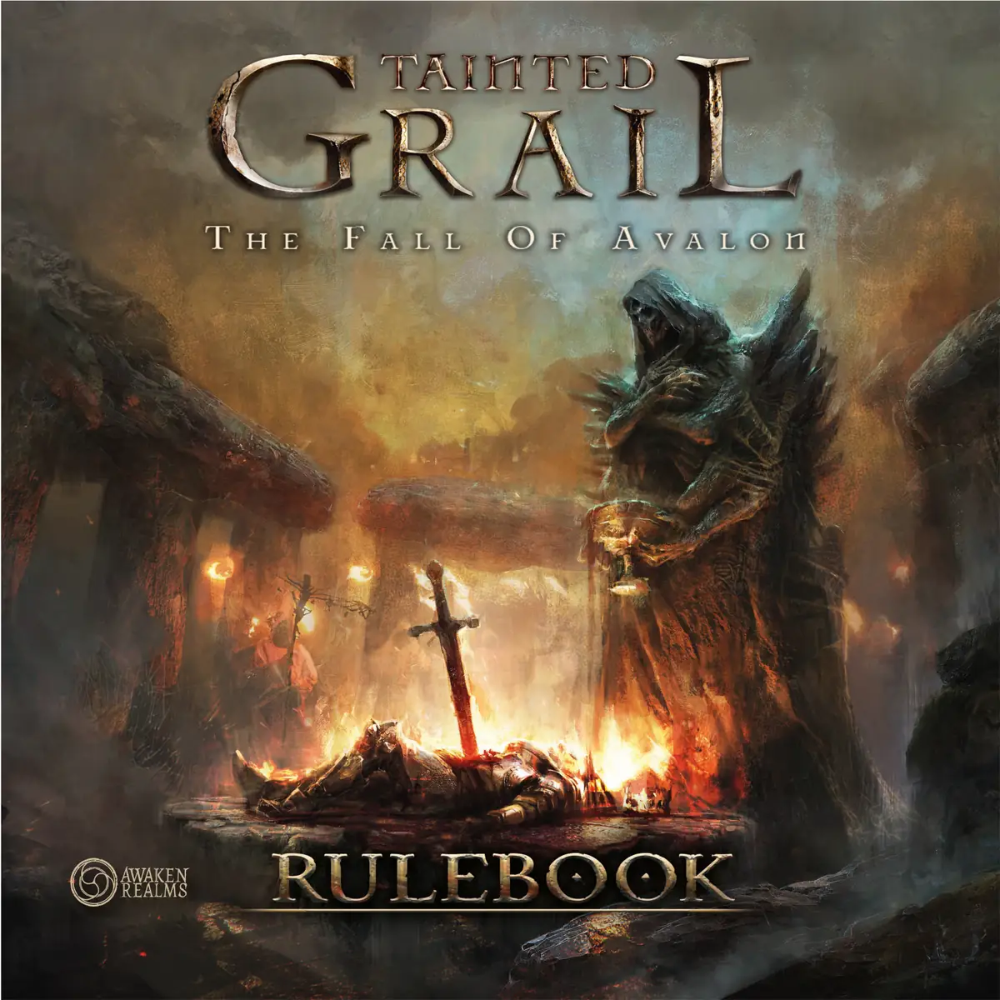
<figcaption>原版规则书 · 第 1 页（点击图片放大）</figcaption>
</figure>

<details class="mt-fold">
<summary>📝 第 1 页 AI 机翻对照（点击展开）</summary>
<div class="mt-body"><p>如果最坏的情况发生，我恳求你：再次拿起你的武器</p>

<p>拯救我们的人民。</p>

<p>菲尔，</p>

<p>Cuanacht（夸纳赫特）首席猎人</p>

<h2>AREV</h2>

<p>s</p>

<p>aun</p>

<p>k</p>

<p>fa</p>

<p>d,</p>

<p>O</p>

<p>took</p>

<p>the</p>

<p>illag</p>

<p>tru</p>

<p>an</p>

<p>atu</p>

<p>ple,</p>

<p>ers f</p>

<p>teps.</p>

<p>tter</p>

<p>ur a</p>

<p>ntsm</p>

<p>我厌恶给你写信，蛆虫，然而如果你收到了这封信，那就意味着我已经死了。</p>

<p>你是对的。古老的传说都是真的，我们的岛屿曾经属于一个扭曲的、不朽的力量。亚瑟，第一位国王，一寸一寸地征服了这个领域。凭借他的骑士和军队，他从原住民手中夺取了圣杯，并用它将我们世界所知的季节和周期带到这个没有神祇的地方。</p>

<p>你们德鲁伊总是告诉我们，村庄中的立石是为了纪念这件事而建造的。但现在我知道了真相：它被建造是为了将这些古老的力量拒之门外——将这个岛屿锚定在人类世界。</p>

<p>好吧，你们都失败了。现在，谷仓空空如也，春天不会到来，我们村庄的立石一天天变暗。我承认我想剥下每个德鲁伊的皮，直到我发现原因，但女祭司Neante声称你们与此事无关。这就是为什么我召集了我们五名最优秀的人。我正带领他们向东，在为时已晚之前——在土地碎片化并沉入wyrdness（奇异之境）之前，在Kamelot（卡梅洛特）寻找帮助。</p>

<p>我没有邀请你加入我的随从，因为尽管我不喜欢德鲁伊，但一个连他们都能背叛的人似乎是个糟糕的选择。然而，如果我们失败了，我别无他人可信任。起来吧，蛆虫。尽你所能拯救这片土地。这是我的最后愿望。</p>

<p>Lord Yvain（伊万爵士）</p>

<h2>MAGGOT</h2>

<p>ave</p>

<p>and</p>

<p>rthur</p>

<p>Wit</p>

<p>e-dw</p>

<p>fom</p>

<p>r vil</p>

<p>the</p>

<p>ncho</p>

<p>sta</p>

<p>age</p>

<p>I d</p>

<p>ing</p>

<p>I'm</p>

<p>–</p>

<p>se a</p>

<p>m</p>

<p>ne e</p>

<p>is l</p>

<h2>BEOR</h2>

<p>Beor（贝奥），</p>

<p>你一直是个好小伙，也是巨大的帮助。如果不是因为你臂膀的力量和决心，我早就关闭了铁匠铺。我觉得我欠你一些东西。</p>

<p>当我告诉你留在Cuanacht（夸纳赫特）照看我的财产时，我误导了你。铁匠铺已经失去了，就像我们其余的土地一样。古老的传说都是真的。我们的岛屿曾经属于扭曲的、不朽的力量。那不是人类居住的地方。但是亚瑟，第一位国王，与我们的民众一起登陆这些海岸，一寸一寸地征服了Avalon（阿瓦隆）。他从原住民手中夺取了圣杯，并用它将我们世界所知的季节和周期带到这个没有神祇的地方。我们都以为村庄中的立石是为了纪念这件事而竖立的。真相是，它被建造是为了将这些古老的力量拒之门外。</p>

<p>现在，立石变暗了。有些东西破碎了。春天不会到来。动物不会繁殖。Lord Yvain（伊万爵士）秘密召集了Cuanacht（夸纳赫特）五名最强壮、最智慧的人，包括我在内。他带领我们向东，在为时已晚之前——在土地开始沉入wyrdness（奇异之境）之前，在Kamelot（卡梅洛特）寻求帮助。</p>

<p>如果我们没有回来，那就意味着我们失败了，而的命运</p>

<p>库纳赫（Cuanacht）的命运掌握在你手中。伊文（Yvain）不希望你加入我们，因为你缺乏经验且脾气暴躁。但我一直相信你，小子。拯救我们的人民，或者——如果你做不到——试着拯救你自己。</p>

<p>埃夫尔（Erfr），</p>

<p>库纳赫的铁匠大师</p>

<h2>记录表</h2>

<p>位置      拨盘值</p>

<p>巨石阵 #1</p>

<p>巨石阵 #2</p>

<p>巨石阵 #3</p>

<p>位置      拨盘值</p>

<p>任务拨盘 #1</p>

<p>任务拨盘 #2</p>

<p>位置</p>

<p>守护者 #1</p>

<p>守护者 #2</p>

<p>玩家笔记：</p>

<h2>姓名：</h2>

<h2>位置：</h2>

<h2>拨盘：</h2>

<h2>食物</h2>

<h2>财富</h2>

<h2>声望</h2>

<h2>经验</h2>

<h2>魔法</h2>

<h2>姓名：</h2>

<h2>位置：</h2>

<h2>拨盘：</h2>

<h2>食物</h2>

<h2>财富</h2>

<h2>声望</h2>

<h2>经验</h2>

<h2>魔法</h2>

<h2>姓名：</h2>

<h2>位置：</h2>

<h2>拨盘：</h2>

<h2>食物</h2>

<h2>财富</h2>

<h2>声望</h2>

<h2>经验</h2>

<h2>魔法</h2>

<h2>姓名：</h2>

<h2>位置：</h2>

<h2>拨盘：</h2>

<h2>食物</h2>

<h2>财富</h2>

<h2>声望</h2>

<h2>经验</h2>

<h2>魔法</h2>

<p>阿瓦隆的盟友（Allies of Avalon）</p>

<p>黑锅（Black Cauldron）</p>

<p>燃烧之谜（Burning Mystery）</p>

<p>来自远方的呼唤（Call from Beyond）</p>

<p>焦灼的知识（Charred Knowledge）</p>

<p>珍爱之物（Cherished Belongings）</p>

<p>寒冷的火葬堆（Cold Pyre）</p>

<p>科苏伊尔（Cosuil）</p>

<p>交易破裂（Deal Breaker）</p>

<p>深藏的秘密（Deep Secret）</p>

<p>外交官（Diplomat）</p>

<p>外交任务（Diplomatic Mission）</p>

<p>令人不安的信息（Disturbing Information）</p>

<p>梦境与预言（Dreams and Prophecies）</p>

<p>路的尽头（End of the Road）</p>

<p>阿瓦隆的敌人（Enemies of Avalon）</p>

<p>升级（Escalation）</p>

<p>费尔的遗产（Fael's Legacy）</p>

<p>骑士精神的衰落（Fall of Chivalry）</p>

<p>当你拥有此状态的任意六个部分时，前往《故事书》（BoS）第525节</p>

<p>远点线索（Farpoint Clues）</p>

<p>远征队的命运（Fate of the Expedition）</p>

<p>当你拥有此状态的1-8部分时，前往《故事书》（BoS）第405节</p>

<p>最终对决（Final Confrontations）</p>

<p>最后一课（Final Lesson）</p>

<p>幸运的相遇（Fortunate Meetings）</p>

<p>大致方向（General Directions）</p>

<p>杰瑞特的继任者（Gerraint's Successor）</p>

<p>格伦仪式（Glen Ritual）</p>

<p>贵客（Guest of Honor）</p>

<p>半途的阴谋（Halfway Intrigue）</p>

<p>援手（Helping Hand）</p>

<p>帮助骑士们（Helping the Knights）</p>

<p>隐藏的宝藏（Hidden Treasures）</p>

<p>猎人的标记（Hunter's Mark）</p>

<p>女士的任务（Lady's Task）</p>

<p>最后的避难所（Last Haven）</p>

<p>被抛下（Left Behind）</p>

<p>迷失与堕落（Lost and Fallen）</p>

<p>马戈特的救赎（Maggot's Redemption）</p>

<p>弑母（Matricide）</p>

<p>已移除的位置：</p>

<p>状态</p>

<p>修道院被发现（Monastery Discovered）</p>

<p>月环任务（Moonring Mission）</p>

<p>摩根的任务（Morgaine's Task）</p>

<p>哀悼之歌（Mourning Song）</p>

<p>谜题已解（Mystery Solved）</p>

<p>探路者（Pathfinder）</p>

<p>城镇的和平（Peace in Borough）</p>

<p>人民的冠军（People's Champion）</p>

<p>掠夺者（Pillager）</p>

<p>收复（Reclamation）</p>

<p>救赎（Redemption）</p>

<p>疗法（Remedy）</p>

<p>残余（Remnants）</p>

<p>恢复秩序（Restoring the Order）</p>

<p>当你拥有此状态的任意六个部分时，前往《故事书》（BoS）第512节</p>

<p>古钢之谜（Riddle of the Oldsteel）</p>

<p>被女神拯救（Saved by the Goddess）</p>

<p>拾荒者（Scrounger）</p>

<p>森林的秘密（Secrets of the Forest）</p>

<p>风暴中的庇护所（Shelter in the Storm）</p>

<p>圣所安全（Shrine Secure）</p>

<p>有什么东西在注视着（Something is Watching）</p>

<p>当你拥有此状态的全部四个部分时，触发特殊事件C</p>

<p>石匠的秘密（Stonemason's Secret）</p>

<p>奇遇（Strange Encounters）</p>

<p>支援起义（Supplying the Revolt）</p>

<p>缠根知识（Tangleroot Knowledge）</p>

<p>追踪者（Tracker）</p>

<p>旅行者（Traveler）</p>

<p>移动的巨石阵（Traveling Menhir）</p>

<p>图阿坦探索（Tuathan Exploration）</p>

<p>安德芬（Underfern）</p>

<p>阿瓦隆之战（War for Avalon）</p>

<p>威尔德之风（Winds of Wyrdness）</p>

<p>I) 拆开你的模型</p>

<p>p</p>

<p>首先，从盒子里取出你的角色模型、一个巨石阵模型和一个拨盘（八边形塑料硬币）。</p>

<p>你们旅行者的四个角色是游戏中可用的角色——不太可能的英雄、岛上的普通人，每个人都带着一种污点，使他们无法加入最近离开家乡的冠军队伍。</p>

<p>贝奥（BEOR）是当地铁匠，以脾气暴躁闻名。他尽力隐藏侧部一个化脓无法愈合的伤口，这个伤口是在神秘情况下获得的。</p>

<p>艾蕾（AILEI）是被流放者，她的整个家庭都在威尔德（wyrdness）中丧生。她通过向当地人供应草药和根茎来勉强维生。</p>

<p>MAGGOT 是德鲁伊教派的叛徒，他与生俱来的能力被他对致幻混合物和蘑菇的破坏性成瘾所抑制。</p>

<p>AREV 是一个看似简单的农民，但有不简单的过去。他曾经是个雇佣兵，双手沾满了过多的鲜血，现在一个神秘的诅咒一直跟随他。</p>

<p>戴兜帽的雕像就是 MENHIR（巨石阵）。它的起源和目的将在你的冒险过程中揭示，但现在你应该知道：</p>

<p>你只能在激活的 MENHIR 范围内探索岛屿的某些部分。</p>

<p>每个 MENHIR 都有一个空间用于放置 DIAL（刻度盘）。这些八边形指示物有多种用途：它们倒计时到 MENHIR 消失的时刻，它们可以被像硬币一样抛掷，并且被许多特殊规则使用。</p>

<p>在这个即开即玩的教程中，你将扮演 Beor。Beor 的高生命值和战斗 prowess 可以让没有经验的玩家避免他们在第一次旅程中注定会犯的一些错误，而他的制作行动则提供了不错的起始装备。</p>

<p>将 Beor 的模型（一个拿着锤子的男人）、一个 MENHIR 和一个 DIAL 放在你面前。将其他模型放回盒中。</p>

<p>II) 拆开通用指示物</p>

<p>I)</p>

<p>红色通用 MARKER（指示物）在游戏中以多种不同方式使用。从盒中取出一些，放在一堆旁边。</p>

<p>紫色指示物的价值相当于五个红色指示物，用于表示大量资源。现在将它们留在盒中。</p>

<p>III) 拿取蓝色角色托盘</p>

<p>从盒中取出蓝色 CHARACTER TRAY（角色托盘）（如上）。你可以在规则书中找到角色托盘上所有图标的完整解释，但托盘最重要的部分是用于管理你以下三项的三重 TRACK（轨道）：</p>

<p>ENERGY（能量）——你的基本耐力，被旅行、战斗和探索所消耗。它每天都会恢复（只要你进食和休息）。</p>

<h2>HEALTH（生命值）——你的身体状况。你的能量永远不会高于你的生命值。当你的生命值达到红色区域时，你处于死亡边缘，将"YOU'RE DYING!"（你正在死去！）卡牌附着到你的角色托盘上。</h2>

<h2>TERROR（恐惧）——你逐渐蔓延的疯狂。一旦达到顶部，你开始变得疯狂，使任何行动变得困难。此外，如果你的恐惧值高于你的生命值，你在战斗和外交中会恐慌。每当你的恐惧值达到红色区域时，你处于疯狂的边缘，将"YOU'RE GOING INSANE!"（你正在变得疯狂！）卡牌附着到你的角色托盘上。</h2>

<p>IV) 设置你的角色</p>

<p>取出上面显示的 Beor 的 CHARACTER TILE（角色板块）。将板块旋转，使"Setup: Beor"（设置：Beor）面朝上。它会指导你如何为 Beor 准备蓝色角色托盘。</p>

<p>首先，标记 Beor 属性的起始等级。在左右边缘的属性槽中放置红色指示物。</p>

<p>根据角色板块上的说明，将角色板块放置在托盘上。</p>

<p>这意味着 Beor 初始拥有 2 点攻击力、1 点勇气、1 点实用性和 1 点谨慎。</p>

<p>然后，在盒子中找到 T 形的生命值指示物。</p>

<p>将此指示物放置在起始生命值轨道槽位中，该槽位由两个红色箭头高亮显示（Beor 为槽位 9）。现在，在您的角色托盘上找到能量和恐惧轨道，它们位于生命值轨道的左右两侧。将通用指示物放置在这些轨道的起始槽位中，由两个红色箭头高亮显示。</p>

<p>从这里开始！</p>

<p>本开盒游玩指南将帮助您设置并开始您的第一次亚瑟兰单人冒险，并教您所有基本游戏规则。设计为大约一小时的游戏时间，不包含主线战役的任何剧透。</p>

<p>他们仍然称这个地方为"农庄"，尽管贫瘠的田地提供很少的食物，摇摇欲坠的墙壁也提供不了任何保护。Cunanacht 荣耀时期的最后遗迹是它的立石，总是装饰着红色丝带，被蜡烛照亮，并在其扭曲的脚部每日供奉。只要立石能驱邪，镇上的人们就准备好忍受任何事情。</p>

<p>但昨晚，邪祅比以往任何时候都更接近。一个人迷失了，追随着他未来自我的呼唤。镇外的一座房子内外颠倒，家具长成了一个膨胀的外壳，像船体上的藤壶。好几个小时里，空气尝起来像金属和酸牛奶的味道。</p>

<p>现在，人们说你的守护立石正在失效，像全国许多其他立石一样。</p>

<p>对你来说，夜晚甚至更糟。你侧面的伤口在搏动，仿佛有什么东西试图挣脱出来，加入镇外翻滚的邪祅云中。</p>

<p>早上，一个男孩跑到你的小屋。"Erfr 先生需要见你！快走，你这个笨蛋！"</p>

<p>你用精准的一把靴子把小崽子赶走，并立即开始后悔，因为靴子落在了你门外的一个深水坑里。</p>

<h2>目录</h2>

<h2>制作人员</h2>

<p>2-3</p>

<h2>组件列表</h2>

<h2>基本信息概述</h2>

<h2>组件总览</h2>

<p>6-7</p>

<h2>战役设置</h2>

<p>8-9</p>

<h2>游戏进行</h2>

<p>10-13</p>

<h2>基本规则</h2>

<p>14-17</p>

<h2>战斗</h2>

<p>18-21</p>

<h2>外交</h2>

<h2>替代游戏模式</h2>

<h2>索引</h2>

<h2>规则摘要</h2>

<h2>组件列表</h2>

<p>下面，您可以找到受诅圣杯：亚瑟兰陷落核心盒内所有组件的详细列表。请注意，包含扩展（如 Niamh 扩展）的游戏版本将包含此处未列出的额外组件。</p>

<h2>模型</h2>

<h2>托盘与板块</h2>

<h2>1 个 Beor 模型</h2>

<h2>1 个绿色托盘</h2>

<h2>1 个蓝色托盘</h2>

<h2>1 个棕色托盘</h2>

<h2>1 个灰色托盘</h2>

<h2>4 个角色板块</h2>

<h2>1 个 Ailei 模型</h2>

<h2>1 个 Arev 模型</h2>

<h2>1 个蛆虫模型</h2>

<h2>3 个立石模型</h2>

<h2>1 个森林居民模型</h2>

<h2>纸质组件</h2>

<h2>4 张起始字母</h2>

<h2>4 张冒险地图</h2>

<h2>30 张记分表</h2>

<h2>开局与游玩指南</h2>

<h2>规则书</h2>

<h2>阿瓦隆的陨落</h2>

<h2>探索日志</h2>

<h2>制作人员名单</h2>

<p>游戏设计：KrËysËtof iskorski, Marcin †wierkot</p>

<p>艺术指导：Marcin †wierkot, iotr 	oksowicË</p>

<p>测试与开发：KrËysËtof iskorski, aweĔ Samborski,</p>

<p>AndrËej BetkiewicË, Marcin †wierkot, eukasË Krawiec,</p>

<p>an</p>

<p>TruchanowicË, BartĔomiej KalisË, KrËysËtof BelcËyk, MichaĔ Lach</p>

<p>规则书：KrËysËtof iskorski, aweĔ Samborski, AndrËej BetkiewicË,</p>

<p>eukasË Krawiec, MichaĔ Lach</p>

<p>插画：iotr 	oksowicË, Ewa Labak, atryk</p>

<p>ûdrasËek,</p>

<p>MichaĔ eitsch, iotr rleaĖski,</p>

<p>akub KaŞmiercËak, AndrËej</p>

<p>ĜĔtoranos, iotr KryĖski</p>

<p>平面设计：</p>

<p>ûdrËej CieĶlak, Adrian RadËiun, AndrËej ĜĔtoranos,</p>

<p>Е</p>

<p>òÁ¹º´Äʃ</p>

<p>ûdrËej Chomicki, iotr</p>

<p>acek, AgniesËka ogan,</p>

<p>MateusË ModËelewski,</p>

<p>akub iĜĔkowski</p>

<p>叙事设计：Krzysztof Piskorski</p>

<p>文案：KrËysËtof iskorski, AndrËej BetkiewicË, an Morley</p>

<p>编辑：Matt Click, KrËysËtof iskorski</p>

<p>校对：Hervì aubert, an Morley, Matt Click, eukasË</p>

<p>Krawiec,</p>

<p>an TruchanowicË, BartĔomiej KalisË, KrËysËtof BelcËyk,</p>

<p>MichaĔ Lach, 以及我们社区的无价帮助，</p>

<p>包括 	rank Calcagno, Christi Kropf, enis oisson, Ricky</p>

<p>atel 和其他人。</p>

<p>额外测试：所有在 AR-Bar、K</p>

<p>ames Expo ʒГ9、Essen ʒГК 等活动中参与我们游戏测试的人。</p>

<p>Д.В µºÅºÀ¿ʃ KrËysËtof iskorski, MichaĔ Lach, Konrad SulŠycki,</p>

<p>Adrian KrawcËyk, iktoria †lusarcËyk, Anna CËajka,</p>

<p>acek</p>

<p>SËcËypiĖski, atrycja MarËec</p>

<h2>特别感谢：</h2>

<p>所有帮助我们实现这款游戏的 Kickstarter 支持者， MichaĔ racË 的指导， Adam KwapiĖski 的建设性批评，所有 Tainted</p>

<p>rail 社区的校对人员，以及那些花费时间和精力参与游戏开发的人们。</p>

<p>最后，要感谢</p>

<p>ordan Luminais，他是最好的机器人。</p>

<p>附加这些地点卡牌，当你到达你的新地点时（它们的地点编号与你地点卡牌边缘的方向键相匹配，并且它们在一个活跃的巨石范围内，包括对角线方向）。</p>

<h2>基础规则</h2>

<p>在你开始游戏之前，你应该熟悉本节中描述的被诅咒圣杯的关键概念。</p>

<p>Г</p>

<p>Д</p>

<p>Е</p>

<p>Ж</p>

<p>З</p>

<p>И</p>

<p>Й</p>

<p>Г</p>

<p>Д</p>

<p>Е</p>

<p>Ж</p>

<p>З</p>

<p>И</p></div>
</details>

<figure>
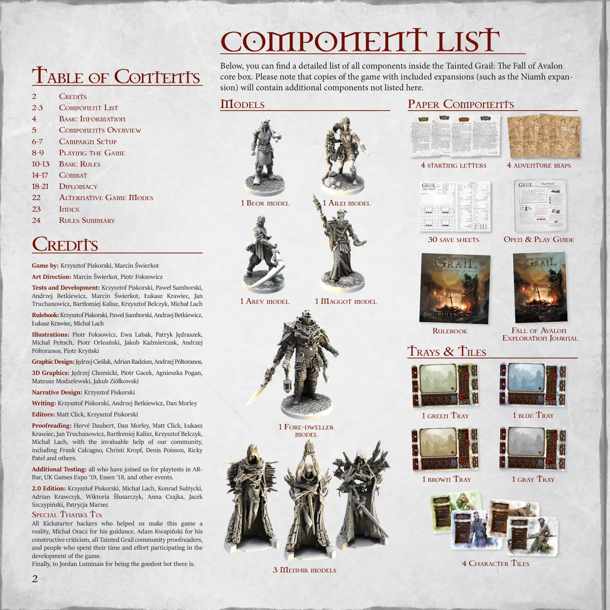
<figcaption>原版规则书 · 第 2 页（点击图片放大）</figcaption>
</figure>

<details class="mt-fold">
<summary>📝 第 2 页 AI 机翻对照（点击展开）</summary>
<div class="mt-body"><p>我最亲爱的学徒，</p>

<p>我为我们能用来教育你的时间如此之少而深感遗憾！我被迫在传授给你应得的知识的一小部分之前就离开了城镇（尽管你宁愿在草地上度过时光，也不愿待在神殿，这确实没有帮助）。</p>

<p>要知道：古老的传说都是真的。我们的岛屿曾经属于扭曲的、不朽的力量。阿瓦隆并非为人类而创造。但是，亚瑟，我们的第一位国王，带领我们的人民登陆这片海岸，一步步征服了这个领域。他从原住民手中夺取圣杯，用它为我们世界已知的季节和周期带来生机。我们都以为村里那些立石是为了纪念这件事而竖立的。真相是，它们被创造出来是为了将这些古老的力量拒之门外，将岛屿锚定在人类世界。</p>

<p>现在，立石正在变暗，我们很快也会随之被遗忘。因此，伊万勋爵秘密地聚集了五位最强壮、最智慧的勇士，包括我在内。他带领我们向东，前往卡梅洛特寻求帮助，为时未晚——在土地分裂并沉入奇异之境之前。</p>

<p>如果我们三十天内没有回来或送出消息，那就意味着我们失败了，库纳赫特的命运就落在了你肩上。伊万认为你太不稳定，无法与我们同行，而且我的符文预示如果你去了，你将无法活着回来。但独自一人，你或许还有一线生机。拯救我们的人民，或者——如果你做不到——尝试拯救你自己。</p>

<p>并且永远记住：对我来说，你是我永远无法拥有的女儿。</p>

<p>保重！</p>

<p>尼安特，</p>

<p>库纳赫特的女祭司</p>

<h2>艾蕾</h2>

<p>你的</p>

<p>一个</p>

<p>相当</p>

<p>不</p>

<p>岛屿</p>

<p>扭曲的</p>

<p>这些</p>

<p>took</p>

<p>这些</p>

<p>周期</p>

<p>立石</p>

<p>它被</p>

<p>到</p>

<p>很快</p>

<p>跟随</p>

<p>东方</p>

<p>和</p>

<p>第一</p>

<p>为你</p>

<p>的</p>

<p>拯救</p>

<p>你</p>

<p>女祭司</p>

<p>的</p>

<p>我的朋友，</p>

<p>我知道你的秘密。</p>

<p>我知道你不是农民，你定居在这里是为了逃避某些事情。我知道被过去的行径所困扰、抛弃旧生活是什么感觉。我也认得出一个战士，我相信如果我失败了，你就是这个镇上第二好的机会。</p>

<p>要知道阿瓦隆曾经属于扭曲的、不朽的力量。它不是人类的地方。亚瑟，那位过去与未来的国王，一步步征服了这个领域。他从原住民手中夺取圣杯，用它将我们世界的法则带入这个没有神祇的地方。村里的人们相信他们的立石是为了纪念这件事而竖立的。真相是，它被创造出来是为了将这些古老的力量拒之门外——将阿瓦隆锚定在人类世界。</p>

<p>现在，立石正在变暗。自然法则一个接一个地瓦解。伊万勋秘</p></div>
</details>

<figure>
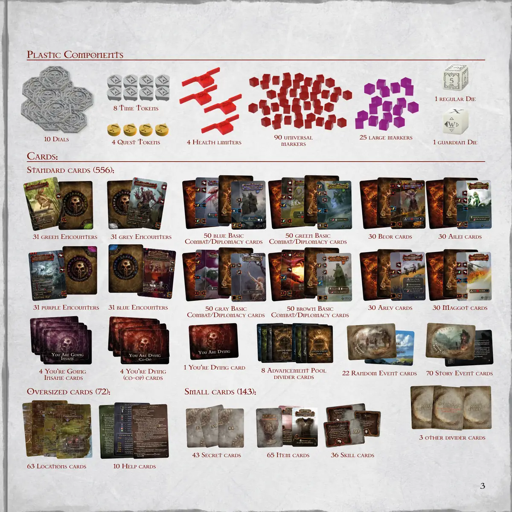
<figcaption>原版规则书 · 第 3 页（点击图片放大）</figcaption>
</figure>

<details class="mt-fold">
<summary>📝 第 3 页 AI 机翻对照（点击展开）</summary>
<div class="mt-body"><p>机会主义者</p>

<h2>林地野兔</h2>

<p>机会：逃跑</p>

<p>消耗：2 食物</p>

<p>机会主义者</p>

<p>尽管它可以长到羊的大小，</p>

<p>但它以其难以捉摸而闻名。</p>

<p>1-2</p>

<p>选择1</p>

<p>，失去</p>

<p>冲锋</p>

<h2>疯狂的农夫</h2>

<p>冲</p>

<p>当世界似乎已经疯狂时，</p>

<p>很难不失去理智。</p>

<p>机会：逃跑</p>

<p>消耗：1 食物</p>

<p>2x</p>

<p>控制</p>

<p>你自己</p>

<h2>诱惑</h2>

<p>访客可以沉迷于许多恶习 -</p>

<p>没有一个是便宜或安全的，但它们都很诱人。</p>

<p>奖励：失去1</p>

<p>失败：失去1 声望 失去2 财富</p>

<p>2x</p>

<p>1x</p>

<p>ڜ/25 Ã</p>

<h2>忽略疼痛</h2>

<p>永久获得1个</p>

<p>骰子</p>

<p>每受到1点伤害。</p>

<p>ڟ/25 æ</p>

<h2>致命一击</h2>

<p>选择1个</p>

<p>敌人角色，</p>

<p>失去1个</p>

<p>生命值。</p>

<p>5/25 G</p>

<h2>纠缠陷阱</h2>

<p>在敌人角色</p>

<p>行动后，</p>

<p>失去1个</p>

<p>行动。</p>

<p>2x</p>

<p>ڟ/25</p>

<h2>战斗魔法</h2>

<p>获得1个</p>

<p>骰子。</p>

<p>1x</p>

<p>5/25 Ã</p>

<h2>威胁性</h2>

<h2>声音</h2>

<p>选择1个 声望。</p>

<p>如果你有至少2个</p>

<p>声望，</p>

<p>获得2个</p>

<p>行动。</p>

<p>2x</p>

<p>ڝ/25 æ</p>

<h2>注重细节</h2>

<p>抽1张卡牌。</p>

<p>1x</p>

<p>ڝ/25 G</p>

<h2>转移注意力</h2>

<p>如果你</p>

<p>转移注意力，</p>

<p>失去1个 声望。</p>

<p>2/15 Ã</p>

<h2>贝奥</h2>

<h2>狂暴</h2>

<p>获得1个</p>

<p>骰子</p>

<p>每有1个</p>

<p>敌人角色。</p>

<p>ڜx</p>

<p>2/15 æ</p>

<h2>阿雷夫</h2>

<h2>镰刀拉扯</h2>

<p>在目标卡牌上放置1个</p>

<p>充能。</p>

<p>选择一个敌人</p>

<p>角色，其行动值</p>

<p>在行动值表格上</p>

<p>比目标卡牌</p>

<p>高或低1点。</p>

<p>在目标卡牌</p>

<p>之后行动。</p>

<p>2x</p>

<p>2/15 G</p>

<h2>艾莱</h2>

<h2>致盲尘土</h2>

<p>忽略敌人角色</p>

<p>的行动。</p>

<p>2x</p>

<p>ڟ/15</p>

<h2>蛆虫</h2>

<h2>恶毒的诅咒</h2>

<p>获得1个</p>

<p>骰子</p>

<p>每有1个</p>

<p>敌人角色。</p>

<p>1x</p>

<p>11/25</p>

<h2>修辞</h2>

<p>在回应</p>

<p>之后，</p>

<p>永久获得1个</p>

<p>骰子</p>

<p>代替。</p>

<h2>好天气</h2>

<p>每个角色的</p>

<p>首次旅行</p>

<p>今天，成本减少1</p>

<p>。</p>

<p>经验丰富的旅行者知道要在好天气持续期间</p>

<p>充分利用它。</p>

<h2>第一章设置（正面）</h2>

<p>准备事件牌堆：</p>

<p>找到第一章的所有部分，将它们从ڟ（底部）到1（顶部）堆叠。</p>

<p>提示：构建事件牌堆时要格外小心，</p>

<p>并仔细检查是否正确堆叠（第1部分在顶部，</p>

<p>其余按升序排列）。</p>

<p>提示：一些事件卡会修改事件牌堆，</p>

<p>例如在牌堆顶部添加随机事件。</p>

<p>此外，探索日志有时会要求你解决章节的特定部分</p>

<ul>
  <li>在这种情况下，从牌堆中取出特定卡牌并解决它，</li>
</ul>

<p>不要改变其余牌堆。</p>

<p>现在，按照这张卡片背面的说明进行操作。</p>

<p>E</p>

<p>V</p>

<p>E</p>

<p>N</p>

<p>T</p>

<p>E</p>

<p>T</p>

<p>E</p>

<p>V</p>

<p>E</p>

<p>V</p>

<p>E</p>

<p>N</p>

<p>T</p>

<p>R</p>

<p>A</p>

<p>N</p>

<p>D</p>

<p>O</p>

<p>M</p>

<p>P</p>

<p>A</p>

<p>R</p>

<p>T</p>

<p>P</p>

<p>A</p>

<p>R</p>

<p>T</p>

<p>C</p>

<p>H</p>

<p>A</p>

<p>P</p>

<p>T</p>

<p>E</p>

<p>R</p>

<h2>帮助难民：</h2>

<p>失去1 食物，获得1 声望</p>

<p>神圣的平原上挤满了来自西部的难民。</p>

<h2>践踏</h2>

<p>失去1 食物</p>

<p>神圣的平原上</p>

<h2>践踏</h2>

<p>失去1 食物</p>

<h2>帮助</h2>

<h2>收集食物：</h2>

<p>获得2 食物，抽1张绿色 计数器</p>

<p>在古代，只有德鲁伊被允许进入</p>

<p>树林 - 有充分的理由，但现在已被遗忘。</p>

<h2>猎人树林</h2>

<p>g</p>

<p>E</p>

<h2>鹅：</h2>

<p>获得1 声望</p>

<h2>难民</h2>

<h2>食物</h2>

<p>失去1 食物，抽1张绿色</p>

<p>计数器，获得1 声望</p>

<p>抽</p>

<p>声望</p>

<p>来自西部的难民</p>

<p>在古代，只有德鲁伊被允许进入</p>

<p>树林 - 有充分的理由，但现在已被遗忘。</p>

<h2>猎人</h2>

<p>树林</p>

<p>U</p>

<p>'</p>

<h2>树林</h2>

<p>R</p>

<h2>ER FOOD</h2>

<p>een /</p>

<p>e</p>

<p>s were allo</p>

<p>s were allo</p>

<p>/nco</p>

<p>nco</p>

<h2>COMBAT TRIAL:</h2>

<p>hose 1</p>

<p>܌ 获得 1 经验值（每天一次）</p>

<p>g</p>

<p>on, that is now</p>

<p>gees from the</p>

<p>reason, that i</p>

<p>gees from the</p>

<p>随着岛上发生的一切，</p>

<p>熟练的战士已成为一种货币。</p>

<h2>WARRIOR FAIR</h2>

<p>D:</p>

<p>t</p>

<p>orgotten.</p>

<p>w fo</p>

<p>t.</p>

<p>w</p>

<p>t.</p>

<p>VE</p>

<p>D:</p>

<p>owed into</p>

<p>owe</p>

<p>oƿnƷerCOMBAT</p>

<p>OM</p>

<p>T</p>

<h2>IAL</h2>

<p>RI</p>

<p>:</p>

<p>܌获得 1</p>

<p>܌ 获得 1 经验值</p>

<p>Ex (on</p>

<p>orgotten.</p>

<p>w fo</p>

<p>n th i l</p>

<p>happened on</p>

<p>ng that has h</p>

<p>ng that has h</p>

<p>have beco</p>

<h2>WARR</h2>

<p>A</p>

<p>WA</p>

<p>WA</p>

<p>W</p>

<h2>RIOR</h2>

<p>R</p>

<h2>F IR</h2>

<p>AI</p>

<p>FA</p>

<p>F</p>

<h2>IAL</h2>

<p>RI</p>

<p>:</p>

<p>per day)</p>

<p>nce p</p>

<p>d</p>

<p>ce p</p>

<p>'raǜ a graǢ /ncoƿnƷer ǜhen</p>

<p>Ǣoƿ enƷer Ʒhis hocaƷion</p>

<p>(once per day)</p>

<p>n the island,</p>

<p>happened on</p>

<p>as h</p>

<p>y of their own.</p>

<p>e a currency</p>

<p>ome</p>

<p>抚摸这片荒凉高地长草的风也带来了烧焦肉类的气味。</p>

<h2>F IR</h2>

<p>AI</p>

<p>FA</p>

<p>F</p>

<h2>CHARRED CONCLAVE</h2>

<h2>ORDER OF THE DAY</h2>

<h2>I) 一天开始：</h2>

<p>解决"日"效果。</p>

<p>移除过期的renhirs并丢弃超出renhir范围的hocaƷions。</p>

<p>减少所有¼ime和renhir 'ials܌ 移除¼ime ¼oţens。</p>

<p>证明Gƿardians。</p>

<p>揭示下一个/venƷ Card。</p>

<p>£icţ acƟive SƷem和®ecreƷ cards。</p>

<h2>II) 白天期间：</h2>

<p>（直到每个人都用完行动或跳过）：</p>

<p>玩家以任意顺序各执行一个行动。</p>

<h2>III) 一天结束</h2>

<p>解决"日"结束效果。</p>

<p>Rest ܫ Ǣoƿ maǢ ƟaƟ 1 Food Ʒo gain 1</p>

<p>并失去 1</p>

<p>Restore</p>

<p>到满。</p>

<p>• Sf Ǣoƿ are /xhaƿsƟed܌ resƟore ڝ ƟoinƟs of</p>

<p>instead.</p>

<p>通过消耗经验值提升你的角色。</p>

<p>修改你的牌库。</p>

<p>如果你在有</p>

<p>图标的位置，</p>

<p>阅读梦境。</p>

<p>• 如果"你正在发疯"，则阅读噩梦。</p>

<p>开始下一天（进入阶段I）。</p>

<p> 行动图标</p>

<p> 继续探索日志</p>

<p></p>

<p>进入位置后立即解决</p>

<p></p>

<p>能量</p>

<p></p>

<p>生命值</p>

<p></p>

<p>恐怖</p>

<p></p>

<p>Renhir</p>

<p></p>

<p>梦境</p>

<p></p>

<p>不友好定居点</p>

<p></p>

<p>友好定居点</p>

<h2>图标词汇表</h2>

<h2>角色提升</h2>

<p>2 经验值</p>

<p> 'raǜ ڜ ComĚaƷ或'iƟlomacǢ cards from</p>

<p>Ǣoƿr dvancemenƷ £ool。选择一个，</p>

<p>ƟƿƷ Ʒhe resƟ Ěacţ܌ 和 shƿDzǴle Ʒhe £ool。</p>

<p>2 经验值</p>

<p> 1sƟ ƟoinƟ in one of Ʒhe ƷƷriĚƿƷe Ɵairs</p>

<p>ڝ 经验值</p>

<p> 2nd ƟoinƟ in one of Ʒhe ƷƷriĚƿƷe Ɵairs</p>

<p>ڟ 经验值</p>

<p> ڜrd ƟoinƟ in one of Ʒhe ƷƷriĚƿƷe Ɵairs</p>

<p>ڡ 经验值</p>

<p> ڝƟh ƟoinƟ in one of Ʒhe ƷƷriĚƿƷe Ɵairs</p>

<p>1ڙ 经验值</p>

<p> 5Ɵh和fƿrƟher ƟoinƟs in one</p>

<p>of Ʒhe ƷƷriĚƿƷe Ɵairs。</p>

<h2>开始遭遇</h2>

<p>• 'raǜ ڜ cards from Ʒhe ComĚaƷ decƚ</p>

<p>ܣڝ £arƟǢ memĚers: 2 cardsܤ.</p>

<p>• 检查敌人特性。</p>

<h2>I) 选择活跃角色</h2>

<h2>II) 角色激活</h2>

<ol>
  <li>延迟能力 ܫ 从每张卡牌上移除1个时间标记，</li>
</ol>

<p>解决任何因时间标记移除而触发的能力。</p>

<h3>2) 出牌或接受反击机会：</h3>

<p>» 出手牌中的任何一张战斗卡。</p>

<p>» 出任意数量的额外战斗卡（每张额外卡需要与奖励图标相连）。</p>

<p>ǼƟer ƷhaƷ܌ Ɵerform Ʒhe VictoryCheck。</p>

<p>• 如果你没有打出任何卡牌，解决遭遇牌上列出的机会攻击，然后摸1张命运卡牌。</p>

<ol>
  <li>敌人攻击 - 解决与战斗池中指示物数量相匹配的遭遇牌上的攻击。然后进行胜利检查。</li>
  <li>检查准备状态 - 如果每个队员都已激活，进入第三阶段（结束回合）。如果没有，回到第一阶段（选择活跃角色）。</li>
</ol>

<h2>III) 结束回合</h2>

<p>• 弃牌 - 每个队员弃掉2张命运卡牌。</p>

<p>• 摸牌 - 每个队员摸1张命运卡牌。</p>

<p>• 开始下一回合 - 进入第一阶段（选择活跃角色）</p>

<h2>胜利检查</h2>

<p>• 计算战斗池中的指示物数量 - 如果其数量等于或高于遭遇值，你就赢得了这次遭遇。</p>

<h2>战斗中的恐慌</h2>

<p>• 当你的恐慌值高于你的意志值时，参见恐慌规则。</p>

<h2>战斗概览</h2>

<p>• 开始下一回合 - 进入第一阶段（选择活跃角色）</p>

<p>或弃掉1个STEM</p>

<p>，失去2点生命值</p>

<p>奖励：1点经验值，1点魔法值</p>

<p>替代奖励：获得1个食物</p>

<p>或2张卡牌</p>

<p>当无法形容的饥饿来临时，</p>

<p>它首先吃掉了自己的身体。</p>

<p>防御型，机会主义者</p>

<h2>无实体</h2>

<h2>贪婪</h2>

<p>2 7</p>

<p>武器</p>

<h2>生锈的剑</h2>

<p>当你的角色在战斗中激活时，</p>

<p>你可以获得1点力量，</p>

<p>然后掷一个命运轮盘。</p>

<p>圣杯：什么都不会发生。</p>

<p>骷髅：弃掉这件物品。</p>

<p>在战斗中：</p>

<p>每当连接一个</p>

<p>或</p>

<p>钥匙，</p>

<p>获得1个额外的</p>

<p>。</p>

<h2>巨大</h2>

<h2>力量</h2>

<p>在战斗中：</p>

<p>每当连接一个</p>

<p>钥匙，</p>

<p>获得1个额外的</p>

<p>。</p>

<h2>粗鲁</h2>

<h2>力量</h2>

<p>每当你在某个元素中休息，</p>

<p>获得1个食物。</p>

<h2>施舍</h2>

<p>每当你在战斗中连接一个</p>

<p>或</p>

<p>钥匙，</p>

<p>获得1个额外的</p>

<p>。</p>

<p>每当抽到随机事件卡牌，你可以</p>

<p>花费1点魔法值来弃掉它，</p>

<p>并从随机事件牌库中抽一张新的。</p>

<h2>旅行者的仪式</h2>

<h2>卡牌：</h2>

<h2>超大卡牌 (72张)：</h2>

<h2>标准卡牌 (556张)：</h2>

<h2>小卡牌 (143张)：</h2>

<h2>塑料组件</h2>

<h2>10个命运轮盘</h2>

<h2>63张位置卡牌</h2>

<h2>31张灰色遭遇牌</h2>

<h2>43张秘密卡牌</h2>

<h2>65张物品卡牌</h2>

<h2>36张技能卡牌</h2>

<h2>30张贝奥卡牌</h2>

<h2>30张艾蕾卡牌</h2>

<h2>30张阿瑞夫卡牌</h2>

<h2>30只蛆虫卡牌</h2>

<h2>50张绿色基础</h2>

<h2>战斗/外交卡牌</h2>

<h2>4张你要发疯卡牌</h2>

<h2>4你要死亡</h2>

<h2>(合作)卡牌</h2>

<h2>8张进阶池</h2>

<h2>分隔卡牌</h2>

<h2>1张你要死亡卡牌</h2>

<h2>3张其他分隔卡牌</h2>

<h2>50张绿色基础</h2>

<h2>战斗/外交卡牌</h2>

<h2>50张灰色基础</h2>

<h2>战斗/外交卡牌</h2>

<h2>50张棕色基础</h2>

<h2>战斗/外交卡牌</h2>

<h2>31张绿色遭遇牌</h2>

<h2>31张紫色遭遇牌</h2>

<h2>31张蓝色遭遇牌</h2>

<h2>70张故事事件卡牌</h2>

<h2>22张随机事件卡牌</h2>

<h2>10张帮助卡牌</h2>

<h2>8个时间指示物</h2>

<h2>4个任务指示物</h2>

<h2>4个生命值限制器</h2>

<h2>1个守护者骰子</h2>

<h2>1个普通骰子</h2>

<h2>25个大指示物</h2>

<h2>90个通用</h2>

<h2>指示物</h2></div>
</details>

<figure>
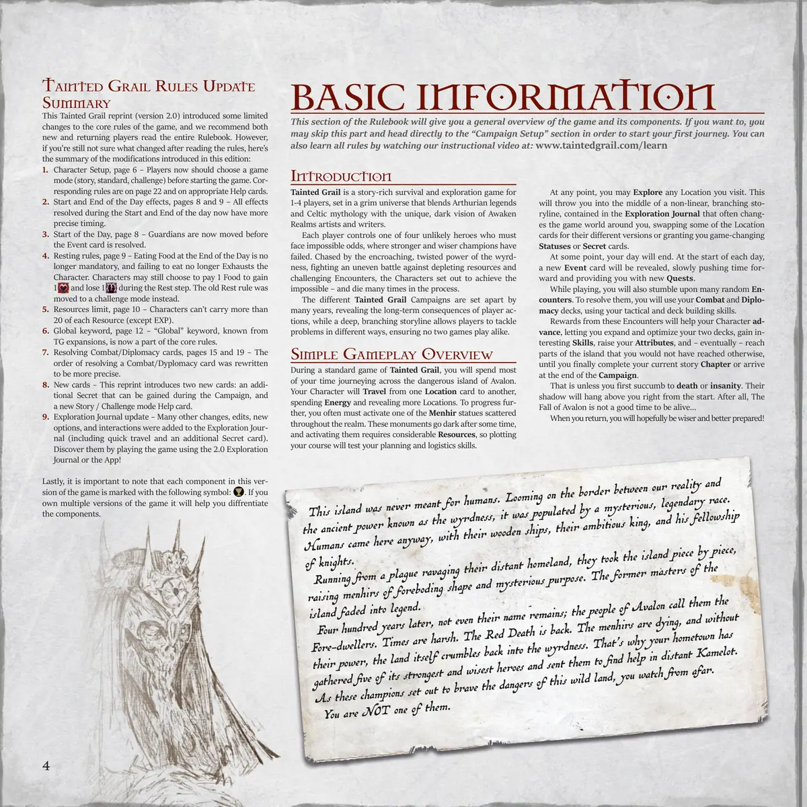
<figcaption>原版规则书 · 第 4 页（点击图片放大）</figcaption>
</figure>

<details class="mt-fold">
<summary>📝 第 4 页 AI 机翻对照（点击展开）</summary>
<div class="mt-body"><h2>被污染圣杯规则更新</h2>

<h2>概述</h2>

<p>这次被污染圣杯的再版（版本 Д.В）对游戏核心规则进行了一些有限更改，我们建议新老玩家都阅读整本规则书。然而，如果你在阅读规则后仍不确定有什么变化，以下是本版引入的修改摘要：</p>

<p>Г. 角色设置，第 И 页 - 玩家现在应在游戏开始前选择游戏模式（故事模式、标准模式、挑战模式）。相关规则在第 ДД 页和相应的帮助卡上。</p>

<p>Д. 一天开始和结束的效果，第 К 和 9 页 - 在一天开始和结束期间解决的所有效果现在有更精确的时机。</p>

<p>Е. 一天开始，第 К 页 - 守卫者现在在事件卡被解决之前移动。</p>

<p>Ж. 休息规则，第 9 页 - 在一天结束时进食不再是强制性的，不进食不再会使角色疲劳。角色仍可选择支付 Г 食物来获得 Г 并失去 Г，在休息步骤中。旧的休息规则被移至挑战模式。</p>

<p>З. 资源限制，第 ГВ 页 - 角色不能携带超过 ДВ 的每种资源（除 E 外）。</p>

<p>И. 全局关键词，第 ГД 页 - 来自 T 扩展的"全局"关键词现在是核心规则的一部分。</p>

<p>Й. 解决战斗/外交卡，第 ГЗ 和 Г9 页 - 解决战斗/外交卡的顺序被重写，以更精确。</p>

<p>К. 新卡牌 - 这次再版引入了两张新卡牌：在战役期间可以获得的一张额外秘密卡，以及一张新的故事/挑战模式帮助卡。</p>

<p>Л. 探索日志更新 - 探索日志中添加了许多其他更改、编辑、新选项和互动（包括快速旅行和一张额外的秘密卡牌）。通过使用 Д.В 探索日志或应用程序来玩游戏，你会发现它们。</p>

<p>最后，重要的是要注意，本版本游戏中的每个组件都标有以下符号：</p>

<p>. 如果你拥有游戏的多个版本，这将帮助你区分组件。</p>

<p>这座岛屿从未为人类而存在。它耸立在我们的现实与被称为 wyrdness 的古老力量之间的边界上，由一个神秘、传奇的种族居住。人类还是来了，带着他们的木船、他们的雄心勃勃的国王和他的骑士团。</p>

<p>为了逃离肆虐他们遥远家园的瘟疫，他们一步步占领了这座岛屿，竖立起形状不祥、目的神秘的巨石阵。岛屿的前主人逐渐消失在传说中。</p>

<p>四百年后，甚至连他们的名字都不复存在；亚瑟岛人民称他们为前住民。时代严酷。红死病卷土重来。巨石正在消亡，没有它们的力量，土地本身正崩塌回 wyrdness。这就是为什么你的家乡</p>

<p>gathered five of its strongest and wisest heroes and sent them to find help in distant Kamelot.</p>

<p>As these champions set out to brave the dangers of this wild land, you watch fom afar.</p>

<p>You are NOT one of them.</p>

<h2>引言</h2>

<p>《Tainted Grail》（被玷污的圣杯）是一款为 1-4 名玩家设计的、故事丰富的生存与探索游戏，设定在一个融合了亚瑟王传说、凯尔特神话以及 Awaken Realms 艺术家和作家独特黑暗愿景的黑暗宇宙中。</p>

<p>每位玩家控制四位不太可能的英雄之一，他们必须面对看似不可能的胜算，因为更强壮、更智慧的冠军们已经失败了。在被不断蔓延、扭曲的 wyrdness（命运之力）追逐，与日益减少的资源和不平等的遭遇战进行艰难战斗的过程中，角色们出发去完成看似不可能的任务——并在过程中多次死亡。</p>

<p>不同的《Tainted Grail》战役相隔多年，揭示了玩家行动的长期后果，而深刻的分支剧情允许玩家以不同方式解决问题，确保没有两局游戏是完全相同的。</p>

<h2>简易游戏概览</h2>

<p>在《Tainted Grail》的标准游戏中，你将大部分时间花在穿越危险的 Avalon（阿瓦隆）岛上旅行。你的角色会从一个地点卡前往另一个地点卡，消耗能量并揭示更多地点。为了进一步前进，你通常需要激活散布在整个领域中的 Menhir（巨石阵）雕像之一。这些纪念碑会在一段时间后变暗，激活它们需要大量资源，因此规划你的路线将考验你的规划和后勤技能。</p>

<p>在任何时候，你都可以探索你访问的任何地点。这将使你陷入一个包含在探索日志中的非线性、分支剧情的中心，它经常改变你周围的游戏世界，将一些地点卡替换为它们的版本，或者赋予你改变游戏的状态卡或秘密卡。</p>

<p>在某些时候，你的一天将会结束。在每天开始时，会揭示一张新的事件卡，慢慢推动时间前进，并为你提供新的任务。</p>

<p>在游戏中，你还会遇到许多随机遭遇。为了解决它们，你将使用你的战斗和外交牌库，运用你的战术和牌库构建技能。</p>

<p>这些遭遇的奖励将帮助你的角色进步，让你扩展和优化你的两个牌库，获得有趣的技能，提高你的属性，并——最终——到达你原本无法到达的岛屿部分，直到你完成当前的故事章节或到达战役的终点。</p>

<p>除非你首先屈服于死亡或疯狂。它们的阴影从一开始就笼罩着你。毕竟，在 Avalon 的任何时刻都不是一个适合生存的好时机。</p>

<p>当你回来时，你希望会更加明智，并且准备得更加充分。</p>

<h2>基本信息本规则书的部分将为您提供游戏的概述及其组件。如果您愿意，可以跳过这部分，直接前往"战役设置" section，以开始您的第一次旅程。您也可以通过观看我们的教学视频来学习所有规则：ÈÈÈ.Ųº¿Å¶µ¸Ã²º½.´À¾ʤ½¶²Ã¿</h2></div>
</details>

<figure>
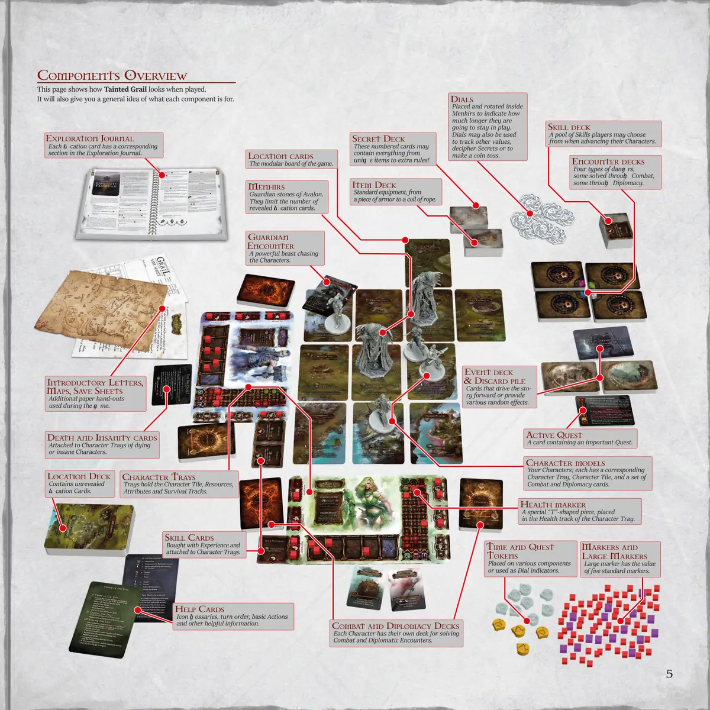
<figcaption>原版规则书 · 第 5 页（点击图片放大）</figcaption>
</figure>

<details class="mt-fold">
<summary>📝 第 5 页 AI 机翻对照（点击展开）</summary>
<div class="mt-body"><h2>组件概览</h2>

<p>本页展示了《Tainted Grail》（被玷污的圣杯）游戏时的样子。</p>

<p>它也会让你对每个组件的用途有一个大致的了解。</p>

<h2>探索日志</h2>

<p>JO</p>

<p>J</p>

<p>E 每个位置卡牌在探索日志中都有对应的</p>

<p>s 部分。</p>

<h2>守护者</h2>

<h2>遭遇</h2>

<p>一个强大的野兽正在追捕</p>

<p>角色。</p>

<h2>轮盘</h2>

<p>放置并旋转在</p>

<p>门内石中，以指示它们</p>

<p>还能在场上停留</p>

<p>多久。</p>

<p>轮盘也可用于</p>

<p>追踪其他数值，</p>

<p>解读秘密或</p>

<p>进行抛硬币。</p>

<h2>技能牌库</h2>

<p>玩家可以在提升其角色时</p>

<p>从中选择的技能池。</p>

<h2>遭遇牌库</h2>

<p>四种类型的危险，</p>

<p>一些通过战斗解决，</p>

<p>一些通过外交解决。</p>

<h2>物品牌库</h2>

<p>标准装备，从</p>

<p>一片盔甲到一卷</p>

<p>绳索。</p>

<h2>位置</h2>

<p>LO</p>

<p>L</p>

<h2>卡牌</h2>

<p>游戏的模块化</p>

<p>版图。</p>

<h2>门内石</h2>

<p>阿瓦隆的守护者</p>

<p>石碑。它们限制了</p>

<p>已揭示位置卡牌的</p>

<p>数量。</p>

<h2>事件牌库</h2>

<h2>与弃牌堆</h2>

<p>推动故事发展或提供</p>

<p>各种随机效果的卡牌。</p>

<h2>激活</h2>

<p>AC</p>

<p>A</p>

<h2>任务</h2>

<p>QU</p>

<p>Q</p>

<p>一张包含重要</p>

<p>任务的卡牌。</p>

<h2>角色</h2>

<p>AC</p>

<p>A</p>

<h2>模型</h2>

<p>你的角色；每个角色都有对应的</p>

<p>角色托盘、角色板块和一套</p>

<p>战斗与外交卡牌。</p>

<h2>生命指示物</h2>

<p>一个特殊的"T"形</p>

<p>指示物，放置在</p>

<p>角色托盘的生命值</p>

<p>轨道上。</p>

<h2>时间与任务</h2>

<p>QU</p>

<p>Q</p>

<p>T</p>

<h2>指示物</h2>

<p>放置在各个组件上</p>

<p>或用作轮盘</p>

<p>指示物。</p>

<h2>指示物与</h2>

<h2>大型指示物</h2>

<p>大型指示物的价值</p>

<p>相当于五个标准指示物。</p>

<h2>技能卡</h2>

<p>通过经验购买并</p>

<p>附加到角色托盘上。</p>

<h2>帮助卡</h2>

<p>图标词汇表、回合顺序、</p>

<p>基础行动和其他</p>

<p>有用信息。</p>

<h2>位置</h2>

<p>LO</p>

<p>L</p>

<h2>牌库</h2>

<p>包含未揭示的</p>

<p>位置卡牌。</p>

<h2>战斗与外交</h2>

<p>AC</p>

<p>A</p>

<h2>牌库</h2>

<p>每个角色都有自己的牌库，用于解决</p>

<p>战斗与外交遭遇。</p>

<h2>角色</h2>

<p>AC</p>

<p>A</p>

<h2>托盘</h2>

<p>托盘放置角色板块、资源、</p>

<p>属性和生存轨道。</p>

<h2>死亡与疯狂卡牌</h2>

<p>附加到死亡角色的</p>

<p>角色托盘上。</p>

<h2>疯狂角色</h2>

<p>介绍信、</p>

<h2>地图、记录表</h2>

<p>游戏期间使用的额外纸质材料。</p>

<h2>秘密牌库</h2>

<p>这些编号的卡牌可能包含从独特物品到额外规则的一切内容！</p></div>
</details>

<figure>
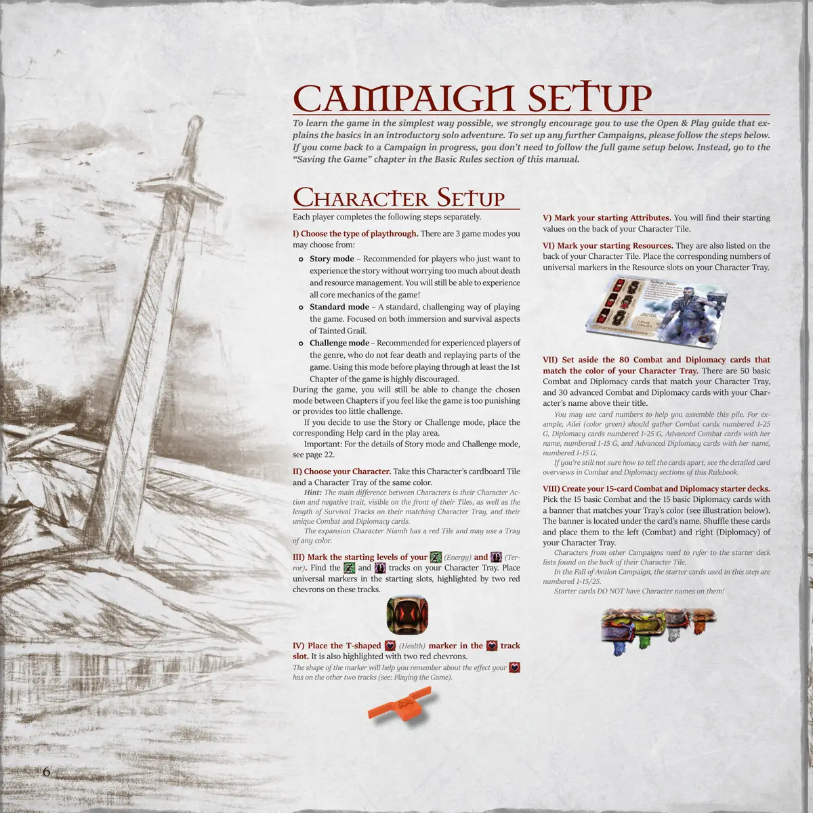
<figcaption>原版规则书 · 第 6 页（点击图片放大）</figcaption>
</figure>

<details class="mt-fold">
<summary>📝 第 6 页 AI 机翻对照（点击展开）</summary>
<div class="mt-body"><h2>角色设置</h2>

<p>每位玩家分别完成以下步骤。</p>

<p>有3种游戏模式可供你选择：</p>

<p>故事模式 - 推荐给只想体验故事而不太担心死亡和资源管理的玩家。你仍然能够体验游戏的所有核心机制。</p>

<p>标准模式 - 游戏的标准、挑战性玩法。专注于《Tainted Grail》的沉浸和生存方面。</p>

<p>挑战模式 - 推荐给该类型的有经验玩家，他们不害怕死亡和重玩游戏的某些部分。在至少通关游戏的第一章之前使用此模式极不鼓励。</p>

<p>在游戏过程中，如果你觉得游戏过于严苛或挑战性不足，你仍然可以在章节之间更改所选模式。</p>

<p>如果你决定使用故事模式或挑战模式，将相应的帮助卡放置在游戏区域。</p>

<p>重要：关于故事模式和挑战模式的详细信息，请见第22页。</p>

<p>拿取这个角色的纸板板块和相同颜色的角色托盘。</p>

<p>提示：角色之间的主要区别在于他们的角色行动和负面特质（可见于板块正面），以及他们对应角色托盘上的生存轨道长度，以及他们独特的战斗和外交卡。</p>

<p>扩展角色Niamh有红色板块，可以使用任何颜色的托盘。</p>

<p>III) 标记你的(能量)和(恐惧)的起始等级。在你的角色托盘上找到这些轨道。在这些轨道上由两个红色箭头标记的起始槽位中放置通用指示物。</p>

<p>IV) 将T形(生命值)指示物放置在轨道"ĽÀÅ"上。该位置也由两个红色箭头标记。指示物的形状将帮助你记住你的能力对其他两条轨道的影响（参见：游戏玩法）。</p>

<p>(你的能力)</p>

<p>ʰ ²Ã¼ ÊÀÆà ÄŲÃź¿¸ AÅÅú³ÆŶÄ。你可以在角色板块的背面找到它们的起始值。</p>

<p>ʰ ²Ã¼ ÊÀÆà ÄŲÃź¿¸ ¶ÄÀÆô¶Ä。它们也列在角色板块的背面。在你的角色托盘的资源槽位中放置相应数量的通用指示物。</p>

<p>ʰ ¶Å ²Äºµ¶ Ź¶ КВ À¾³²Å ²¿µ ºÁ½À¾²´Ê ´²ÃµÄ Ź²Å ¾²Å´¹ Ź¶ ´À½Àà À· ÊÀÆà ¹²Ã²´Å¶Ã TòÊ。有ЗВ张基础战斗和外交卡与你的角色托盘匹配，以及ЕВ张带有你角色名称的高级战斗和外交卡（名称位于卡牌标题上方）。</p>

<p>你可以使用卡牌编号来帮助你整理这叠牌。例如，Ailei（绿色）应该收集编号为1-25 G的战斗卡，编号为1-25 G的外交卡，带有她名称的高级战斗卡（编号为1-15 G），以及带有她名称的高级外交卡（编号为1-15 G）。</p>

<p>如果你仍然不确定如何区分卡牌，请参阅本规则书"战斗与外交"章节中的详细卡牌概述。</p>

<p>挑选带有与你的角色托盘颜色相匹配的横幅的15张基础战斗卡和15张基础外交卡（参见下图）。横幅位于卡牌名称下方。将这些牌洗混，然后放置在你的角色托盘的左侧（战斗）和右侧（外交）。</p>

<p>来自其他战役的角色需要参考其角色板块背面的起始牌库列表。</p>

<p>在"阿瓦隆的陨落"战役中，此步骤使用的起始卡牌编号为1-15/25。</p>

<p>起始卡牌上没有角色名称！</p>

<h2>战役设置</h2>

<p>为了以最简单的方式学习游戏，我们强烈建议你使用"即开即玩"指南，该指南通过一个入门级单人冒险解释了游戏基础。要设置任何其他战役，请遵循以下步骤。</p>

<p>如果你回到一个正在进行的战役，不需要遵循下面的完整游戏设置。相反，请转到本手册"基础规则"章节中的"保存游戏"章节。</p></div>
</details>

<figure>
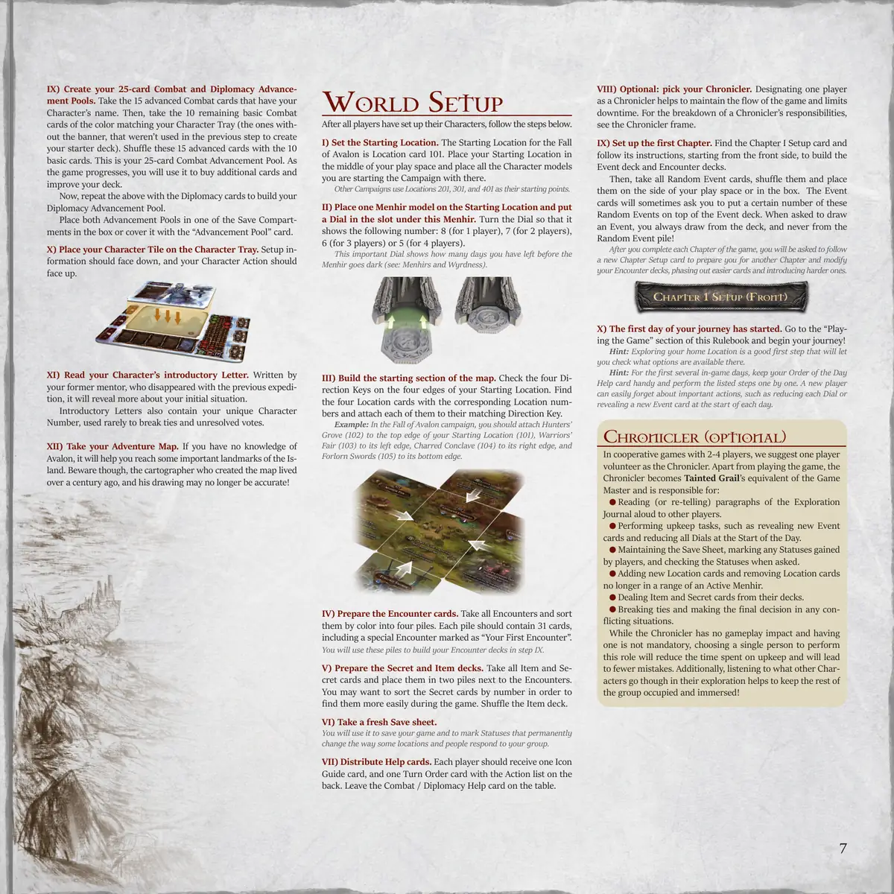
<figcaption>原版规则书 · 第 7 页（点击图片放大）</figcaption>
</figure>

<details class="mt-fold">
<summary>📝 第 7 页 AI 机翻对照（点击展开）</summary>
<div class="mt-body"><p>取3张带有你角色名称的高级战斗牌。然后，取7张与你的角色托盘颜色匹配的剩余基础战斗牌（那些没有旗帜、在上一步中没有用来构筑起始牌库的牌）。将这3张高级牌与7张基础牌洗在一起。这就是你的10张牌战斗进阶牌组。随着游戏的进行，你将使用它来购买额外的牌并增强你的牌库。</p>

<p>现在，重复上述步骤来构筑你的外交进阶牌组。</p>

<p>将两个进阶牌组放入盒子中的一个保存隔间中，或者用"进阶牌组"卡牌盖住它们。</p>

<p>放置角色信息牌，设置信息面朝下，你的角色行动面朝上。</p>

<p>由你以前的导师撰写（他随之前的探险队失踪了），这封信将揭示更多关于你初始情况的信息。介绍信还包含你独特的角色编号，很少用于打破平票和未解决的投票。</p>

<p>如果你对亚瑟王传奇一无所知，这张地图将帮助你到达岛上的一些重要地标。但要小心，绘制这张地图的制图学家生活在100多年前，他的绘图可能不再准确了。</p>

<h2>世界设置</h2>

<p>所有玩家设置好他们的角色后，按照以下步骤进行。</p>

<p>I) 放置起始位置。亚瑟王传奇的起始位置是位置卡101。将你的起始位置放置在你的游戏空间中央，并将你开始战役时使用的所有角色模型放在那里。</p>

<p>其他战役使用位置201、301和401作为起点。</p>

<p>II) 在起始位置放置一个巨石模型，并将命运轮放在巨石模型旁边。转动命运轮，使其显示以下数字：К（1名玩家时）、Й（2名玩家时）、И（3名玩家时）或З（4名玩家时）。</p>

<p>这个重要的命运轮显示在巨石变暗之前你还剩下多少天（参见：巨石与命运）。</p>

<p>III) 放置起始位置周围的四个位置卡。检查你起始位置四条边缘上的四个方向键。找到四个具有相应位置编号的位置卡，并将每个卡牌附着到对应的方向键上。</p>

<p>示例：在亚瑟王传奇陨落战役中，你应该将猎人林荫（102）附着到起始位置（101）的顶部边缘，战士集市（103）附着到其左侧边缘，焦黑议会（104）附着到其右侧边缘，孤寂之剑（105）附着到底部边缘。</p>

<p>IV) 取出所有遭遇牌并按颜色分成四堆。每堆应包含18张牌，</p>

<p>including a special Encounter marked as "our First Encounter".</p>

<p>You will use these piles to build your Encounter decks in step IX.</p>

<p>"Take all Item and Secret cards and place them in two piles next to the Encounters.</p>

<p>You may want to sort the Secret cards by number in order to</p>

<p>find them more easily during the game. Shuffle the Item deck.</p>

<p>"Take the Save Sheet. You will use it to save your game and to mark Statuses that permanently</p>

<p>change the way some locations and people respond to your group.</p>

<p>""Each player should receive one Icon</p>

<p>Guide card, and one Turn Order card with the Action list on the</p>

<p>back. Leave the Combat &amp; Diplomacy Help card on the table.</p>

<p>"""Designating one player</p>

<p>as a Chronicler helps to maintain the flow of the game and limits</p>

<p>downtime. For the breakdown of a Chronicler's responsibilities,</p>

<p>see the Chronicler frame.</p>

<p>"Find the Chapter Setup card and</p>

<p>follow its instructions, starting from the front side, to build the</p>

<p>Event deck and Encounter decks.</p>

<p>Then, take all Random Event cards, shuffle them and place</p>

<p>them on the side of your play space or in the box. The Event</p>

<p>cards will sometimes ask you to put a certain number of these</p>

<p>Random Events on top of the Event deck. When asked to draw</p>

<p>an Event, you always draw from the deck, and never from the Random Event pile.</p>

<p>After you complete each Chapter of the game, you will be asked to follow</p>

<p>a new Chapter Setup card to prepare you for another Chapter and modify</p>

<p>your Encounter decks, phasing out easier cards and introducing harder ones.</p>

<p>"Go to the "Playing the</p>

<p>Game" section of this Rulebook and begin your journey.</p>

<p>Hint: Exploring your home Location is a good first step that will let</p>

<p>you check what options are available there.</p>

<p>Hint: For the first several in-game days, keep your Order of the Day</p>

<p>Help card handy and perform the listed steps one by one. A new player</p>

<p>can easily forget about important actions, such as reducing each Dial or</p>

<p>revealing a new Event card at the start of each day.</p>

<h2>CHRONICLER (OPTIONAL)</h2>

<p>In cooperative games with 3-5 players, we suggest one player</p>

<p>volunteer as the Chronicler. Apart from playing the game, the</p>

<p>Chronicler becomes Tainted Grail's equivalent of the</p>

<p>Game Master and is responsible for:</p>

<p>Reading (or re-telling) paragraphs of the Exploration</p>

<p>Journal aloud to other players.</p>

<p>Performing upkeep tasks, such as revealing new Event</p>

<p>cards and reducing all Dials at the Start of the Day.</p>

<p>Maintaining the Save Sheet, marking any Statuses gained</p>

<p>by players, and checking the Statuses when asked.</p>

<p>Adding new Location cards and removing Location cards</p>

<p>no longer in a range of an Active Menhir.</p>

<p>从他们的牌库中处理事件和秘密卡牌。</p>

<p>在任何冲突的情况下打破平局并做出最终决定。</p>

<p>虽然编年史作者没有游戏玩法影响，并且拥有这个角色不是强制性的，但选择一个人来担任这个角色将减少在维护上花费的时间，并减少错误。此外，倾听其他角色在探索过程中经历的事情，有助于保持团队其他成员的参与感和沉浸感。</p></div>
</details>

<figure>
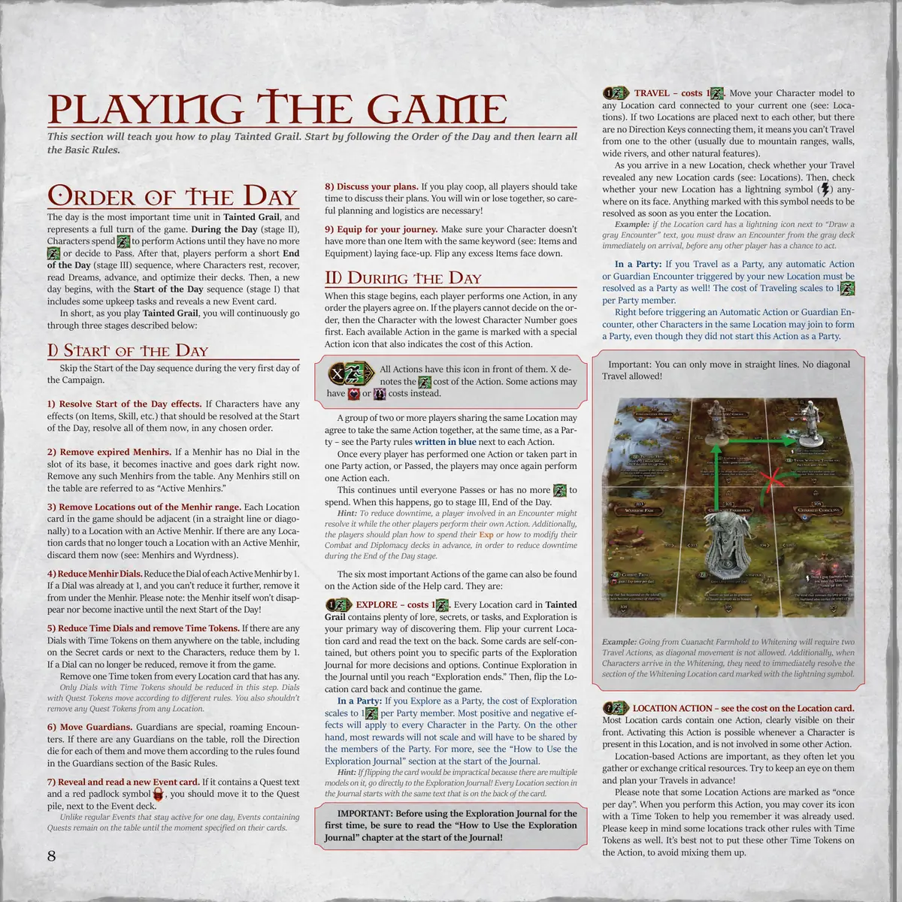
<figcaption>原版规则书 · 第 8 页（点击图片放大）</figcaption>
</figure>

<details class="mt-fold">
<summary>📝 第 8 页 AI 机翻对照（点击展开）</summary>
<div class="mt-body"><h2>游戏进行</h2>

<p>本节将教你如何玩《受诅圣杯》。首先遵循"每日流程"，然后学习所有基本规则。</p>

<h2>每日流程</h2>

<p>白天是《受诅圣杯》中最重要的时间单位，代表游戏的一个完整回合。在白天（阶段1），角色花费精力来执行行动，直到他们没有更多精力或决定跳过。之后，玩家执行简短的"日终"（阶段3）序列，角色在此休息、恢复、阅读梦境、升级并优化他们的牌库。然后，新的一天开始，包含"日始"（阶段1）序列，该序列包括一些维护任务并揭示一张新事件卡。</p>

<p>简而言之，当你玩《受诅圣杯》时，你会 continuously go through 三个阶段，如下所述：</p>

<h2>I) 日始</h2>

<p>在战役的第一天，跳过"日始"序列。</p>

<p>A. 解决所有应在"日始"时解决的效果（在物品、技能等上）。如果角色有任何应在"日始"时解决的效果（在物品、技能等上），以任意选择的顺序解决所有这些效果。</p>

<p>B. 检查梅赫石。如果梅赫石底座槽位中没有轮盘，它立即变为非活跃状态并熄灭。从桌面上移除所有这样的梅赫石。桌面上仍有的梅赫石被称为"活跃梅赫石"。</p>

<p>C. 检查位置卡。游戏中的每张位置卡应与有活跃梅赫石的位置相邻（直线或对角线）。如果有任何位置卡不再与有活跃梅赫石的位置接触，立即将其弃置（参见：梅赫石与疯狂）。</p>

<p>D. 减少活跃梅赫石的轮盘值。将每个活跃梅赫石的轮盘值减少1。如果轮盘值已经是1，且无法再减少，将其从梅赫石下移除。请注意：梅赫石本身不会消失或变为非活跃状态，直到下一个"日始"。</p>

<p>E. 减少带有时令标记的轮盘。如果桌面上任何地方有带有时令标记的轮盘，包括在秘密卡上或角色旁边，将其减少1。如果轮盘无法再减少，将其从游戏中移除。从每张有时令标记的位置卡上移除一个时令标记。只有带有时令标记的轮盘应在此步骤中减少。带有的任务标记的轮盘根据不同规则移动。你也不应从任何位置移除任何任务标记。</p>

<p>F. 守卫行动。守卫是特殊的漫游遭遇。如果桌面上有任何守卫，为每个守卫掷方向骰，并根据基本规则中"守卫"部分的规则移动它们。</p>

<p>G. 揭示事件卡。从事件牌库顶翻开一张事件卡。如果它包含任务文本和红色挂锁符号，你应该将其移至任务牌堆，放在事件牌库旁边。</p>

<p>与持续一天的事件不同，包含</p>

<p>任务会留在桌面上，直到其卡牌上指定的那一刻。</p>

<p>如果你进行合作游戏，所有玩家应该花时间讨论他们的计划。你们将一起赢或一起输，因此仔细的计划和后勤是必要的。</p>

<p>确保你的角色没有放置超过一张带有相同关键词（见"物品和装备"）的物品面朝上。将多余的物品翻面朝下。</p>

<h2>II) 白天阶段</h2>

<p>当这个阶段开始时，每位玩家执行一个行动，按玩家商定的任意顺序。如果玩家无法决定顺序，则角色编号最低的角色先行动。游戏中每个可用行动都标记有一个特殊的行动图标，该图标也表明了该行动的费用。</p>

<p>所有行动前面都有这个图标。ʃ 表示该行动的费用。有些行动可能有 ʃ 或 ʃ 费用。</p>

<p>两个或更多共享同一地点的玩家可以同意同时执行相同的行动，作为一个团队（见每个行动旁边用蓝色书写的团队规则）。</p>

<p>一旦每位玩家都执行了一个行动或参与了一个团队行动，或者跳过了，玩家们可以再次每人执行一个行动。</p>

<p>这会持续进行，直到所有人都跳过或没有更多的 ʃ 可花费。当这种情况发生时，进入阶段 III，日终。</p>

<p>提示：为了减少等待时间，参与遭遇的玩家可以在其他玩家执行自己的行动时解决遭遇。此外，玩家应提前计划如何花费他们的经验值或如何修改他们的战斗和外交牌组，以减少在日终阶段的等待时间。</p>

<p>游戏中最重要的六个行动也可以在帮助牌的行动面找到。它们是：</p>

<p>ʃ 探索 ʃ。受污染圣杯中的每个地点卡牌都包含丰富的传说、秘密或任务，而探索是你发现它们的主要方式。翻开你当前的地点卡牌并阅读背面的文字。有些卡牌是自包含的，但其他的会指引你到探索日志的特定部分，以获得更多的决策和选项。继续在日志中探索，直到你到达"探索结束"。然后，将地点卡牌翻回并继续游戏。</p>

<p>在团队中：如果你作为一个团队进行探索，探索费用会按每个团队成员 ʃ 计算。大多数正面和负面效果将应用于团队中的每个角色。另一方面，大多数奖励不会按比例增加，必须由团队成员分享。更多信息，请参阅日志开头的"如何使用探索日志"部分。</p>

<p>提示：如果因为卡牌上有多个模型模型而翻牌不切实际，请直接前往探索日志！每个地点部分在</p>

<h2>日记以与卡牌背面相同的文本开始。</h2>

<p>重要：在使用《探索日记》进行</p>

<p>ȱÃÄŠź¾¶, ³¶ ÄÆö ÅÀ ö²µ Ź¶ ʖÀÈ ÅÀ Ķ Ź¶ ÉÁ½ÀòźÀ¿</p>

<p>"日记"章节之前，请务必阅读日记开头的"日记"章节！</p>

<p>TA ʦ ´ÀÄÅÄ Г</p>

<p>. 将你的角色模型移动到</p>

<p>与你当前位置相连的任何位置卡牌（参见ʃ 位置）。如果两个位置卡牌彼此相邻，但没有</p>

<p>方向键连接它们，这意味着你不能从一个位置旅行到另一个位置（通常是由于山脉、墙壁、宽阔的河流和其他自然特征）。</p>

<p>当你到达一个新位置时，检查你的旅行是否揭示了任何新的位置卡牌（参见ʃ 位置）。然后，检查你的新位置是否在其正面任何地方有闪电符号（</p>

<p>）。任何标有此符号的内容都需要在你进入位置时立即解决。</p>

<p>示例：如果位置卡牌在"摸一张灰色遭遇"文本旁边有闪电图标，你必须在到达时立即从灰色牌库摸一张遭遇牌，在任何其他玩家有机会行动之前。</p>

<p>在一个队伍中：如果你作为一个队伍旅行，由你的新位置触发的任何自动行动</p>

<p>或守护者遭遇也必须作为一个队伍解决ʋ 旅行的费用按每个队伍成员计算。</p>

<p>在触发自动行动或守护者遭遇之前，同一位置的其他角色可以加入形成队伍，即使他们没有以队伍形式开始此行动。</p>

<p>重要ʃ 你只能直线移动。不允许对角线旅行ʋ</p>

<p>示例：从Cuanacht Farmhold到Whitening需要两次旅行行动，因为不允许对角线移动。此外，当角色到达Whitening时，他们需要立即解决Whitening位置卡牌上标有闪电符号的部分。</p>

<p>?</p>

<p>OATO ATO ʦ Ķ¶ Ź¶ ´ÀÄÅ À¿ Ź¶ À´²ÅºÀ¿ ´²Ãµ.</p>

<p>大多数位置卡牌包含一个行动，在其正面清晰可见。只要角色在此位置，并且没有参与其他行动，就可以激活此行动。基于位置的行动很重要，因为它们通常让你收集或交换关键资源。试着留意它们并提前计划你的旅行ʋ</p>

<p>请注意，一些位置行动被标记为ʖ每天一次ʗ。当你执行此行动时，你可以用一个时间指示物覆盖其图标，以帮助你记住它已经被使用。</p>

<p>请记住，一些位置也使用时间指示物来跟踪其他规则。最好不要将这些其他时间指示物放在行动上，以免混淆它们。</p></div>
</details>

<figure>
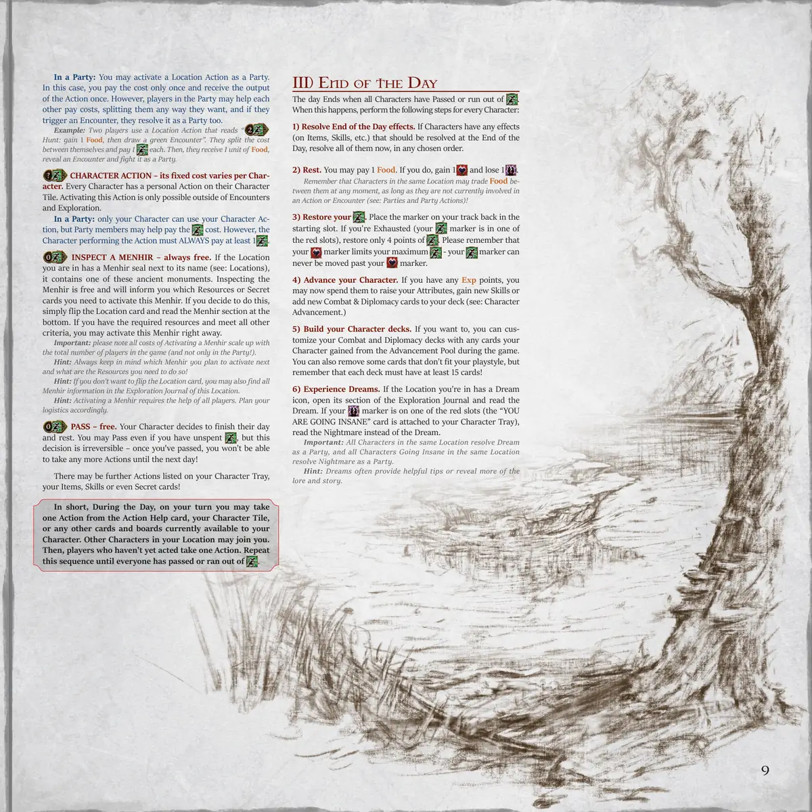
<figcaption>原版规则书 · 第 9 页（点击图片放大）</figcaption>
</figure>

<details class="mt-fold">
<summary>📝 第 9 页 AI 机翻对照（点击展开）</summary>
<div class="mt-body"><p>在多人游戏中：你可以作为一个小队激活地点行动。</p>

<p>在这种情况下，你只需支付一次费用，并获得行动的一次产出。然而，小队中的玩家可以互相帮助支付费用，以任何方式分摊，如果他们触发遭遇，他们也作为一个小队来解决它。</p>

<p>示例：两名玩家使用一个地点行动，上面写着"2狩猎：获得1食物，然后摸一张绿色遭遇卡"。他们分摊费用，每人支付1。然后，他们获得1单位食物，揭示一张遭遇卡并作为一个小队与其战斗。</p>

<p>每个角色在其角色板块上都有一个个人行动。激活此行动只能在遭遇和探索之外进行。</p>

<p>在多人游戏中：只有你的角色可以使用你的角色行动，但小队成员可以帮助支付费用。然而，执行行动的角色必须总是至少支付1。</p>

<p>地点：如果你所在的地点名称旁边有巨石封印（参见地点），它包含这些古代纪念碑之一之一。检查巨石是免费的，它会告知你需要哪些资源或秘密卡牌来激活此巨石。如果你决定这样做，只需翻转地点卡并阅读底部的巨石部分。如果你拥有所需的资源并满足所有其他条件，你可以立即激活此巨石。</p>

<p>重要：请注意，激活巨石的所有费用会随着游戏中的玩家总数而增加（而不仅仅是在小队中！）。</p>

<p>提示：始终记住你计划激活下一个巨石以及为此所需的资源！</p>

<p>提示：如果你不想翻转地点卡，你也可以在地点的探索日志中找到所有巨石信息。</p>

<p>提示：激活巨石需要所有玩家的帮助。相应地规划你的后勤。</p>

<p>结束回合：你的角色决定结束他们的一天并休息。即使你有未使用的行动点，你也可以选择结束回合，但这个决定是不可逆的——一旦你结束回合，在第二天之前你将无法再执行任何行动。</p>

<p>在你的角色托盘、物品、技能甚至秘密卡牌上可能列有更多行动。</p>

<p>所有行动都列在你的角色托盘上，你的物品、技能或任何其他当前可用的卡牌和版图上。你的角色可能拥有额外的行动，这些行动可能来自你的角色托盘、你的物品、你的技能、你的秘密卡牌，或任何其他当前可用的卡牌和版图。你的角色可能拥有额外的行动，这些行动可能来自你的角色托盘、你的物品、你的技能、你的秘密卡牌，或任何其他当前可用的卡牌和版图。</p>

<h2>III) 一天的结束</h2>

<p>当所有角色都已结束回合或用完行动点时，一天结束。</p>

<p>当这种情况发生时，为每个角色执行以下步骤：</p>

<ol>
  <li>收集所有资源。如果角色有任何效果</li>
</ol>

<p>(on tems, Skills, etc.) that should be resolved at the End of the</p>

<p>ay, resolve all of them now, in any chosen order.</p>

<p>Дʰ ¶ÄÅ. ou may pay Г Food. f you do, gain Г</p>

<p>and lose Г</p>

<p>.</p>

<p>Remember that Characters in the same Location may trade Food be-</p>

<p>tween them at any moment, as long as they are not currently involved in</p>

<p>an Action or Encounter (see: Parties and Party Actions)!</p>

<p>Еʰ ¶ÄÅÀö ÊÀÆÃ</p>

<p>. lace the marker on your track back in the</p>

<p>starting slot. f youʓre Exhausted (your</p>

<p>marker is in one of</p>

<p>the red slots), restore only Ж points of</p>

<p>. lease remember that</p>

<p>your</p>

<p>marker limits your maximum</p>

<ul>
  <li>your</li>
</ul>

<p>marker can</p>

<p>never be moved past your</p>

<p>marker.</p>

<p>Жʰ AµÇ²¿´¶ ÊÀÆà ¹²Ã²´Å¶Ã. f you have any Exp points, you</p>

<p>may now spend them to raise your Attributes, gain new Skills or</p>

<p>add new Combat ȹ iplomacy cards to your deck (seeʃ Character</p>

<p>Advancement.)</p>

<p>Зʰ Bƺ½µ ÊÀÆà ¹²Ã²´Å¶Ã µ¶´¼Ä. f you want to, you can cus-</p>

<p>tomiËe your Combat and iplomacy decks with any cards your</p>

<p>Character gained from the Advancement ool during the game.</p>

<p>ou can also remove some cards that donʓt fit your playstyle, but</p>

<p>remember that each deck must have at least ГЗ cardsʋ</p>

<p>Иʰ ÉÁ¶Ãº¶¿´¶ ö²¾Ä. f the Location youʓre in has a ream</p>

<p>icon, open its section of the Exploration</p>

<p>ournal and read the</p>

<p>ream. f your</p>

<p>marker is on one of the red slots (the ʖ</p>

<h2>ARE</h2>

<p>N</p>

<p>NSANEʗ card is attached to your Character Tray),</p>

<p>read the Nightmare instead of the ream.</p>

<p>Important: All Characters in the same Location resolve Dream</p>

<p>as a Party, and all Characters Going Insane in the same Location</p>

<p>resolve Nightmare as a Party.</p>

<p>Hint: Dreams often provide helpful tips or reveal more of the</p>

<p>lore and story.</p></div>
</details>

<figure>
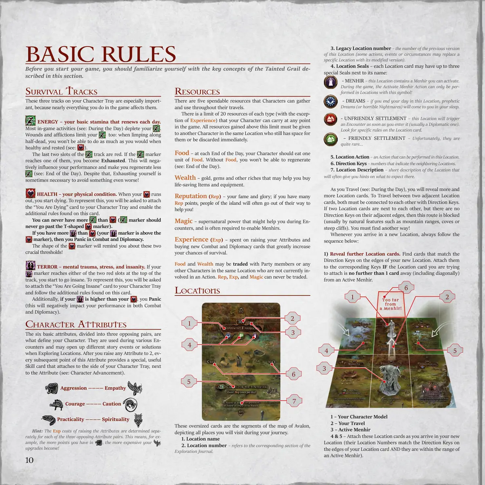
<figcaption>原版规则书 · 第 10 页（点击图片放大）</figcaption>
</figure>

<details class="mt-fold">
<summary>📝 第 10 页 AI 机翻对照（点击展开）</summary>
<div class="mt-body"><h2>生存轨迹</h2>

<p>你角色托盘上的这三条轨迹特别重要，因为你在游戏中做的几乎所有事情都会影响它们。</p>

<p>能量 ʦ ÊÀÆà ³²Äº´ ÄŲ¾º¿² Ź²Å ö¿¶ÈÄ ¶²´¹ µ²Ê.</p>

<p>游戏内的大多数活动（见ʃ uring the ay）会消耗你的</p>

<p>.</p>

<p>伤口和疾病会限制你的</p>

<p>行动能力ʋ当你半死不活地跛行时，你无法像健康休息时那样做很多事情（见ʃ</p>

<p>）。</p>

<p>轨迹的最后两个槽位是红色的。如果</p>

<p>标记到达其中一个，你就会变得疲惫。这会负面影响你的表现并使你恢复更少（见ʃ End of the ay）。尽管如此，有时疲惫自己是必要的，以避免更糟糕的情况ʋ</p>

<p>健康 ʦ ÊÀÆà Á¹Êĺ´²½ ´À¿µºÅºÀ¿. hen your</p>

<p>runs</p>

<p>out, you start dying. To represent this, you will be asked to attach</p>

<p>the ʖou Are yingʗ card to your Character Tray and enable the</p>

<p>additional rules found on this card.</p>

<p>你的</p>

<p>用完后，你开始死亡。为了表示这一点，你将被要求将"ʖou Are yingʗ"卡牌附加到你的角色托盘上，并启用此卡牌上找到的额外规则。</p>

<p>你永远不能拥有超过</p>

<p>（你的</p>

<p>标记不应超过T形的</p>

<p>¾²Ã¼¶Ãʰ。</p>

<p>如果你拥有超过</p>

<p>（你的</p>

<p>标记在</p>

<p>¾²Ã¼¶Ãʰ之上，Ź¶¿ ÊÀÆ P²¿º´ º¿ À¾³²Å ²¿µ ºÁ½À¾²´Ê。</p>

<p>标记的形状会提醒你这两个关键阈值ʋ</p>

<p>恐怖 ʦ ¾¶¿Å²½ Åòƾ², ÄÅöÄÄ, ²¿µ º¿Ä²¿ºÅÊ. f your</p>

<p>marker reaches either of the two red slots at the top of the</p>

<p>track, you start to go insane. To represent this, you will be asked</p>

<p>to attach the ʖou Are</p>

<p>oing nsaneʗ card to your Character Tray</p>

<p>and follow the additional rules found on this card.</p>

<p>此外，如果你的</p>

<p>高于你的</p>

<p>，你会恐慌（这会负面影响你在战斗和外交中的表现）。</p>

<h2>角色属性</h2>

<p>这六项基本属性，分为三组对立属性，定义了你的角色。它们在各种遭遇中使用，并在探索地点时可能开启不同的故事事件或解决方案。当你将任何属性提升到Д后，该属性的每个后续点都会提供一张特殊的、有用的技能卡，该卡附加在你的角色托盘侧面，位于属性旁边（见ʃ Character Advancement）。</p>

<p>攻击性 ———— 共情</p>

<p>勇气 ———— 谨慎</p>

<p>实用性 ———— 精神性</p>

<p>提示：提升属性的费用是针对每组对立属性单独确定的。这意味着，例如，你在</p>

<p>上的点数越多，你的升级就越昂贵！</p>

<h2>资源</h2>

<p>有五种可消耗的资源，角色可以在旅行中收集和使用。</p>

<p>每种资源（经验值除外）的携带上限为ДВ。在游戏中的任何时候，你的角色携带的每种资源都不能超过这个限制。所有超出此限制获得的资源必须给予同一地点中仍有空间存放它们的另一名角色，或者立即弃置。</p>

<h2>属性</h2>

<p>食物 - 每天结束时，你的角色必须吃掉一个单位的食物。没有食物，你将无法恢复（参见"每天结束时"）。</p>

<p>财富 - 黄金、宝石和其他可能帮助你购买救命物品和装备的财富。</p>

<p>声望(Rep) - 你的名望和荣耀；如果你有很多声望点，岛上的人们常常会不遗余力地帮助你。</p>

<p>魔法 - 可能在遭遇战期间帮助你的超自然力量，并且通常是启用立石所必需的。</p>

<p>经验(Exp) - 用于提升你的属性和购买新的战斗和外交卡牌，这些卡牌能大大增加你的生存机会。</p>

<p>食物和财富可以与队友或同一位置中当前未参与行动的任何其他角色交易。声望、经验和魔法永远不能交易。</p>

<h2>位置</h2>

<p>这些大幅卡牌是阿瓦隆地图的片段，描绘了你在旅途中将访问的所有地方。</p>

<p>Г. 位置编号 - 每个位置卡牌都有一个唯一的编号。</p>

<p>Д. 位置名称 - 参见探索日志的相应部分。</p>

<p>Е. 位置版本号 - 此位置的先前版本号（某些行动、事件或情况可能会用其修改版本替换特定位置）。</p>

<p>Ж. 位置印章 - 每个位置卡牌在其名称旁边最多可以有三个特殊印章：</p>

<ul>
  <li>立石 - 此位置包含你可以激活的立石。游戏中，激活立石行动只能在带有此符号的位置执行！</li>
  <li>梦境 - 如果你在此位置结束一天，预言的梦境（或可怕的噩梦）会在你睡觉时出现。</li>
  <li>德鲁伊定居点 - 你一进入此位置就会触发遭遇战（通常是外交遭遇）。查看位置卡上的具体规则。</li>
  <li>德鲁伊定居点 - 不幸的是，它们相当罕见...</li>
</ul>

<p>З. 行动 - 可以在此位置执行的行动。</p>

<p>И. 相邻位置编号 - 表示相邻位置的数字。</p>

<p>Й. 位置描述 - 对位置的简短描述，通常会给你提示，告诉你在那里可以期待什么。</p>

<p>当你旅行（参见"在白天期间"）时，你会逐渐揭开更多的位置卡牌。要在两个相邻的位置卡牌之间旅行，它们必须通过方向键相互连接。如果两个位置卡牌彼此相邻，但它们相邻的边缘没有方向键，那么这条路线就被阻断了（通常是由山脉、小海湾或陡峭悬崖等自然特征）。你必须找到另一条路...</p>

<p>每当到达一个新位置时，始终遵循以下顺序：</p>

<p>Г. 检查新位置边缘的方向键。找到与这些方向键匹配的卡牌。如果你尝试</p></div>
</details>

<figure>
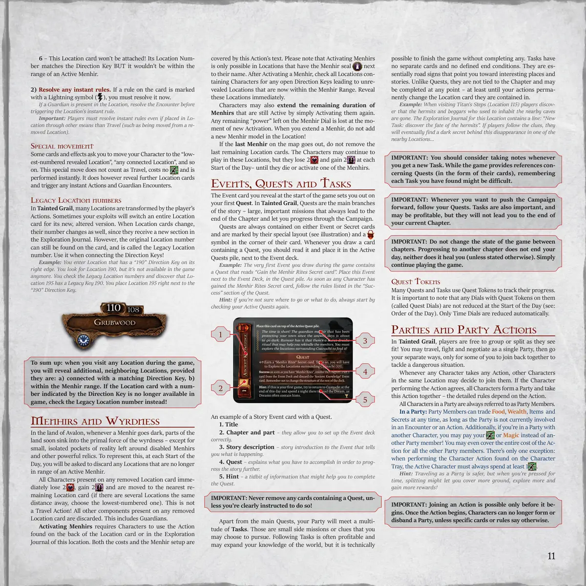
<figcaption>原版规则书 · 第 11 页（点击图片放大）</figcaption>
</figure>

<details class="mt-fold">
<summary>📝 第 11 页 AI 机翻对照（点击展开）</summary>
<div class="mt-body"><h2>特殊移动</h2>

<p>一些卡牌和效果要求你将你的角色移动到"编号最低的已揭示地点卡"、"任意相连的地点卡"等等。这种特殊移动不计为旅行，不消耗任何资源，并且立即执行。然而，它会揭示更多的地点卡，并触发任何即时行动和守护者遭遇。</p>

<h2>遗留地点编号</h2>

<p>在《受诅圣杯》(Tainted Grail)中，许多地点会被玩家的行动所改变。有时你的壮举会将整个地点卡替换为其新的、修改后的版本。当地点卡改变时，它们的编号也会改变，因为它们在探索日志(Exploration Journal)中获得了新的章节。然而，原始的地点编号仍然可以在卡牌上找到，被称为遗留地点编号(Legacy Location number)。在连接方向键(Direction Keys)时使用它。</p>

<p>示例：你进入一个在其右侧边缘有"190"方向键的地点。你寻找地点190，但它已不再游戏中可用。你检查遗留地点编号，发现地点195有一个遗留编号190。你将地点195放置在"190"方向键旁边。</p>

<h2>巨石与怪异之力(Avalon)</h2>

<p>在阿瓦隆(Avalon)的土地上，每当一块巨石(Menhir)变暗，土地的一部分很快就会沉入怪异之力(wyrdness)的原始力量中——除了在失效的巨石和其他强大遗物周围留下的小而孤立的现实口袋。为了表示这一点，在每一天(Start of the Day)开始时，你将被要求弃置任何不再处于活跃巨石范围内的地点卡。</p>

<p>任何被移除的地点卡上的所有角色立即失去1点生命值，获得1点腐化值，并被移动到最近的剩余地点卡上（如果有多个地点距离相同，选择编号最低的那个）。这不是一个旅行行动！任何被移除的地点卡上的所有其他组件都会被弃置。这包括守护者(Guardians)。</p>

<p>激活巨石需要角色使用行动。</p>

<p>found on the back of the Location card or in the Exploration</p>

<p>Journal of this location. Both the costs and the Menhir setup are</p>

<p>covered by this Action's text. Please note that Activating Menhirs</p>

<p>is only possible in Locations that have the Menhir seal</p>

<p>next</p>

<p>to their name. After Activating a Menhir, check all Locations con-</p>

<p>taining Characters for any open Direction Keys leading to unre-</p>

<p>vealed Locations that are now within the Menhir Range. Reveal</p>

<p>these Locations immediately.</p>

<p>Characters may also extend the remaining duration of</p>

<p>Menhirs that are still Active by simply Activating them again.</p>

<p>Any remaining "power" left on the Menhir Dial is lost at the mo-</p>

<p>ment of new Activation. When you extend a Menhir, do not add</p>

<p>a new Menhir model in the Location. If the last Menhir on the map goes out, do not remove the</p>

<p>last remaining Location cards. The Characters may continue to</p>

<p>play in these Locations, but they lose X</p>

<p>and gain X</p>

<p>at each</p>

<p>Start of the Day until they die or activate one of the Menhirs.</p>

<h2>EVENTS, QUESTS AND TASKS</h2>

<p>The Event card you reveal at the start of the game sets you out on</p>

<p>your first Quest. In Tainted Grail, Quests are the main branches</p>

<p>of the story - large, important missions that always lead to the</p>

<p>end of the Chapter and let you progress through the Campaign.</p>

<p>Quests are always contained on either Event or Secret cards</p>

<p>and are marked by their special layout (see illustration) and a</p>

<p>symbol in the corner of their card. Whenever you draw a card</p>

<p>containing a Quest, you should read it and place it in the Active</p>

<p>Quests pile, next to the Event deck.</p>

<p>Example: The very first Event you draw during the game contains</p>

<p>a Quest that reads "Gain the Menhir Rites Secret card". Place this Event</p>

<p>next to the Event Deck, in the Quest pile. As soon as any Character has</p>

<p>gained the Menhir Rites Secret card, follow the rules listed in the "Suc-</p>

<p>cess" section of the Quest.</p>

<p>Hint: if you're not sure where to go or what to do, always start by</p>

<p>checking your Active Quests again.</p>

<h2>ANCIENT KNOWLEDGE</h2>

<p>Place this card on top of the Active Quest pile.</p>

<p>The time is short! The guardian menhir that has been</p>

<p>protecting your town since the ancient days is about</p>

<p>to go dark. Rumour has it that there's a secret druidic</p>

<p>ritual that may help you rekindle the menhirs. You must</p>

<p>explore the locations surrounding Cuanacht to find it!</p>

<h2>QUEST</h2>

<p>• Earn a "Menhir Rites" Secret card. To do so, you will have</p>

<p>to Explore the Locations surrounding Cuanacht (101).</p>

<p>Success: as soon as you have "Menhir Rites", resolve the Chapter 1 Part 5</p>

<p>card from the Event Deck and discard the "Ancient Knowledge" Event</p>

<p>card. Remember not to change the structure of the rest of the deck.</p>

<p>Hint: if this is your first game, try to return to Cuanacht at the</p>

<p>end of this day and spend a night there to read the Dream, as</p>

<p>梦境往往包含线索。</p>

<p>一个带有任务的剧情事件卡示例。</p>

<p>Д. 任务标记 – 它们让你能够正确设置事件牌库。</p>

<p>Е. 故事介绍 – 对事件的介绍，告诉你正在发生什么。</p>

<p>Ж. 任务描述 – 解释你必须完成什么才能推进故事。</p>

<p>З. 线索 – 一条可能帮助你完成任务的信息。</p>

<p>除非你有明确指示，否则不要在任务描述中添加任何内容！</p>

<p>除了主要任务，你的队伍会遇到许多任务。这些是小型的支线任务或线索，你可以选择去追寻。完成任务往往是有益的，并且可以扩展你对世界的了解，但从技术上讲，不完成任何任务也能结束游戏。任务没有独立的卡牌，也没有明确的结束条件。它们本质上是指向有趣地点和故事的路标。与任务不同，它们不与章节绑定，可以在任何时候完成——至少在它们所在的位置牌被你的行动永久改变之前。</p>

<p>示例：当访问泰坦阶梯（位置115）时，玩家发现曾经居住在附近洞穴的隐士和乞丐都不见了。该位置的探索日志中有一行："新任务：发现隐士的命运"。如果玩家跟随线索，他们最终会在附近的一个位置中发现这一消失背后的黑暗秘密...</p>

<p>重要：你应该考虑在每次任务开始时做笔记。任务可能会持续多轮，并且可能会在多个位置之间移动，直到你完成它。如果你不记录，可能会忘记任务细节。</p>

<p>重要：当你想要推进战役进程时，请完成任务。任务通常很简单，并且会奖励你重要的资源，让你能够继续前进。</p>

<p>重要：不要在任务之间改变游戏状态。如果你在任务开始前移动了位置，或者完成了任务但还没有记录，那么当你返回时，游戏状态可能会不同。请确保在任务之间保持游戏状态一致。</p>

<h2>任务指示物</h2>

<p>许多任务和任务使用任务指示物来追踪进度。需要注意的是，任何带有任务指示物的失败标记（称为任务失败标记）不会在每日开始时减少（见"每日顺序"）。只有时间失败标记会自动减少。</p>

<h2>队伍和队伍行动</h2>

<p>在《受诅圣杯》中，玩家可以自由地分组或分开行动。你可以作为一个单一的队伍旅行、战斗和谈判，然后各奔东西，直到其中一些人重新聚在一起处理危险情况。</p>

<p>当任何角色采取任何行动时，同一位置的其他角色可以决定加入他们。如果</p>

<p>执行行动时达成一致，所有角色组成一个队伍并一起执行此行动，详细规则取决于该行动。</p>

<p>队伍中的所有角色始终被称为队伍成员。</p>

<p>在队伍中：只要队伍当前未参与遭遇或行动，队伍成员可以随时交易食物、财富、物品和秘密。此外，如果你与其他角色组成队伍，你可以支付自己的食物或魔法代替其他队伍成员的费用。你甚至可以为所有其他队伍成员支付行动的全部费用。只有一个例外：当执行角色托盘上的角色行动时，当前角色必须至少花费1点食物。</p>

<p>提示：作为队伍旅行更安全，但当时间紧迫时，分开行动可能让你覆盖更多区域，探索更多并获得更多奖励！</p>

<p>重要：只有在行动开始前才能加入行动。KN</p>

<p>K</p>

<p>Г</p>

<p>阅读梦境，为此，你需要拥有Cuanacht（101）。</p>

<p>l</p>

<p>th Ch</p>

<p>t</p>

<p>1P t5</p>

<p>Ж</p>

<p>被遗弃数天的enhir上，</p>

<p>有一个秘密的德鲁伊</p>

<p>Е</p></div>
</details>

<figure>
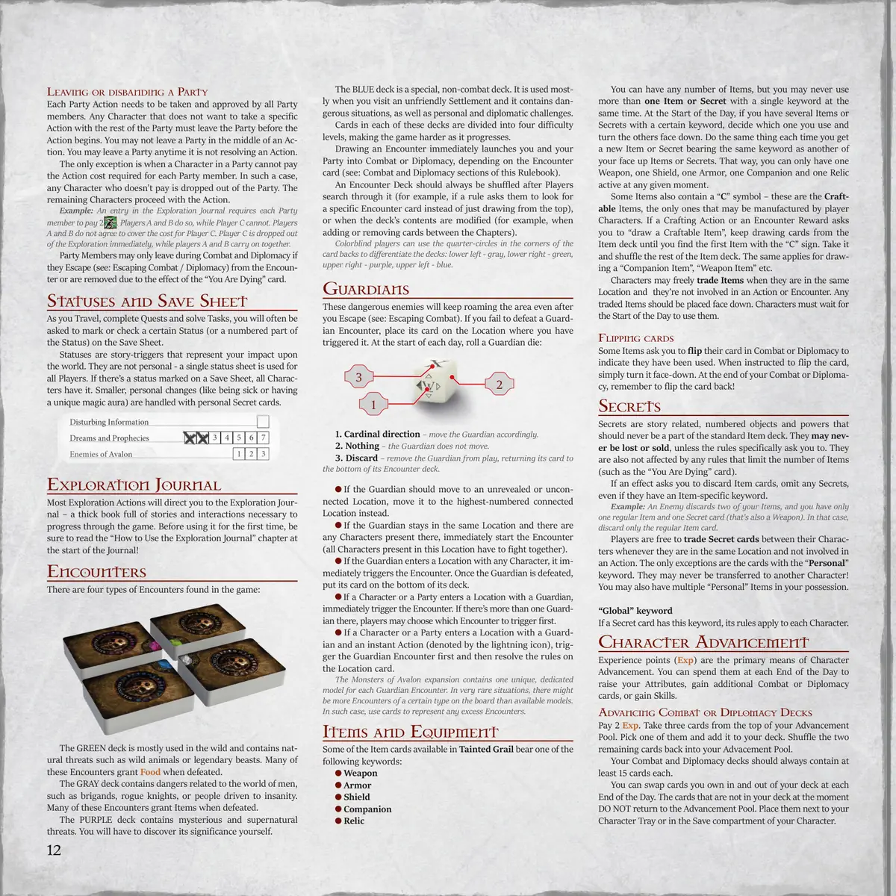
<figcaption>原版规则书 · 第 12 页（点击图片放大）</figcaption>
</figure>

<details class="mt-fold">
<summary>📝 第 12 页 AI 机翻对照（点击展开）</summary>
<div class="mt-body"><h2>离开或解散队伍</h2>

<p>每个队伍行动都需要由所有队员共同采取并获得批准。任何不想与队伍其他成员一起执行特定行动的角色必须在行动开始前离开队伍。你不得在行动中途离开队伍。只要队伍没有在执行行动，你随时可以离开队伍。</p>

<p>唯一的例外是当队伍中的某个角色无法支付每位队员所需的行动费用时。在这种情况下，任何未支付费用的角色将被移出队伍。其余角色继续执行该行动。</p>

<p>示例：探索日志中的一个条目要求每位队员支付Д。玩家A和B支付了费用，而玩家C无法支付。玩家A和B不同意为玩家C支付费用。玩家C立即被移出探索，而玩家A和B继续一起进行。</p>

<p>队员只能在战斗和外交中通过逃脱（参见"逃脱战斗与外交"）离开队伍，或者因"你在说谎"卡牌的效果而被移除。</p>

<h2>状态与存档表</h2>

<p>在旅行、完成任务和解决挑战的过程中，你经常需要在存档表上标记或勾选某个状态（或状态的编号部分）。</p>

<p>状态是触发故事情节的元素，代表你对世界的影响。它们不是个人的 - 所有玩家共用一张状态表。如果存档表上标记了某个状态，所有角色都拥有该状态。较小的个人变化（如生病或拥有独特的魔法光环）通过个人秘密卡牌处理。</p>

<h2>探索日志</h2>

<p>大多数探索行动会指引你查看探索日志 - 一本包含推进游戏所需故事和互动内容的厚书。首次使用前，请务必阅读日志开头的"如何使用探索日志"章节。</p>

<h2>遭遇</h2>

<p>游戏中存在四种类型的遭遇：</p>

<p>绿色牌库主要用于野外，包含自然威胁，如野生动物或传说中的野兽。这些遭遇中的许多在被击败后会提供食物。</p>

<p>红色牌库包含与人类社会相关的危险，如强盗、流氓骑士或陷入疯狂的人。这些遭遇中的许多在被击败后会提供物品。</p>

<p>紫色牌库包含神秘和超自然的威胁。你需要自己发现其重要性。</p>

<p>蓝色牌库是一个特殊的非战斗牌库。它主要用于你访问不友好的定居点时，包含危险情况以及个人和外交挑战。</p>

<p>这些牌库中的每张牌都分为四个难度等级，使游戏随着进程推进而变得更加困难。</p>

<p>抽取遭遇卡会立即让你和你的</p>

<p>&lt;!--page:N--&gt;</p>

<p>进入战斗或外交，取决于遭遇卡（参见本规则书的战斗和外交部分）。</p>

<p>在玩家搜索完遭遇牌库后（例如，如果规则要求他们寻找特定的遭遇卡，而不是直接从顶部抽取），或者当牌库内容被修改时（例如，在章节之间添加或移除卡牌），遭遇牌库应始终重新洗牌。</p>

<p>色盲玩家可以使用卡牌角落的四分之一圆来区分牌库：左下-灰色，右下-绿色，右上-紫色，左上-蓝色。</p>

<h2>守护者</h2>

<p>这些危险的敌人即使在你逃脱后（参见逃脱战斗）仍会在区域内游荡。如果你未能击败守护者遭遇，将其卡牌放置在你触发它的地点。每天开始时，掷一个守护者骰子：</p>

<ol>
  <li>移动 - 相应地移动守护者。</li>
  <li>停留 - 守护者不移动。</li>
  <li>离开 - 将守护者移出游戏，将其卡牌返回其遭遇牌库底部。</li>
</ol>

<p>如果守护者应移动到未揭示或未连接的地点，则将其移动到编号最高的已连接地点。</p>

<p>如果守护者停留在同一地点且那里有任何角色，立即开始遭遇（此地点的所有角色必须一起战斗）。</p>

<p>如果守护者进入有角色的地点，它立即触发遭遇。一旦守护者被击败，将其卡牌放在其牌库底部。</p>

<p>如果角色或队伍进入有守护者的地点，立即触发遭遇。如果有多个守护者，玩家可以选择先触发哪个遭遇。</p>

<p>如果角色或队伍进入有守护者和即时行动（由闪电图标表示）的地点，先触发守护者遭遇，然后解决地点卡上的规则。</p>

<p>Avalon的怪物扩展包为每个守护者遭遇提供一个独特的专用模型。在极少数情况下，板上的某种遭遇类型可能比可用模型多。在这种情况下，使用卡牌来表示任何多余的遭遇。</p>

<h2>物品和装备</h2>

<p>Tainted Grail中的一些物品卡带有以下关键词之一：</p>

<p>武器</p>

<p>护甲</p>

<p>盾牌</p>

<p>伙伴</p>

<p>遗物</p>

<p>你可以拥有任意数量的物品，但你不能同时使用多个带有相同关键词的物品或秘密。在每天开始时，如果你有多个带有某个关键词的物品或秘密，决定使用哪一个，并将其他面朝下。每次你获得一个新的物品或秘密，且它与另一个你面朝上的物品或秘密具有相同关键词时，做同样的事情。这样，你只能拥有一个</p>

<p>一件武器、一面盾牌、一件盔甲、一件伙伴和一件神器</p>

<p>在任何时候都保持激活状态。</p>

<p>一些物品还包含一个"ʖCʗ"符号——这些是可制作物品，是唯一可由玩家角色制造的物品。如果一个制作行动或遭遇奖励要求你"ʖ抽取一个可制作物品ʗ"，请持续从物品牌库中抽牌，直到找到第一个带有"ʖCʗ"标记的物品。拿取它并将物品牌库的其余部分洗牌。抽取"ʖ伙伴物品ʗ"、"ʖ武器物品ʗ"等时也适用相同规则。</p>

<p>当角色在同一位置且未参与行动或遭遇时，他们可以自由交易物品。任何被交易的物品应面朝下放置。角色必须等到一天开始时才能使用它们。</p>

<h2>翻转卡牌</h2>

<p>一些物品要求你在战斗或外交中翻转其卡牌以表示它们已被使用。当被指示翻转卡牌时，只需将其面朝下放置。在你的战斗或外交结束时，记得将卡牌翻回正面。</p>

<h2>秘密</h2>

<p>秘密是与故事相关的、编号的对象和能力，它们永远不应成为标准物品牌库的一部分。除非规则特别要求，否则它们永远不会丢失或出售。它们也不受任何限制物品数量的规则影响（例如"ʖ你正在死亡ʗ"卡牌）。</p>

<p>如果一个效果要求你弃置物品卡牌，请忽略任何秘密卡牌，即使它们具有物品特定的关键词。</p>

<p>示例：一个敌人弃置你两张物品卡牌，而你只有一张普通物品卡牌和一张秘密卡牌（同时也是武器）。在这种情况下，只弃置普通物品卡牌。</p>

<p>玩家可以在他们的角色在同一位置且未参与行动时自由交换秘密卡牌。唯一例外的是带有"ʖ个人ʗ"关键词的卡牌。它们永远不能转移给其他角色。</p>

<p>你也可以拥有多张"ʖ个人ʗ"物品。</p>

<p>如果一张秘密卡牌有这个关键词，其规则适用于每个角色。</p>

<h2>角色进阶</h2>

<p>经验值(Exp)是角色进阶的主要手段。你可以在每天结束时花费它们来提高你的属性，获得额外的战斗或外交卡牌，或获得技能。</p>

<h2>进阶战斗或外交牌库</h2>

<p>支付Д Exp。从你的进阶牌库顶抽取三张牌。选择其中一张并将其加入你的牌库。将剩余的两张牌洗回你的进阶牌库。</p>

<p>你的战斗和外交牌库应始终至少包含ГЗ张牌。</p>

<p>你可以在每天结束时将你拥有的牌在牌库内外交换。当前不在你牌库中的牌将返回进阶牌库。将它们放在你的角色托盘旁边或你角色的保存隔层中。</p></div>
</details>

<figure>
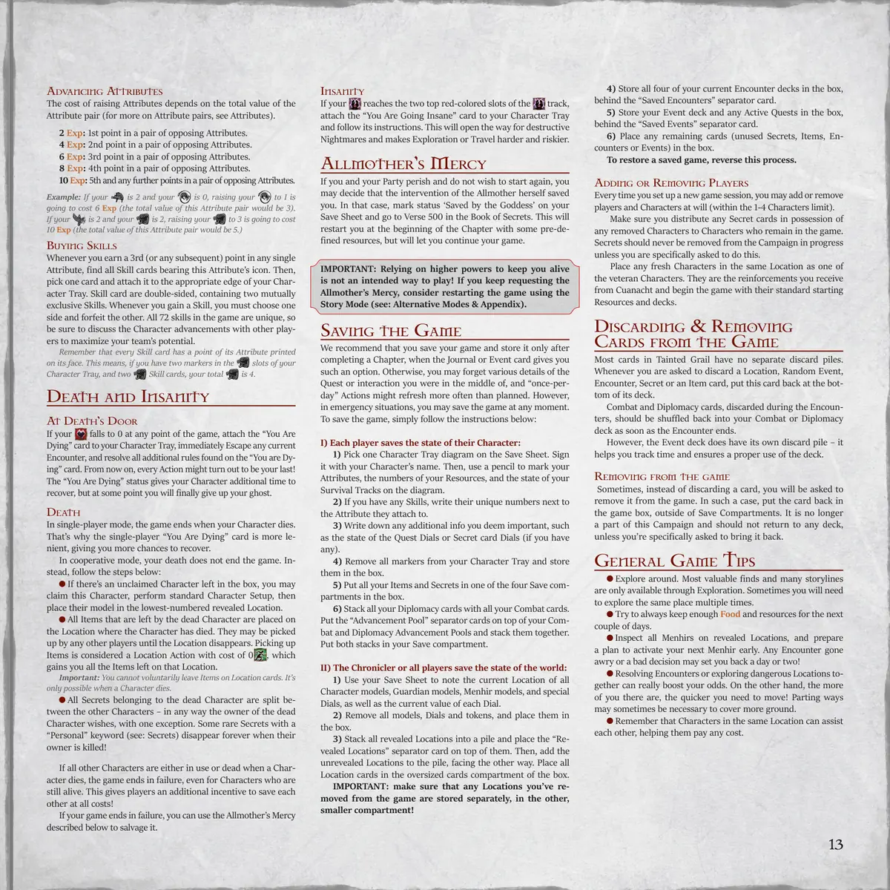
<figcaption>原版规则书 · 第 13 页（点击图片放大）</figcaption>
</figure>

<details class="mt-fold">
<summary>📝 第 13 页 AI 机翻对照（点击展开）</summary>
<div class="mt-body"><h2>提升属性</h2>

<p>提升属性的成本取决于对立属性对的总值（有关属性对的更多信息，请参见属性部分）。</p>

<p>Д 经验值：对立属性对中的第一点。</p>

<p>Ж 经验值：对立属性对中的第二点。</p>

<p>И 经验值：对立属性对中的第三点。</p>

<p>К 经验值：对立属性对中的第四点。</p>

<p>ГВ 经验值：对立属性对中的第五点及后续各点。</p>

<p>示例：如果你的力量是2，你的意志是0，将你的力量提升到1将花费6点经验值（这个属性对的总值将是3）。</p>

<p>如果你的力量是2，你的意志是2，将你的力量提升到3将花费10点经验值（这个属性对的总值将是5）。</p>

<h2>购买技能</h2>

<p>每当你在任何单一属性中获得第三点（或任何后续）点数时，找到所有带有该属性图标的技能卡。然后，选择一张卡并将其附着到你的角色托盘的相应边缘。技能卡是双面的，包含两个互斥的技能。当你获得一个技能时，你必须选择一面并放弃另一面。游戏中的所有技能都是唯一的，因此务必与其他玩家讨论角色提升，以最大化你团队的潜力。</p>

<p>请记住，每张技能卡的面部都印有其属性的一点。这意味着，如果你的角色托盘中有两个标记在力量槽位，并且有两张力量技能卡，你的总力量值是4。</p>

<h2>死亡与疯狂</h2>

<h2>垂死状态</h2>

<p>如果你的生命值在游戏中的任何时候降至0，将"你正在垂死"卡附着到你的角色托盘上，立即脱离当前的遭遇，并解决"你正在垂死"卡上找到的所有额外规则。从现在开始，每个行动都可能成为你的最后一次！</p>

<p>"你正在垂死"状态为你的角色提供了额外的恢复时间，但在某个时刻你最终将放弃你的生命。</p>

<h2>死亡</h2>

<p>在单人模式下，当你的角色死亡时游戏结束。这就是为什么单人模式的"你正在垂死"卡更为宽松，给你更多的恢复机会。</p>

<p>在合作模式下，你的死亡不会结束游戏。相反，请遵循以下步骤：</p>

<p>如果盒子里还有一个未被认领的角色，你可以认领这个角色，执行标准角色设置，然后将他们的模型放置在编号最低的已揭示地点。</p>

<p>死亡角色留下的所有物品都放置在角色死亡的地点上。它们可以被其他玩家拾取，直到该地点消失。拾取物品被视为一个地点行动，成本为0，使你获得该地点上留下的所有物品。</p>

<p>重要：你不能自愿将物品留在地点卡上。只有在角色死亡时才可能这样做。</p>

<p>属于死亡角色的所有秘密被分割——</p>

<h2>死亡</h2>

<p>当一个角色死亡时，其所有物品和秘密可以由该角色的所有者以任何方式分配给其他角色，但有一个例外。一些带有"个人"关键词的稀有秘密（参见秘密）会在其所有者死亡时永远消失。</p>

<p>如果当一个角色死亡时，所有其他角色要么正在使用中，要么已经死亡，那么游戏将以失败告终，即使对于仍然活着的角色也是如此。这为玩家提供了额外的动力，让他们不惜一切代价互相拯救。</p>

<p>如果你的游戏以失败告终，你可以使用下面描述的"诸母之恩"来挽救它。</p>

<h2>疯狂</h2>

<p>如果你的疯狂值达到疯狂轨道顶部的两个红色槽位，将"你正变得疯狂"卡牌附加到你的角色托盘上并遵循其说明。这将破坏性的噩梦打开道路，并使探索或旅行变得更加困难和危险。</p>

<h2>诸母之恩</h2>

<p>如果你和你的小队死亡并且不想重新开始，你可以决定是诸母本人的干预拯救了你们。在这种情况下，在你的存档表上标记"被女神拯救"状态，然后前往秘密之书中的第3章。这会让你在章节开始时重新开始，并带有一些预定义的资源，但可以让你继续游戏。</p>

<p>重要提示：依赖更高力量来保持生命是不明智的。你应该依靠自己的技能、准备和团队合作来生存。诸母之恩应该被视为最后的手段，而不是常规的游戏机制。</p>

<h2>保存游戏</h2>

<p>我们建议你只在完成一章后保存游戏，当时记事牌或事件牌给你这样的选项。否则，你可能会忘记你正在进行的任务或互动的各种细节，而"每日一次"的行动可能会比计划中更频繁地刷新。然而，在紧急情况下，你可以随时保存游戏。</p>

<p>要保存游戏，只需遵循以下说明：</p>

<p>I) 每位玩家保存其角色的状态：</p>

<p>A) 在存档表上选择一个角色托盘图示。签上你角色的名字。然后用铅笔在图示上标记你的属性、你的资源数量以及你的生存轨道的状态。</p>

<p>B) 如果你有任何技能，将它们的唯一编号写在它们所附属性的旁边。</p>

<p>C) 记下任何你认为重要的额外信息，例如任务骰子或秘密卡牌骰子的状态（如果你有的话）。</p>

<p>D) 从你的角色托盘上移除所有指示物，并将它们存放在盒子里。</p>

<p>E) 将你所有的物品和秘密放入盒子中的四个保存隔间之一。</p>

<p>F) 将你所有的外交卡与战斗卡叠放在一起。将"进阶工具"分隔卡放在你的战斗和外交进阶工具的顶部，然后将它们叠放在一起。将两叠牌放入你的保存隔间。</p>

<p>II) 记事者或所有玩家保存世界状态：</p>

<h2>游戏结束</h2>

<p>使用你的存档表记录所有角色模型、守护者模型、巨石模型和特殊指示物的当前位置，以及每个指示物的当前值。</p>

<p>移除所有模型、指示物和指示物，并将它们放入盒中。</p>

<p>将所有已揭示的地点堆成一叠，并将"已揭示的地点"分隔卡放在顶部。然后，将未揭示的地点以相反方向添加到这叠牌中。将所有地点卡放入盒中的超大卡牌隔层。</p>

<p>重要：确保你已重新放置的任何地点都放入较小的隔层中！</p>

<p>将你当前的四个遭遇牌库存放在盒中，放在"已保存的遭遇"分隔卡后面。</p>

<p>将你的事件牌库和任何活跃任务存放在盒中，放在"已保存的事件"分隔卡后面。</p>

<p>将剩余的卡牌（未使用的秘密、物品、遭遇或事件）放入盒中。</p>

<h2>添加或移除玩家</h2>

<p>每次设置新的游戏会话时，你可以随意添加或移除玩家和角色（在Г-Ж角色限制范围内）。</p>

<p>确保将任何被移除角色拥有的秘密卡牌分发给游戏中剩余的角色。</p>

<p>除非被特别要求，否则不应从进行中的战役中移除秘密卡牌。</p>

<p>将任何新角色与一名资深角色放在同一地点。它们是你从Cuanacht（库纳赫特）获得的增援，并以他们标准的起始资源和牌库开始游戏。</p>

<h2>弃牌与移除游戏中的卡牌</h2>

<p>《腐化之路》中的大多数卡牌没有单独的弃牌堆。</p>

<p>每当被要求弃置一个地点、随机事件、遭遇、秘密或物品卡牌时，将这张牌放回其牌库底部。</p>

<p>在遭遇期间弃置的战斗和外交卡牌，应在遭遇结束后立即洗回你的战斗或外交牌库。</p>

<p>然而，事件牌库确实有自己的弃牌堆——它帮助你追踪时间并确保牌库的适当使用。</p>

<h2>从游戏中移除</h2>

<p>有时，你可能会被要求将卡牌从游戏中移除，而不是弃置。在这种情况下，将卡牌放回游戏盒中，存档隔层之外。它不再是此战役的一部分，不应返回任何牌库，除非你被特别要求带回它。</p>

<h2>通用游戏提示</h2>

<p>四处探索。最有价值的发现和许多故事线只能通过探索获得。有时你需要多次探索同一地点。</p>

<p>尝试始终保持足够的食物和资源，以应对接下来的几天。</p>

<p>检查所有已揭示地点上的巨石，并提前计划激活你的下一个巨石。任何遭遇</p>

<p>一个错误或糟糕的决定可能会让你倒退一两天或两天。</p>

<p>一起解决遭遇或探索危险地点可以真正提高你的胜算。另一方面，人越多，你就需要移动得越快。分道扬镳有时是必要的，以覆盖更多区域。</p>

<p>请记住，同一地点的角色可以互相协助，帮助他们支付任何费用。</p></div>
</details>

<figure>
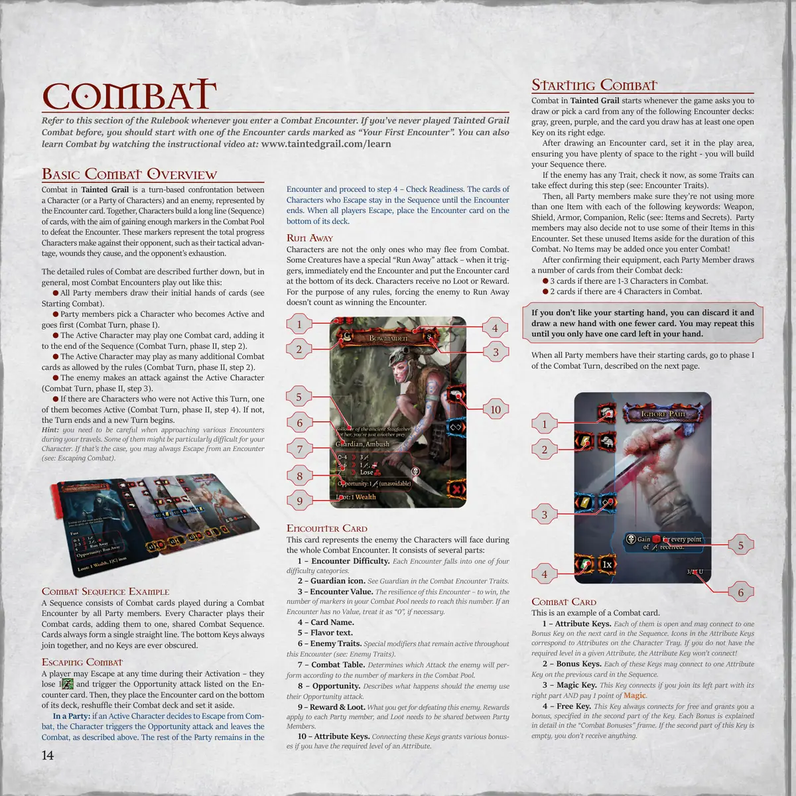
<figcaption>原版规则书 · 第 14 页（点击图片放大）</figcaption>
</figure>

<details class="mt-fold">
<summary>📝 第 14 页 AI 机翻对照（点击展开）</summary>
<div class="mt-body"><h2>基础战斗概览</h2>

<p>《污圣杯》中的战斗是一种回合制对抗，发生在角色（或角色小队）与遭遇卡所代表的敌人之间。角色们共同构建一条长长的卡牌序列（Sequence），旨在获得足够的战斗标记来击败遭遇。这些标记代表角色对对手的总进展，例如他们的战术优势、造成的伤害以及对手的疲惫。</p>

<p>战斗的详细规则在后面描述，但总体而言，大多数战斗遭遇的进行方式如下：</p>

<p>小队所有成员抽取初始手牌（参见"开始战斗"）。</p>

<p>小队成员选择一名角色成为活跃角色并先行动（战斗回合，阶段1）。</p>

<p>活跃角色可以打出一张战斗卡，将其添加到序列末尾（战斗回合，阶段2，步骤A）。</p>

<p>活跃角色可以打出规则允许的尽可能多的额外战斗卡（战斗回合，阶段2，步骤A）。</p>

<p>敌人对活跃角色发起攻击（战斗回合，阶段2，步骤B）。</p>

<p>如果本回合有未成为活跃角色的角色，其中一名成为活跃角色（战斗回合，阶段2，步骤C）。如果没有，回合结束，新回合开始。</p>

<p>提示：在旅行中接近各种遭遇时需要小心。其中一些可能对你的角色特别困难。如果是这种情况，你总是可以从遭遇中逃脱（参见：逃离战斗）。</p>

<h2>战斗序列示例</h2>

<p>序列由所有小队成员在战斗遭遇中打出的战斗卡组成。每个角色都打出他们的战斗卡，将它们添加到一个共享的战斗序列中。卡牌总是形成一条直线。底部的钥匙总是连接在一起，没有任何钥匙会被遮挡。</p>

<h2>逃离战斗</h2>

<p>玩家可以在他们的激活阶段随时逃脱——他们失去1点生命值并触发遭遇卡上列出的机会攻击。然后，他们将遭遇卡放置到其牌库底部，洗混他们的战斗牌库并将其放在一旁。</p>

<p>在小队中：如果活跃角色决定逃离战斗，该角色触发机会攻击并如上所述离开战斗。小队的其余成员留在遭遇中并进入步骤C——检查准备状态。逃离的角色的卡牌留在序列中，直到遭遇结束。当所有玩家都逃离时，将遭遇卡放置到其牌库底部。</p>

<h2>逃跑</h2>

<p>角色并非唯一可以从战斗中逃离的存在。</p>

<p>一些生物拥有特殊的"逃跑"攻击（ʖRun Awayʗ），当它触发时，立即结束遭遇战，并将遭遇战牌放到其牌库底部。角色不会获得战利品或奖励。</p>

<p>出于任何规则目的，迫使敌人逃跑不算作赢得遭遇战。</p>

<h2>遭遇战牌</h2>

<p>这张牌代表角色在整个战斗遭遇战中将要面对的敌人。它由几个部分组成：</p>

<p>Г ʦ ¿´ÀƿŶà ºȲ´Æ½ÅÊ。每个遭遇战都属于四个难度类别之一。</p>

<p>Д ʦ Ʋõº²¿ º´À¿。参见战斗遭遇战特性中的守护者。</p>

<p>Е ʦ ¿´ÀƿŶà ²½Æ¶。这次遭遇战的韧性——要获胜，你战斗池中的标记数量需要达到这个数字。如果遭遇战没有数值，必要时视为"0"。</p>

<p>Ж ʦ ²Ãµ ²¾¶。</p>

<p>З ʦ 	½²ÇÀà ŶÉÅ。</p>

<p>И ʦ ¿¶¾Ê TòºÅÄ。在整个遭遇战中保持有效的特殊修饰符（参见：敌人特性）。</p>

<p>Й ʦ À¾³²Å T²³½¶。根据战斗池中的标记数量决定敌人将执行哪种攻击。</p>

<p>К ʦ OÁÁÀÃÅÆ¿ºÅÊ。描述敌人使用其机会攻击时会发生什么。</p>

<p>Л ʦ ¶È²Ãµ ȹ ÀÀÅ。击败这个敌人你能得到什么。奖励适用于每个团队成员，战利品需要在团队成员之间分配。</p>

<p>ГВ ʦ AÅÅú³ÆŶ ¶ÊÄ。连接这些钥匙可以为你提供各种属性所需等级的加成。</p>

<h2>开始战斗</h2>

<p>在《Tainted Grail》中，当游戏要求你从以下任何遭遇战牌库中抽取或选择一张牌时，战斗就会开始：灰色、绿色、紫色，并且你抽到的牌在其右侧边缘至少有一个开放的钥匙。</p>

<p>抽取遭遇战牌后，将其放置在游戏区域，确保右侧有足够的空间——你将在那里构建你的序列。</p>

<p>如果敌人有任何特性，现在就检查它们，因为有些特性可能会在这一步骤中生效（参见：遭遇战特性）。</p>

<p>然后，所有团队成员确保他们没有使用超过一件带有以下关键词的装备：武器、盾牌、护甲、伙伴、遗物（参见：装备与秘密）。团队成员也可以决定在这次遭遇战中不使用他们的一些装备。将这些未使用的装备在战斗期间放在一边。一旦进入战斗，就不能再添加任何装备。</p>

<p>确认他们的装备后，每个团队成员从他们的战斗牌库中抽取一定数量的牌：</p>

<p>如果有Г-Е个角色参与战斗，抽取Е张牌。</p>

<p>如果有Ж个角色参与战斗，抽取Д张牌。</p>

<p>· ÊÀÆ µÀ¿ʓÅ ½º¼¶ ÊÀÆà ÄŲÃź¿¸ ¹²¿µ, ÊÀÆ ´²¿ µºÄ´²Ãµ ºÅ ²¿µ µÃ²È ² ¿¶È ¹²¿µ ȺŹ À¿¶ ·¶È¶Ã ´²Ãµ. ÀÆ ¾²Ê öÁ¶²Å ŹºÄ ƿź½ ÊÀÆ À¿½Ê ¹²Ç¶ À¿¶ ´²Ãµ ½¶·Å º¿ ÊÀÆà ¹²¿µ.</p>

<p>当所有团队成员都获得了起始牌后，进入下一页描述的战斗回合阶段。</p>

<h2>战斗牌</h2>

<p>这是一张战斗卡牌的示例。</p>

<p>Г ʦ AÅÅú³ÆŶ ¶ÊÄ. 它们都是开放的，并且可以连接到序列中下一张卡牌的一个奖励键。属性键中的图标对应角色托盘上的属性。如果你在某个属性上没有所需的等级，该属性键将无法连接！</p>

<p>Д ʦ BÀ¿ÆÄ ¶ÊÄ. 这些键中的每一个都可以连接到序列中前一张卡牌的一个属性键。</p>

<p>Е ʦ ²¸º´ ¶Ê. 如果你将其左侧部分与右侧部分连接起来并支付1点魔法值，则此键连接。</p>

<p>Ж ʦ 	ö¶ ¶Ê. 此键总是免费连接并为你提供一个奖励，该奖励在键的第二部分中指定。每个奖励在"战斗奖励"框中有详细说明。如果此键的第二部分为空，你不会获得任何东西。</p>

<p>ГВ</p>

<p>Г</p>

<p>Д</p>

<p>Ж</p>

<p>Е</p>

<p>З</p>

<p>И</p>

<p>Й</p>

<p>К</p>

<p>Г</p>

<p>Д</p>

<p>З</p>

<p>Е</p>

<p>И</p>

<p>Ж</p></div>
</details>

<figure>
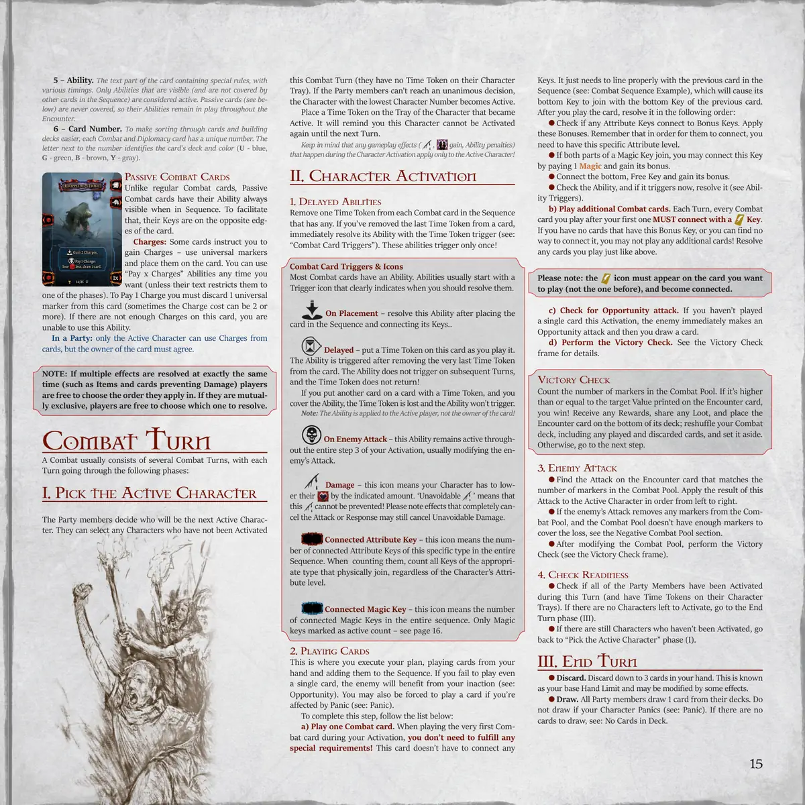
<figcaption>原版规则书 · 第 15 页（点击图片放大）</figcaption>
</figure>

<details class="mt-fold">
<summary>📝 第 15 页 AI 机翻对照（点击展开）</summary>
<div class="mt-body"><p>这个战斗回合（他们的角色托盘上没有时间指示物）。如果小队成员无法达成一致决定，角色编号最低的角色变为激活状态。在变为激活状态的角色托盘上放置一个时间指示物。它会提醒你，这个角色在下一回合之前不能再次被激活。</p>

<p>请记住，在角色激活期间发生的任何游戏效果（获得、能力惩罚）仅适用于激活角色！</p>

<h2>II. 角色激活</h2>

<h2>1. 延迟能力</h2>

<p>从序列中每张有时间指示物的战斗卡上移除一个时间指示物。如果你从一张卡上移除了最后一个时间指示物，立即使用时间指示物触发器解决其能力（参见"战斗卡触发器"）。这些能力只触发一次。</p>

<p>大多数战斗卡都有能力。能力通常以触发图标开始，明确指示你应该何时解决它们。</p>

<p>放置时 - 在将卡牌放入序列并连接其钥匙后解决此能力。</p>

<p>延迟 - 在你打出这张卡时，在这张卡上放置一个时间指示物。在从卡上移除最后一个时间指示物后，该能力被触发。该能力不会在后续回合触发，时间指示物不会返回。</p>

<p>如果你将另一张卡放在有时间指示物的卡上，并且覆盖了该能力，则时间指示物会丢失，能力不会触发。</p>

<p>注意：能力应用于激活玩家，而非卡牌所有者！</p>

<p>敌人攻击 - 此能力在整个激活步骤期间保持活跃，通常会修改敌人的攻击。</p>

<p>伤害 - 此图标意味着你的角色必须将其降低到指定数量。"不可避免"意味着此伤害无法避免。请注意，完全取消攻击或响应的效果仍然可以取消"不可避免"伤害。</p>

<p>连接属性键数量 - 此图标表示整个序列中此特定类型连接的属性键数量。计算它们时，计算所有适当类型物理连接的钥匙，无论角色的属性等级如何。</p>

<p>连接魔法键数量 - 此图标表示整个序列中连接的魔法键数量。只有标记为活跃的魔法键才计入 - 参见第ГИ页。</p>

<h2>2. 打出卡牌</h2>

<p>这是你执行计划的地方，从手牌中打出卡牌并将其添加到序列中。如果你甚至没有打出一张卡，敌人将从你的不作为中受益（参见"机会"）。如果你受到恐慌的影响，你也可能被迫打出卡牌（参见"恐慌"）。</p>

<p>要完成此步骤，请遵循以下列表：</p>

<p>打出一张战斗卡。在你的激活期间打出第一张战斗卡时，你必须从手牌中打出一张战斗卡。</p>

<h2>战斗卡牌</h2>

<p>大多数战斗卡牌都有能力。能力通常以一个触发图标开始，该图标明确指示你应该何时解决它们。</p>

<p>放置时 - 在将卡牌放入序列并连接其钥匙后解决此能力。</p>

<p>延迟 - 在你打出此卡牌时放置一个时间指示物在此卡牌上。在移除卡牌上最后一个时间指示物后，能力被触发。能力不会在后续回合触发，且时间指示物不会返回。</p>

<p>如果你将另一张卡牌放在带有时间指示物的卡牌上，并且覆盖了该能力，则时间指示物会丢失，能力也不会触发。</p>

<p>注意：能力应用于当前玩家，而非卡牌所有者！</p>

<p>敌人攻击时 - 此能力在整个激活步骤期间保持活跃，通常会修改敌人的攻击。</p>

<p>伤害 - 此图标意味着你的角色必须将其降低指示的数量。"不可避免"意味着此伤害无法被避免。请注意，完全取消攻击或响应的效果仍可能取消"不可避免"伤害。</p>

<p>属性键连接数 - 此图标表示整个序列中此特定类型已连接的属性钥匙的数量。计算它们时，计算所有适当类型物理连接的钥匙，无论角色的属性等级如何。</p>

<p>魔法键连接数 - 此图标表示整个序列中已连接的魔法钥匙的数量。只有标记为活跃的魔法钥匙才计入 - 见第X页。</p>

<h2>打出卡牌</h2>

<p>它只需要与序列中的前一张卡牌正确对齐（见战斗序列示例），这将导致其底部钥匙与前一张卡牌的底部钥匙连接。</p>

<p>在你打出卡牌后，按以下顺序解决它：</p>

<p>检查是否有任何属性钥匙连接到奖励钥匙。应用这些奖励。请记住，为了使它们连接，你需要拥有此特定的属性等级。</p>

<p>如果魔法键的两部分都连接，你可以通过支付1点魔法来连接此钥匙并获得其奖励。</p>

<p>连接底部、免费的钥匙并获得其奖励。</p>

<p>检查能力，如果现在触发，则解决它（见能力触发）。</p>

<h2>每回合额外卡牌</h2>

<p>每个回合，你在第一张之后打出的每张战斗卡牌都会获得奖励。如果你没有拥有此奖励钥匙的卡牌，或者找不到连接它的方法，你可能无法打出任何额外的卡牌。像上面一样解决你打出的任何卡牌。</p>

<p>请注意：奖励图标必须出现在你想要打出额外卡牌的卡牌上。</p>

<h2>未打出卡牌</h2>

<p>如果你在此激活阶段没有打出任何卡牌，敌人立即进行一次攻击机会攻击，然后你摸一张牌。</p>

<p>&lt;!--page:N--&gt;</p>

<p>参见胜利检查框了解详情。</p>

<h2>胜利检查</h2>

<p>计算战斗池中的指示物数量。如果它大于或等于遭遇卡上印刷的目标值，你就赢了。获得任何奖励，分享任何战利品，并将遭遇卡放到其牌库底部。洗混你的战斗牌库，包括已打出和已弃置的牌，然后将其放在一边。否则，进入下一步。</p>

<h2>3. 敌人攻击</h2>

<p>找到遭遇卡上与战斗池中指示物数量相匹配的攻击。按从左到右的顺序将此攻击的结果应用于活跃角色。</p>

<p>如果敌人的攻击从战斗池中移除了任何指示物，且战斗池没有足够的指示物来弥补损失，请参见负战斗池部分。</p>

<p>修改战斗池后，执行胜利检查（参见胜利检查框）。</p>

<h2>4. 检查准备状态</h2>

<p>检查所有队员是否在本回合已被激活（且其角色托盘上有时间指示物）。如果没有剩余角色需要激活，进入结束回合阶段（...）。</p>

<p>如果仍有未被激活的角色，回到"选择活跃角色"阶段（.）。</p>

<h2>III. 结束回合</h2>

<p>丢弃手牌至张。这被称为你的基础手牌上限，可能会被某些效果修改。所有队员从他们的牌库中张牌。如果你的角色失控（参见失控），不要摸牌。如果没有牌可摸，参见牌库中无牌。</p>

<p>特殊能力卡：包含特殊规则文本部分的卡牌，具有各种时机。只有可见的（且不被序列中其他牌覆盖的）能力才被视为激活。被动牌（见下文）永远不会被覆盖，因此它们的能力在整个遭遇过程中保持有效。</p>

<p>卡牌编号：为了便于整理卡牌和构筑牌组，每张战斗和外交卡都有唯一编号。编号旁边的字母标识卡牌的牌库和颜色（B - 蓝色，G - 绿色，B - 棕色，Y - 灰色）。</p>

<p>1x</p>

<p>1ڝ/25 Ã</p>

<h2>致命打击</h2>

<p>获得2个充能。</p>

<p>支付1个充能：</p>

<p>少摸1张牌。</p>

<h2>被动战斗卡</h2>

<p>与普通战斗卡不同，被动战斗卡在序列中时其能力始终可见。为便于实现这一点，它们的键位于卡牌的相对边缘。</p>

<p>充能：某些卡牌指示你获得充能ʦ 使用通用指示物并将其放在卡牌上。你可以在任何时候使用"支付x个充能"能力（除非其文本将其限制在某个阶段）。要支付1个充能，你必须从此卡牌上弃置1个通用指示物（有时充能成本可以是1个或更多）。如果此卡牌上的充能不足，你无法使用此能力。</p>

<h2>在派对中：只有主动角色可以使用卡牌上的充能，但卡牌所有者必须同意。</h2>

<p>时间（如防止伤害的物品和卡牌）玩家</p>

<p>可以随时使用。如果卡牌有使用限制（如"仅限回合开始时"），则只能在指定时间使用。</p>

<h2>战斗回合</h2>

<p>一场战斗通常包含多个战斗回合，每个回合将经历以下阶段：</p>

<h2>I. 选择主动角色</h2>

<p>派对成员决定谁将成为下一个主动角色。他们可以选择任何尚未被激活的角色。</p></div>
</details>

<figure>
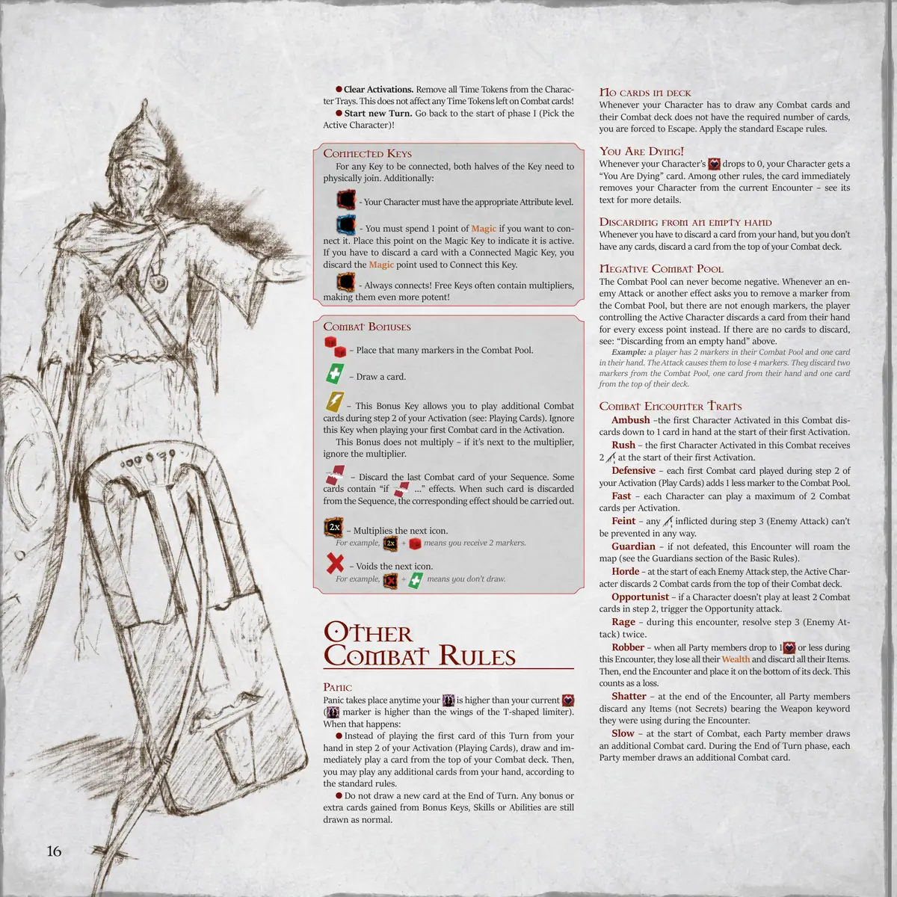
<figcaption>原版规则书 · 第 16 页（点击图片放大）</figcaption>
</figure>

<details class="mt-fold">
<summary>📝 第 16 页 AI 机翻对照（点击展开）</summary>
<div class="mt-body"><p>移除角色托盘中的所有时间指示物。这不影响留在战斗卡牌上的任何时间指示物。</p>

<p>回到阶段1开始处（选择活跃角色）。</p>

<h2>连接钥匙</h2>

<p>对于任何要连接的钥匙，钥匙的两半需要物理连接。此外，</p>

<ul>
  <li>你的角色必须具有相应的属性等级。</li>
  <li>如果你想连接它，你必须花费1点魔法。将这一点放在魔法钥匙上以表示它已激活。</li>
  <li>如果你必须弃置一张带有已连接魔法钥匙的卡牌，你弃置用于连接该钥匙的魔法点。</li>
  <li>总是连接。三把钥匙通常包含乘数，使它们更加强大。</li>
</ul>

<h2>战斗奖励</h2>

<ul>
  <li>在战斗池中放置相应数量的指示物。</li>
  <li>摸一张牌。</li>
  <li>这个奖励钥匙允许你在激活步骤Д期间额外打出战斗卡牌（参见：打出卡牌）。在你的激活中打出第一张战斗卡牌时忽略此钥匙。</li>
  <li>此奖励不乘以图标。如果它紧邻乘数，忽略乘数。</li>
  <li>弃置序列的最后一张战斗卡牌。一些卡牌包含"弃置时"效果。当这样的卡牌从序列中被弃置时，应执行相应的效果。</li>
  <li>2x - 乘以下一个图标。例如，2x + 表示你获得2个指示物。</li>
  <li>跳过下一个图标。例如，+ 表示你不摸牌。</li>
</ul>

<h2>其他</h2>

<h2>战斗规则</h2>

<h2>恐慌</h2>

<p>恐慌发生在你的恐慌值高于当前恐慌值时（指示物高于T形限制器的翅膀）。</p>

<p>当这种情况发生时：</p>

<p>在激活步骤Д（打出卡牌）中，不从手牌中打出本回合的第一张牌，而是从战斗牌库顶部摸牌并立即打出。然后，你可以根据标准规则从手牌中打出任何额外的卡牌。</p>

<p>在回合结束时不要摸新牌。从奖励钥匙、技能或能力获得的任何奖励或额外卡牌仍正常摸取。</p>

<h2>牌库无牌</h2>

<p>每当你的角色需要摸取任何战斗卡牌而其战斗牌库没有所需数量的牌时，你被迫逃脱。应用标准逃脱规则。</p>

<p>你正在死亡！</p>

<p>每当你的角色的生命值降至0时，你的角色会获得一张"你正在死亡"卡牌。除其他规则外，该卡牌会立即将你的角色从当前遭遇中移除 - 详情见其文本。</p>

<h2>从空手牌弃牌</h2>

<p>每当你需要从手牌弃置一张牌，但你没有牌时，从战斗牌库顶部弃置一张牌。</p>

<h2>负战斗池</h2>

<p>战斗池永远不会变为负数。每当敌人攻击或其他效果要求你从战斗池中移除一个指示物，但没有足够的指示物时，玩家</p>

<p>控制主动角色每多损失一点分数就弃掉一张手牌。如果没有可弃的牌，请参见上面的"从空手牌中弃牌"。</p>

<p>示例：一名玩家在他们的战斗池中有2个指示物，手中有1张牌。这次攻击导致他们损失4个指示物。他们从战斗池中弃掉2个指示物，从手牌中弃掉1张牌，并从牌库顶弃掉1张牌。</p>

<h2>战斗遭遇特性</h2>

<p>埋伏 - 在此战斗中首先激活的角色在其首次激活开始时，手牌需弃至只剩1张。</p>

<p>突袭 - 在此战斗中首先激活的角色在其首次激活开始时获得2点行动点。</p>

<p>防御 - 在你的激活步骤3（出牌）期间，每首张打出的战斗牌为战斗池增加的指示物数量减少1。</p>

<p>快速 - 每个角色每回合最多可打出2张战斗牌。</p>

<p>佯攻 - 在步骤5（敌人攻击）期间造成的任何伤害都无法以任何方式 prevented。</p>

<p>守护者 - 如果未被击败，此遭遇将在地图上游荡（参见基础规则的"守护者"部分）。</p>

<p>群聚 - 在每个敌人攻击步骤开始时，主动角色从其战斗牌库顶弃掉2张战斗牌。</p>

<p>机会主义者 - 如果一个角色在步骤3没有打出至少2张战斗牌，触发机会攻击。</p>

<p>狂怒 - 在此遭遇期间，步骤5（敌人攻击）需执行两次。</p>

<p>强盗 - 当所有队员在此遭遇中生命值降至1或更低时，他们失去所有财富并弃掉所有物品。然后，结束遭遇并将其放置到其牌库底。这算作一次失败。</p>

<p>粉碎 - 在遭遇结束时，所有队员弃掉他们在遭遇期间使用的带有"武器"关键词的任何物品（秘密牌除外）。</p>

<p>缓慢 - 在战斗开始时，每个队员额外摸1张战斗牌。在回合结束阶段，每个队员额外摸1张战斗牌。</p></div>
</details>

<figure>
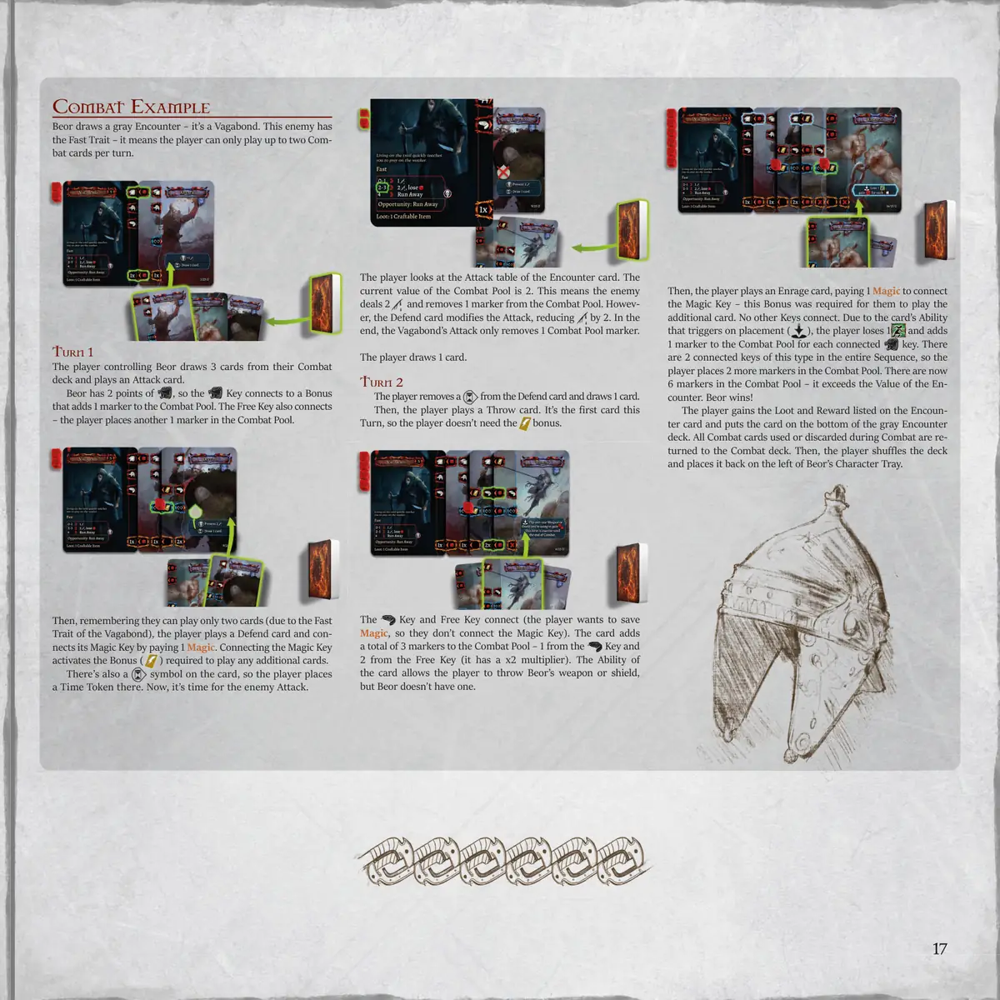
<figcaption>原版规则书 · 第 17 页（点击图片放大）</figcaption>
</figure>

<details class="mt-fold">
<summary>📝 第 17 页 AI 机翻对照（点击展开）</summary>
<div class="mt-body"><h2>战斗示例</h2>

<p>Beor 抽到一张灰色遭遇牌——这是一个流浪者。这个敌人具有"快速"特性，这意味着玩家每回合最多只能出两张战斗牌。</p>

<h2>回合 1</h2>

<p>控制 Beor 的玩家从他们的战斗牌库中抽 3 张牌，并打出一张攻击牌。</p>

<p>Beor 有 3 点力量，所以钥匙连接到一个奖励，该奖励向战斗池添加 1 个标记。三把钥匙也连接了——玩家在战斗池中再放置 1 个标记。</p>

<p>然后，玩家记得他们只能出两张牌（由于流浪者的"快速"特性），于是打出一张防御牌，并通过支付 1 魔力连接其魔法钥匙。连接魔法钥匙激活了奖励（），这是出任何额外牌所需的。</p>

<p>牌上还有一个符号，所以玩家在那里放置一个时间标记。现在，轮到敌人攻击了。</p>

<p>玩家查看遭遇牌的攻击表。战斗池的当前值是 3。这意味着敌人造成 3 点伤害，并从战斗池中移除 1 个标记。然而，防御牌修改了这次攻击，将伤害降低了 3。最终，流浪者的攻击只移除了 1 个战斗池标记。玩家抽 1 张牌。</p>

<h2>回合 2</h2>

<p>玩家从防御牌上移除 1 个标记，并抽 1 张牌。</p>

<p>然后，玩家打出一张投掷牌。这是本回合的第一张牌，所以玩家不需要奖励。</p>

<p>钥匙和三把钥匙连接了（玩家想节省魔力，所以他们没有连接魔法钥匙）。这张牌总共向战斗池添加了 3 个标记——1 个来自钥匙，2 个来自三把钥匙（它有一个 x2 乘数）。卡牌的能力允许玩家投掷 Beor 的武器或盾牌，但 Beor 没有这些东西。</p>

<p>然后，玩家打出一张激怒牌，支付 1 魔力连接魔法钥匙——这个奖励是他们打出额外牌所需的。没有其他钥匙连接。由于卡牌的能力在放置时触发（），玩家失去 1 点生命值，并为每个连接的此类钥匙在战斗池中添加 1 个标记。在整个序列中有 2 个此类连接的钥匙，所以玩家在战斗池中再放置 2 个标记。现在战斗池中有 5 个标记——这超过了遭遇牌的价值。Beor 获胜！</p>

<p>玩家获得遭遇牌上列出的战利品和奖励，并将这张牌放到灰色遭遇牌库的底部。战斗中使用或弃置的所有战斗牌都返回到战斗牌库。然后，玩家洗牌并将牌放回 Beor 的角色托盘左侧。</p></div>
</details>

<figure>
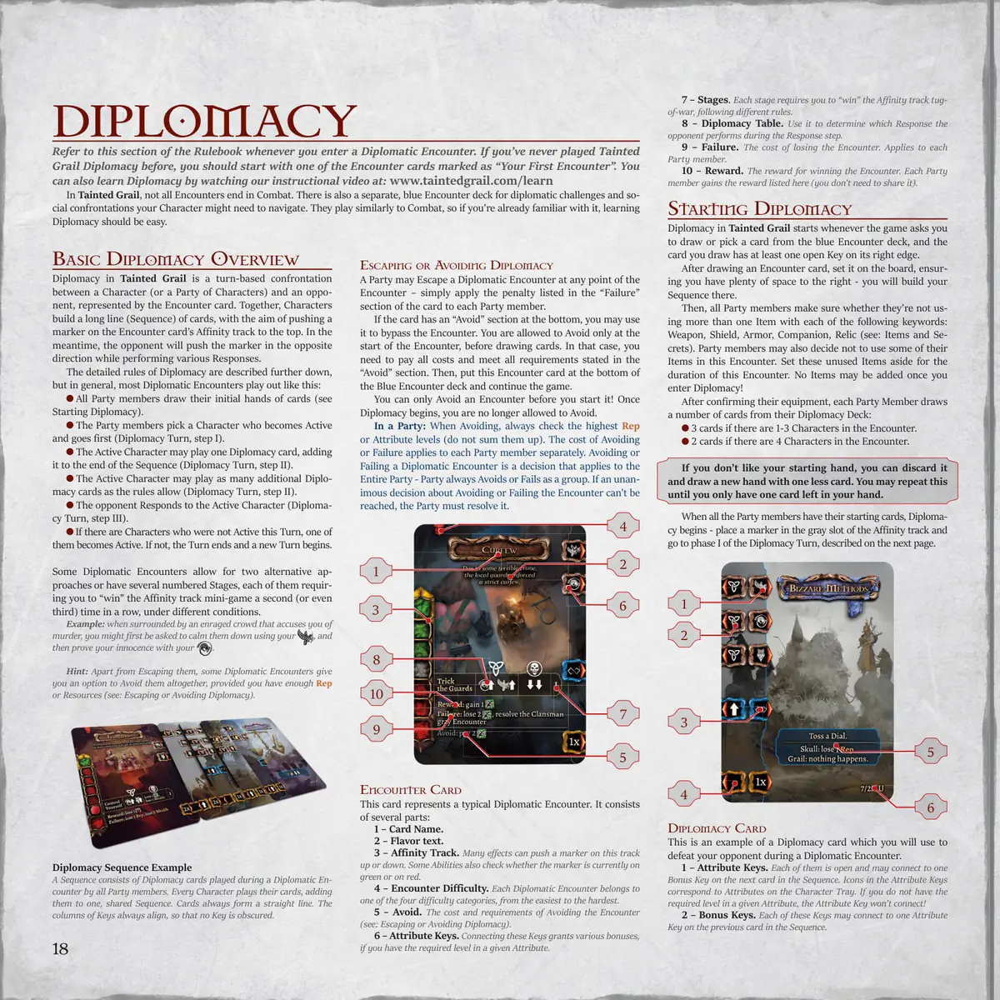
<figcaption>原版规则书 · 第 18 页（点击图片放大）</figcaption>
</figure>

<details class="mt-fold">
<summary>📝 第 18 页 AI 机翻对照（点击展开）</summary>
<div class="mt-body"><h2>基础外交概览</h2>

<p>《污圣杯》中的外交是一场基于回合的对决，发生在角色（或角色小队）与遭遇卡所代表的对手之间。角色们共同构建一条长长的卡牌序列（Sequence），目的是将遭遇卡上的亲和度轨道上的指示物推到顶端。与此同时，对手在执行各种回应的同时，会将指示物向相反方向推动。</p>

<p>外交的详细规则在后面描述，但总的来说，大多数外交遭遇的进行方式如下：</p>

<p>小队所有成员抽取初始手牌（参见"开始外交"）。</p>

<p>小队成员选择一个角色成为活跃角色并先行动（外交回合，步骤1）。</p>

<p>活跃角色可以打出一张外交卡，将其添加到序列的末尾（外交回合，步骤2）。</p>

<p>活跃角色可以按照规则允许打出尽可能多的额外外交卡（外交回合，步骤2）。</p>

<p>对手回应活跃角色（外交回合，步骤3）。</p>

<p>如果本轮有未成为活跃角色的角色，其中一个成为活跃角色。如果没有，回合结束，新回合开始。</p>

<p>一些外交遭遇允许两种不同的方法，或者有几个编号的阶段，每个阶段都要求你在不同条件下连续第二次（甚至第三次）赢得亲和度轨道小游戏。</p>

<p>示例：当被一群愤怒的包围，他们指控你谋杀时，你可能首先被要求使用你的安抚他们，然后使用你的证明自己的清白。</p>

<p>提示：除了逃离它们，一些外交遭遇给你一个完全避开它们的选项，前提是你有足够的声望或资源（参见：逃离或避开外交）。</p>

<h2>序列</h2>

<p>序列由所有小队成员在外交遭遇中打出的外交卡组成。每个角色都打出自己的卡牌，将它们添加到一个共享的序列中。卡牌总是形成一条直线。钥匙列总是对齐，这样没有钥匙会被遮挡。</p>

<h2>逃离或避开外交</h2>

<p>小队可以在遭遇的任何时候逃离外交遭遇——只需将卡牌"失败"部分列出的惩罚应用于每个小队成员即可。</p>

<p>如果卡牌底部有"避开"部分，你可以用它来绕过遭遇。你只能在遭遇开始前，在抽牌前使用避开。在这种情况下，你需要支付"避开"部分中列出的所有成本并满足所有要求。然后将此遭遇卡放到蓝色遭遇牌库底部，继续游戏。</p>

<p>你只能在遭遇开始前避开它。一旦外交开始，你就不再被允许避开。</p>

<p>在小队中：当避开时，总是检查最高的声望</p>

<p>或属性等级（不要将它们相加）。避免或失败的费用适用于每个队员单独计算。避免或失败一次外交遭遇是整个队伍的共同决定——队伍总是作为一个整体选择避免或失败。如果无法就避免或失败遭遇达成一致决定，队伍必须解决它。</p>

<h2>遭遇卡</h2>

<p>这张牌代表一次典型外交遭遇。它由几个部分组成：</p>

<p>Г ʦ ²Ãµ ²¾¶.</p>

<p>Д ʦ 	½²ÇÀà ŶÉÅ.</p>

<p>Е ʦ AȲ¿ºÅÊ Tò´¼. 许多效果可以推动这个轨道上的指示物向上或向下移动。一些能力也会检查指示物当前是在绿色区域还是红色区域。</p>

<p>Ж ʦ ¿´ÀƿŶà ºȲ´Æ½ÅÊ. 每次外交遭遇都属于四个难度类别之一，从最简单到最难。</p>

<p>З ʦ AÇÀºµ. 避免遭遇的成本和要求（参见：逃脱或避免外交）。</p>

<p>И ʦ AÅÅú³ÆŶ ¶ÊÄ. 连接这些钥匙会提供各种奖励，前提是你在特定属性上达到了所需等级。</p>

<p>Й ʦ Ų¸¶Ä. 每个阶段都需要你"赢得"亲和力轨道的拔河比赛，遵循不同的规则。</p>

<p>К ʦ ºÁ½À¾²´Ê T²³½¶. 使用它来确定对手在响应阶段执行哪个响应。</p>

<p>Л ʦ 	²º½Æö. 失败遭遇的成本。适用于每个队员。</p>

<p>ГВ ʦ ¶È²Ãµ. 赢得遭遇的奖励。每个队员获得此处列出的奖励（无需共享）。</p>

<h2>开始外交</h2>

<p>在《Tainted Grail》（污圣杯）中，每当游戏要求你从蓝色遭遇牌库中抽取或选择一张牌，且你抽到的牌右侧至少有一个开放的钥匙时，外交就开始。</p>

<p>抽取遭遇卡后，将其放在版图上，确保右侧有足够的空间——你将在此处构建你的序列。</p>

<p>然后，所有队员确认他们没有使用超过一件带有以下关键词的装备：武器（Weapon）、盾牌（Shield）、护甲（Armor）、伙伴（Companion）、遗物（Relic）（参见：装备与秘密）。队员也可以决定不使用他们的一些装备用于这次遭遇。将这些未使用的装备放在一旁，持续整个遭遇过程。一旦进入外交，就不能再添加任何装备。</p>

<p>确认装备后，每位队员从他们的外交牌库中抽取一定数量的牌：</p>

<p>如果遭遇中有Г-Е个角色，则抽取Е张牌。</p>

<p>如果遭遇中有Ж个角色，则抽取Д张牌。</p>

<p>· ÊÀÆ µÀ¿ʓÅ ½º¼¶ ÊÀÆà ÄŲÃź¿¸ ¹²¿µ, ÊÀÆ ´²¿ µºÄ´²Ãµ ºÅ</p>

<p>²¿µ µÃ²È ² ¿¶È ¹²¿µ ȺŹ À¿¶ ½¶ÄÄ ´²Ãµ. ÀÆ ¾²Ê öÁ¶²Å ŹºÄ</p>

<p>ƿź½ ÊÀÆ À¿½Ê ¹²Ç¶ À¿¶ ´²Ãµ ½¶·Å º¿ ÊÀÆà ¹²¿µ.</p>

<p>当所有队员都获得了起始牌后，外交开始——将一个指示物放在亲和力轨道的灰色槽位中，然后进入下一页描述的外交回合阶段1。</p>

<h2>外交卡</h2>

<p>这是一张你将使用的外交卡示例，</p>

<h2>外交</h2>

<p>每当进入外交遭遇战时，请参考规则书的本部分。如果你从未玩过《污浊圣杯：外交》，你应该从标记为"你的第一次遭遇战"的遭遇战卡牌之一开始。你也可以通过观看我们的教学视频来学习外交：ÈÈÈ.Ųº¿Å¶µ¸Ã²º½.´À¾ʤ½¶²Ã¿</p>

<p>在《污浊圣杯》中，并非所有遭遇战都以战斗结束。还有一个单独的蓝色遭遇战牌组，用于处理你的角色可能需要应对的外交挑战和社会对抗。它们的玩法与战斗相似，所以如果你已经熟悉战斗，学习外交应该很容易。</p>

<p>Г</p>

<p>Д</p>

<p>З</p>

<p>Е</p>

<p>И</p>

<p>Ж</p>

<p>И</p>

<p>Г</p>

<p>Е</p>

<p>Ж</p>

<p>Д</p>

<p>З</p>

<p>ГВ</p>

<p>Й</p>

<p>К</p></div>
</details>

<figure>
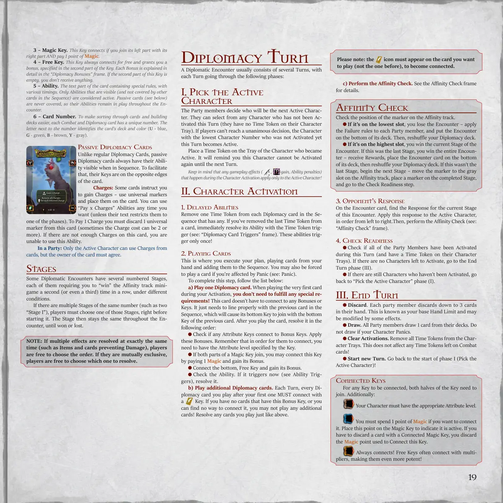
<figcaption>原版规则书 · 第 19 页（点击图片放大）</figcaption>
</figure>

<details class="mt-fold">
<summary>📝 第 19 页 AI 机翻对照（点击展开）</summary>
<div class="mt-body"><p>Е ʦ ²¸º´ ¶Ê. 如果将此钥匙的左侧部分与右侧部分连接起来并支付1点魔法值，则此钥匙连接。</p>

<p>Ж ʦ 	ö¶ ¶Ê. 此钥匙总是免费连接并授予你奖励，奖励在钥匙的第二部分中指定。每个奖励在"外交奖励"框中有详细说明。如果此钥匙的第二部分为空，你不会获得任何东西。</p>

<p>З ʦ A³º½ºÅÊ. 包含特殊规则的卡牌文本部分，具有各种时机。只有可见的（且未被序列中其他卡牌覆盖的）能力才被视为激活。被动卡牌（见下文）永远不会被覆盖，因此它们的能力在整个遭遇战中保持有效。</p>

<p>И ʦ ²Ãµ ƾ³¶Ã. 为了便于整理卡牌和构建牌库，每张战斗卡牌和外交卡牌都有唯一的编号。编号旁边的字母标识卡牌的牌库和颜色（ - 蓝色，G - 绿色，B - 棕色，Y - 灰色）。</p>

<h2>被动外交卡牌</h2>

<p>与常规外交卡牌不同，被动外交卡牌在序列中时其能力始终可见。为了便于实现这一点，它们的钥匙位于卡牌的相对边缘。</p>

<p>充能：一些卡牌指示你获得充能ʦ使用通用指示物并将其放置在卡牌上。你可以随时使用ʖay x Chargesʗ能力（除非其文本将其限制在某个阶段之一）。要支付Г充能，你必须从此卡牌上弃置Г个通用指示物（有时充能成本可能是Д或更多）。如果此卡牌上的充能不足，你无法使用此能力。</p>

<p>在队伍中：只有主动角色可以使用卡牌上的充能，但卡牌所有者必须同意。</p>

<h2>阶段</h2>

<p>一些外交遭遇战有多个编号阶段，每个阶段都要求你在不同条件下连续第二次（甚至是第三次）赢得亲和度轨道小游戏。</p>

<p>如果有多个相同编号的阶段（例如两个"ʖStage ʗ"），玩家必须在开始阶段前选择其中一个阶段。然后该阶段在整个遭遇战中保持不变，直到被赢取或失败。</p>

<p>OTʃ · ¾Æ½ÅºÁ½¶ ¶Ȯ¶´ÅÄ ²Ã¶ öÄÀ½Ç¶µ ²Å ¶É²´Å½Ê Ź¶ IJ¾¶ ź¾¶ ʯÄÆ´¹ ²Ä Ŷ¾Ä ²¿µ ´²ÃµÄ ÁöǶ¿Åº¿¸ ²¾²¸¶ʰ, Á½²Ê¶ÃÄ ²Ã¶ ·Ã¶¶ ÅÀ ´¹ÀÀĶ Ź¶ Àõ¶Ã. · Ź¶Ê ²Ã¶ ¾ÆÅƲ½½Ê ¶É´½ÆĺǶ, Á½²Ê¶ÃÄ ²Ã¶ ·Ã¶¶ ÅÀ ´¹ÀÀĶ ȹº´¹ À¿¶ ÅÀ öÄÀ½Ç¶.</p>

<h2>外交回合</h2>

<p>外交遭遇战通常包含多个回合，每个回合经历以下阶段：</p>

<h2>I. 选择主动角色</h2>

<p>队伍成员决定谁将成为下一个主动角色。他们可以从任何在本回合未被激活的角色中选择（他们的角色托盘上没有时间指示物）。如果玩家无法达成一致决定，则本回合中尚未激活的编号最低的角色将成为主动角色。</p>

<p>将一个时间指示物放在成为活跃角色的角色托盘上。它会提醒你这个角色直到下一个回合才能再次被激活。</p>

<p>请记住，在角色激活期间发生的任何游戏效果（获得、能力惩罚）仅适用于活跃角色！</p>

<h2>II. 角色激活</h2>

<h2>1. 延迟能力</h2>

<p>从序列中每个有时间指示物的外交卡上移除一个时间指示物。如果你从一张卡上移除了最后一个时间指示物，立即使用时间指示器触发其能力（参见"外交卡触发"框架）。这些能力只触发一次。</p>

<h2>2. 出牌</h2>

<p>这是你执行计划的地方，从手牌中出牌并将它们添加到序列中。如果你受到恐慌的影响，你也可能被迫出牌（参见恐慌）。</p>

<p>要完成这一步，请遵循以下列表：</p>

<p>首先，出第一张牌。在你的激活期间出第一张牌时，这张牌不需要连接任何奖励或钥匙。它只需要与序列中的前一张牌正确对齐，这会导致它的底部钥匙与前一张牌的底部钥匙连接。出牌后，按以下顺序解决它：</p>

<p>检查是否有属性钥匙连接到奖励钥匙。应用这些奖励。请记住，为了使它们连接，你需要拥有钥匙指定的属性等级。</p>

<p>如果魔法钥匙的两部分都连接，你可以通过支付魔法来连接这个钥匙并获得其奖励。</p>

<p>连接底部、免费的钥匙并获得其奖励。</p>

<p>检查能力。如果它现在触发（参见能力触发），解决它。</p>

<p>接下来，出额外的牌。每回合，你在第一张之后每张外交牌必须与一个钥匙连接。如果你没有具有该奖励钥匙的牌，或者你找不到连接它的方法，你就不能出任何额外的牌。解决你出的任何牌，就像上面一样。</p>

<p>请注意：图标必须出现在你想要出牌的牌上，并且必须与序列中的前一张牌连接。</p>

<p>最后，进行亲和力检查。有关详细信息，请参见亲和力检查框架。</p>

<h2>亲和力检查</h2>

<p>检查亲和力轨道上标记的位置。</p>

<p>如果它在最低的槽位，你遭遇失败，将失败规则应用于每个队员，并将遭遇牌放在其牌库底部。然后，洗混你的外交牌库。</p>

<p>如果它在最高的槽位，你赢得当前阶段的遭遇。如果这是最后一个阶段，你赢得整个遭遇，获得奖励，将遭遇牌放在其牌库底部，然后洗混你的外交牌库。如果这不是最后一个阶段，开始下一个阶段，将标记移动到亲和力轨道上的灰色槽位，在已完成的阶段上放置一个标记，</p>

<p>并进入"检查准备就绪"步骤。</p>

<h2>3. 对手的响应</h2>

<p>在遭遇卡上，找到本次遭遇当前阶段的响应。按从左到右的顺序将此响应应用于活跃角色。然后，执行亲和度检查（参见"亲和度检查"框）。</p>

<h2>4. 检查准备就绪</h2>

<p>检查所有队员是否在本回合已被激活（且其角色托盘上有时间指示物）。如果没有剩余角色需要激活，则进入结束回合阶段（§§§）。</p>

<p>如果仍有未被激活的角色，则返回"选择活跃角色"阶段（§）。</p>

<h2>III. 结束回合</h2>

<p>弃牌。每位队员将手牌弃至Е张。这被称为你的基础手牌上限，可能会被某些效果修改。</p>

<p>§Ã²È. 所有队员从其牌库中摸Г张牌。如果你的角色恐慌，则不摸牌。</p>

<p>½¶²Ã A´ÅºÇ²ÅºÀ¿Ä. 从角色托盘上移除所有时间指示物。这不影响留在战斗卡上的任何时间指示物。</p>

<p>ŲÃÅ ¿¶È TÆÿ.</p>

<p>返回阶段§开始处（选择活跃角色）。</p>

<h2>连接钥匙</h2>

<p>要连接任何钥匙，钥匙的两半需要连接在一起。此外：</p>

<p>你的角色必须具有相应的属性等级。</p>

<p>如果你想连接它，你必须花费Г点魔法。将这一点放在魔法钥匙上以表示它已激活。如果你必须弃掉一张带有已连接魔法钥匙的卡牌，你也会弃掉用于连接此钥匙的魔法点。</p>

<p>总是连接。三个钥匙经常与倍数连接，使它们更加强大。</p>

<p>1x</p>

<p>5/25 G</p>

<h2>收集线索</h2>

<p>获得1点充能。</p>

<p>移除所有充能：</p>

<p>每移除1点充能。</p></div>
</details>

<figure>
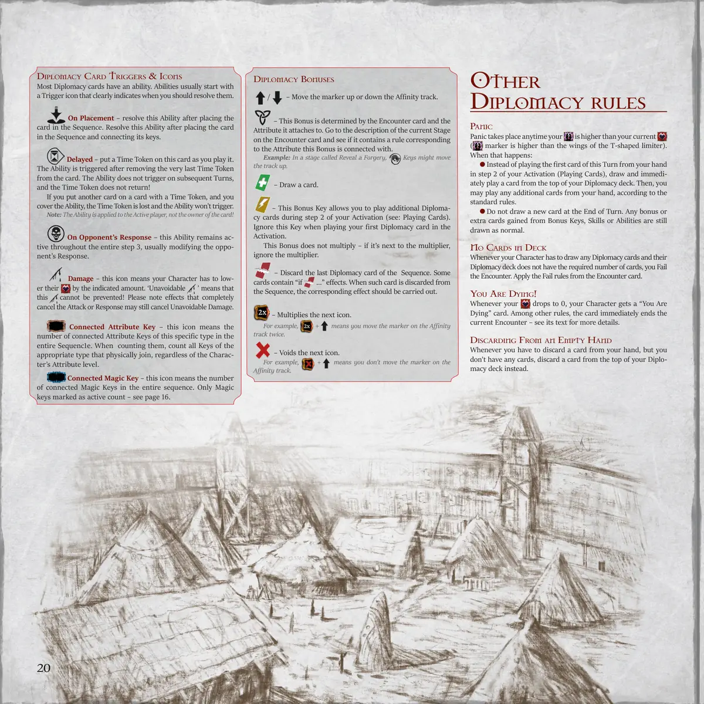
<figcaption>原版规则书 · 第 20 页（点击图片放大）</figcaption>
</figure>

<details class="mt-fold">
<summary>📝 第 20 页 AI 机翻对照（点击展开）</summary>
<div class="mt-body"><h2>外交卡牌触发器与图标</h2>

<p>大多数外交卡牌都有能力。能力通常以一个触发器图标开始，该图标明确指示你应该何时解决它们。</p>

<p>放置时 ʦ 在将卡牌放入序列后解决此能力。在将卡牌放入序列并连接其钥匙后解决此能力。</p>

<p>延迟 ʦ 在打出此卡牌时放置一个时间指示物于此卡牌上。在从该卡牌上移除最后一个时间指示物后，能力被触发。该能力不会在后续回合触发，且时间指示物不会返回。</p>

<p>如果你将另一张卡牌放在带有时间指示物的卡牌上，并且覆盖了该能力，则时间指示物会丢失，且该能力不会触发。</p>

<p>注意：能力应用于当前玩家，而非卡牌所有者！</p>

<p>对手响应时 ʦ 此能力在整个步骤 Е 期间保持活跃，通常会修改对手的响应。</p>

<p>伤害 ʦ 此图标意味着你的角色必须将其</p>

<p>按指示数量降低。ʒ"不可避免"</p>

<p>ʓ 意味着此</p>

<p>伤害无法避免ʋ 请注意，完全取消攻击或响应的效果仍可能取消 ʒ"不可避免" amage。</p>

<p>À¿¿¶´Å¶µ AÅÅú³ÆŶ ¶Ê ʦ 此图标表示在整个序列中连接的此类特定属性钥匙的数量。ʒ计数时，计算所有物理连接的适当类型的钥匙，无论角色的属性等级如何。</p>

<p>À¿¿¶´Å¶µ ²¸º´ ¶Ê ʦ 此图标表示在整个序列中连接的魔法钥匙的数量。只有标记为活跃的魔法钥匙才计算ʦ参见第 ГИ 页。</p>

<h2>外交奖励</h2>

<p>ʤ</p>

<p>ʦ 在亲和度轨道上向上或向下移动标记。</p>

<p>ʦ 此奖励由遭遇卡牌及其附加的属性决定。</p>

<p>查看当前遭遇卡牌阶段的描述，看是否包含与此奖励相连属性对应的规则。</p>

<p>示例：在一个名为"揭露伪造品"的阶段中，钥匙可能会使轨道向上移动。</p>

<p>ʦ 摸一张牌。</p>

<p>ʦ 此奖励钥匙允许你在激活步骤 Д 期间打出额外外交卡牌（参见ʃ 打出卡牌）。</p>

<p>在激活阶段打出第一张外交卡牌时，忽略此钥匙。</p>

<p>此奖励不乘以ʒ如果它位于乘数旁边，则忽略乘数。</p>

<p>ʦ 弃掉序列的最后一张外交卡牌。某些卡牌包含 ʖ如果</p>

<p>ʈʗ 效果。当此类卡牌从序列中被弃置时，应执行相应效果。</p>

<p>2x ʦ 使下一个图标效果翻倍。</p>

<p>例如，2x + 表示你在亲和度轨道上移动标记两次。</p>

<p>ʦ 取消下一个图标。</p>

<p>例如，</p>

<p>+ 表示你不移动亲和度轨道上的标记。</p>

<h2>其他</h2>

<h2>外交规则</h2>

<h2>恐慌</h2>

<p>恐慌在你</p>

<p>高于你当前</p>

<p>(</p>

<p>标记高于T形限制器的翅膀位置)时发生。</p>

<p>当这种情况发生时ʃ</p>

<p>&lt;!--page:N--&gt;</p>

<p>在你的激活阶段（打出卡牌）的步骤Д中，不从你的手牌打出本回合的第一张牌，而是从你的外交牌库顶部摸一张牌并立即打出。然后，你可以根据标准规则从你的手牌打出任意额外的卡牌。</p>

<p>在回合结束时不要摸新牌。从奖励密钥、技能或能力获得的任何奖励或额外卡牌仍按正常方式摸取。</p>

<h2>牌库中没有卡牌</h2>

<p>每当你的角色需要摸取外交牌，而其外交牌库没有所需数量的牌时，你将遭遇失败。应用遭遇卡牌中的失败规则。</p>

<p>你正在死亡！</p>

<p>每当你的生命值降至В，你的角色会获得一张"你正在死亡"卡牌。除其他规则外，该卡牌会立即结束当前遭遇（详见卡牌文本以获取更多信息）。</p>

<h2>从空手牌中弃牌</h2>

<p>每当你需要从手牌中弃牌，但你没有任何手牌时，改为从你的外交牌库顶部弃一张牌。</p></div>
</details>

<figure>
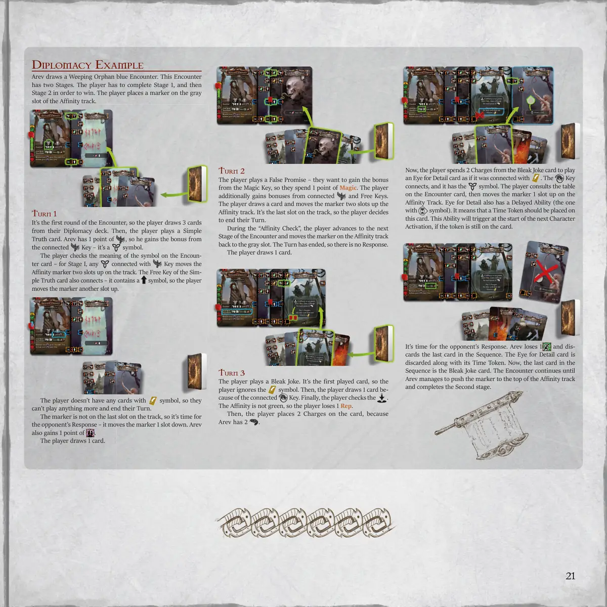
<figcaption>原版规则书 · 第 21 页（点击图片放大）</figcaption>
</figure>

<details class="mt-fold">
<summary>📝 第 21 页 AI 机翻对照（点击展开）</summary>
<div class="mt-body"><h2>外交示例</h2>

<p>Arev 抽到一张"哭泣的孤儿蓝"遭遇卡。这张遭遇卡有两个阶段。玩家必须完成阶段 Г，然后完成阶段 Д才能获胜。玩家将一个指示物放在亲和度轨道的灰色槽位上。</p>

<h2>回合 1</h2>

<p>这是遭遇卡的第一轮，所以玩家从他们的外交牌库中抽 Е 张牌。然后，玩家打出一张简单真相卡。Arev 有 Г 点亲和度，所以他获得了连接钥匙的加成，因为它是 符号。</p>

<p>玩家检查遭遇卡上的符号含义——对于阶段 ，任何连接了 符号的钥匙都会将亲和度指示物在轨道上向前移动两个槽位。简单真相卡的三把钥匙也连接了——它包含一个 符号，所以玩家将指示物再向前移动一个槽位。</p>

<p>玩家没有带有 符号的牌，所以他们无法再打出任何牌，结束他们的回合。</p>

<p>指示物不在轨道的最后一个槽位上，所以轮到对手的回应——它将指示物向后移动 Г 个槽位。Arev 也获得了 Г 点亲和度。</p>

<p>玩家抽 Г 张牌。</p>

<h2>回合 2</h2>

<p>玩家打出一张虚假承诺——他们想获得魔法钥匙的加成，所以他们花费 Г 点魔法。玩家 additionally 从连接的 和 三把钥匙中获得加成。</p>

<p>玩家抽一张牌并将指示物在亲和度轨道上向前移动两个槽位。这是轨道上的最后一个槽位，所以玩家决定结束他们的回合。</p>

<p>在"亲和度检查"期间，玩家推进到遭遇卡的下一阶段，并将亲和度轨道上的指示物移回灰色槽位。回合已经结束，所以没有回应。</p>

<p>玩家抽 Г 张牌。</p>

<h2>回合 3</h2>

<p>玩家打出一张 bleak joke。这是打出的第一张牌，所以玩家忽略 符号。然后，由于连接的 符号钥匙，玩家抽 Г 张牌。最后，玩家检查 符号。</p>

<p>亲和度不是绿色，所以玩家失去 Г 点声望。</p>

<p>然后，玩家在卡牌上放置 Д 个充能，因为 Arev 有 Д 点魔法。</p>

<p>现在，玩家从 bleak joke 卡牌上花费 Д 个充能，来打出一张细节之眼卡，就好像它连接了 符号一样。这把钥匙连接了，并且它有 符号。玩家查看遭遇卡上的表格，然后将指示物在亲和度轨道上向前移动 Г 个槽位。细节之眼卡还有一个延迟能力（带有 符号的那一个）。这意味着应该在这张卡牌上放置一个时间指示物。如果指示物仍然在卡牌上，这个能力将在下一个角色激活开始时触发。</p>

<p>轮到对手的回应。Arev 失去 Г 点声望并弃掉序列中的最后一张牌。细节之眼卡与其时间指示物一同被弃掉。现在，序列中的最后一张牌是 bleak joke 卡牌。遭遇战继续，直到 Arev 成功将指示物推到亲和度轨道的顶部并完成第二阶段。</p>

<p>d阶段。</p></div>
</details>

<figure>
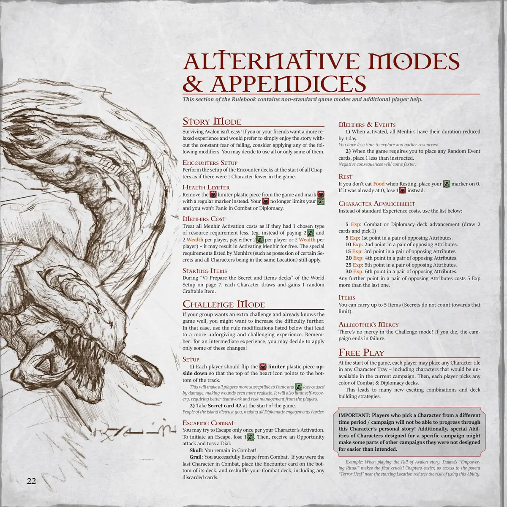
<figcaption>原版规则书 · 第 22 页（点击图片放大）</figcaption>
</figure>

<details class="mt-fold">
<summary>📝 第 22 页 AI 机翻对照（点击展开）</summary>
<div class="mt-body"><h2>故事模式</h2>

<p>在阿瓦隆生存并不容易。如果你或你的朋友想要一个更轻松的体验，并希望在不持续担心失败的情况下 simply 享受故事，可以考虑应用以下任意一个或多个变体规则。</p>

<h2>遭遇设置</h2>

<p>在所有章节开始时，按照游戏中的角色数量少一个来设置遭遇牌库。</p>

<h2>生命值限制</h2>

<p>从游戏中移除心形限制指示物，并用普通记号笔代替标记。你的生命值不再限制你的生命值，你在战斗或外交中不会陷入恐慌。</p>

<h2>巨石成本</h2>

<p>将所有巨石激活成本视为比其原本要求的资源类型少一种。（例如，原本需要支付每名玩家的力量和财富，现在只需支付每名玩家的力量或每名玩家的财富）。这可能导致免费激活巨石。巨石列出的特殊要求（例如拥有特定秘密，以及所有角色在同一位置）仍然适用。</p>

<h2>初始物品</h2>

<p>在准备阶段（第9页），根据世界设置准备秘密和物品牌库，每个角色抽取并获得一个随机可制作物品。</p>

<h2>挑战模式</h2>

<p>如果你的小组想要额外的挑战，并且已经非常熟悉游戏，你可能想要进一步提高难度。在这种情况下，使用下列规则变体，以获得更严苛和更具挑战性的体验。记住，为了获得中等难度的体验，你可以决定只应用其中一些变化。</p>

<h2>设置</h2>

<ol>
  <li>每个玩家应将心形限制指示物翻转，使心形图标的顶部指向轨道底部。</li>
</ol>

<p>这将使所有玩家更容易受到恐慌和伤害造成的损失，使伤口更加真实。它还会限制自我恢复，要求玩家更好的团队合作和风险管理。</p>

<ol>
  <li>游戏开始时，获得"岛民的不信任"（Islanders' Distrust）。</li>
</ol>

<p>岛上的人们不信任你，使所有外交互动更加困难。</p>

<h2>逃离战斗</h2>

<p>在你的角色激活阶段，你只能尝试逃离一次。要发起逃离，失去1点生命值。然后，遭受一次反击并投掷一个骰子：</p>

<ul>
  <li>骷髅：你留在战斗中。</li>
  <li>圣杯：你成功逃离战斗。</li>
</ul>

<p>如果你是战斗中最后一个角色，将遭遇牌放在牌库底部，并洗混你的战斗牌，包括任何已弃置的牌。</p>

<h2>巨石与事件</h2>

<ol>
  <li>激活时，所有巨石的持续时间减少1天。</li>
</ol>

<p>你探索和收集资源的时间更少了！</p>

<ol>
  <li>当游戏要求你放置任何随机事件牌时，比指示少放置1张。</li>
</ol>

<p>负面后果会更快到来。</p>

<h2>休息</h2>

<p>如果你在休息时不吃食物，将你的指示物放在B位置。</p>

<p>如果它已经在B位置，则失去1点生命值。</p>

<h2>角色成长</h2>

<p>使用以下列表代替标准经验值费用：</p>

<p>З Expʃ 战斗或外交牌库进阶（摸 Д 张牌并选择 Г）</p>

<p>З Expʃ 一对对立属性中的第一个点。</p>

<p>ГВ Expʃ 一对对立属性中的第二个点。</p>

<p>ГЗ Expʃ 一对对立属性中的第三个点。</p>

<p>ДВ Expʃ 一对对立属性中的第四个点。</p>

<p>ДЗ Expʃ 一对对立属性中的第五个点。</p>

<p>ЕВ Expʃ 一对对立属性中的第六个点。</p>

<p>一对对立属性中的任何额外点比上一个点多 З Exp。</p>

<h2>物品</h2>

<p>你可以携带最多 З 个物品（秘密不计入该限制）。</p>

<h2>全慈之母</h2>

<p>挑战模式中没有仁慈ʋ 如果你死亡，战役将以失败告终。</p>

<h2>自由模式</h2>

<p>游戏开始时，每位玩家可以将任何角色板块放置在任何角色托盘中ʦ 包括在当前战役中不可用的角色。然后，每位玩家选择任意颜色的战斗或外交牌组。</p>

<p>这带来了许多新的令人兴奋的组合和牌组构筑策略。</p>

<h2>替代模式</h2>

<h2>&amp; 附录</h2>

<p>规则书的本节包含非标准游戏模式和额外的玩家帮助。</p></div>
</details>

<figure>
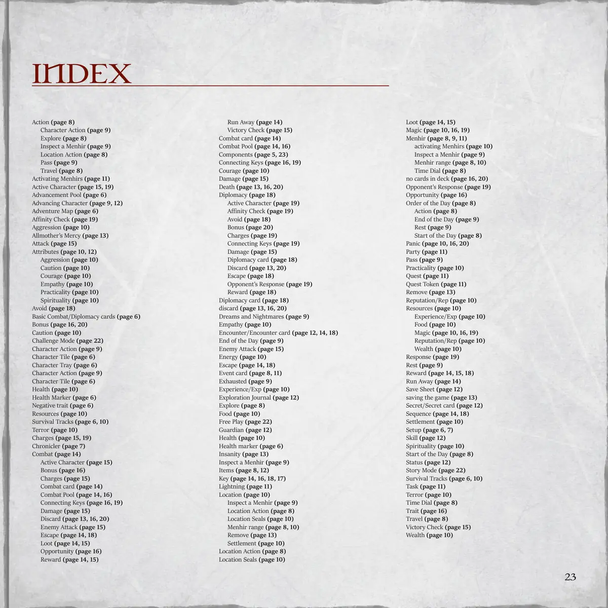
<figcaption>原版规则书 · 第 23 页（点击图片放大）</figcaption>
</figure>

<details class="mt-fold">
<summary>📝 第 23 页 AI 机翻对照（点击展开）</summary>
<div class="mt-body"><p>行动 行动</p>

<p>角色行动 行动</p>

<p>探索 行动</p>

<p>检查巨石 行动</p>

<p>位置行动 行动</p>

<p>跳过 行动</p>

<p>移动 行动</p>

<p>激活巨石 行动</p>

<p>活跃角色 行动</p>

<p>提升 工具</p>

<p>提升角色 行动</p>

<p>冒险地图 行动</p>

<p>亲和度检查 行动</p>

<p>攻击性 行动</p>

<p>母神怜悯 行动</p>

<p>攻击 行动</p>

<p>属性 行动</p>

<p>攻击性 行动</p>

<p>谨慎 行动</p>

<p>勇气 行动</p>

<p>共情 行动</p>

<p>实用性 行动</p>

<p>灵性 行动</p>

<p>避免 行动</p>

<p>基础战斗/外交卡牌 行动</p>

<p>奖励 行动</p>

<p>谨慎 行动</p>

<p>挑战模式 行动</p>

<p>角色行动 行动</p>

<p>角色板块 行动</p>

<p>角色托盘 行动</p>

<p>角色行动 行动</p>

<p>角色板块 行动</p>

<p>生命值 行动</p>

<p>生命值指示物 行动</p>

<p>负面特质 行动</p>

<p>资源 行动</p>

<p>生存轨道 行动</p>

<p>恐怖 行动</p>

<p>充能 行动</p>

<p>编年史作者 行动</p>

<p>战斗 行动</p>

<p>活跃角色 行动</p>

<p>奖励 行动</p>

<p>充能 行动</p>

<p>战斗卡牌 行动</p>

<p>战斗工具 行动</p>

<p>连接钥匙 行动</p>

<p>伤害 行动</p>

<p>弃牌 行动</p>

<p>敌人攻击 行动</p>

<p>逃脱 行动</p>

<p>战利品 行动</p>

<p>机会 行动</p>

<p>奖励 行动</p>

<p>逃跑 行动</p>

<p>胜利检查 行动</p>

<p>战斗卡牌 行动</p>

<p>战斗工具 行动</p>

<p>组件 行动</p>

<p>连接钥匙 行动</p>

<p>勇气 行动</p>

<p>伤害 行动</p>

<p>死亡 行动</p>

<p>外交 行动</p>

<p>活跃角色 行动</p>

<p>亲和度检查 行动</p>

<p>避免 行动</p>

<p>奖励 行动</p>

<p>充能 行动</p>

<p>连接钥匙 行动</p>

<p>伤害 行动</p>

<p>外交卡牌 行动</p>

<p>弃牌 行动</p>

<p>逃脱 行动</p>

<p>对手回应 行动</p>

<p>奖励 行动</p>

<p>外交卡牌 行动</p>

<p>弃牌 行动</p>

<p>梦境与噩梦 行动</p>

<p>共情 行动</p>

<p>遭遇/遭遇卡牌 行动</p>

<p>日终 行动</p>

<p>敌人攻击 行动</p>

<p>能量 行动</p>

<p>逃脱 行动</p>

<p>事件卡牌 行动</p>

<p>耗尽 行动</p>

<p>经验/Exp 行动</p>

<p>探索日志 行动</p>

<p>探索 行动</p>

<p>食物 行动</p>

<p>免费游玩 行动</p>

<p>守护者 行动</p>

<p>生命值 行动</p>

<p>生命值指示物 行动</p>

<p>疯狂 行动</p>

<p>检查巨石 行动</p>

<p>物品 行动</p>

<p>钥匙 行动</p>

<p>闪电 行动</p>

<p>位置 行动</p>

<p>检查巨石 行动</p>

<p>位置行动 行动</p>

<p>位置封印 行动</p>

<p>巨石范围 行动</p>

<p>移除 行动</p>

<p>定居点 行动</p>

<p>位置行动 行动</p>

<p>位置封印 行动</p>

<p>战利品 行动</p>

<p>魔法 行动</p>

<p>巨石 行动</p>

<p>激活巨石 行动</p>

<p>检查巨石 行动</p>

<p>巨石范围 行动</p>

<p>时间骰子 行动</p>

<p>牌库中没有卡牌 行动</p>

<p>对手回应 行动</p>

<p>机会 行动</p>

<p>日序 行动</p>

<p>行动 行动</p>

<p>日终 行动</p>

<h2>索引</h2></div>
</details>

<figure>
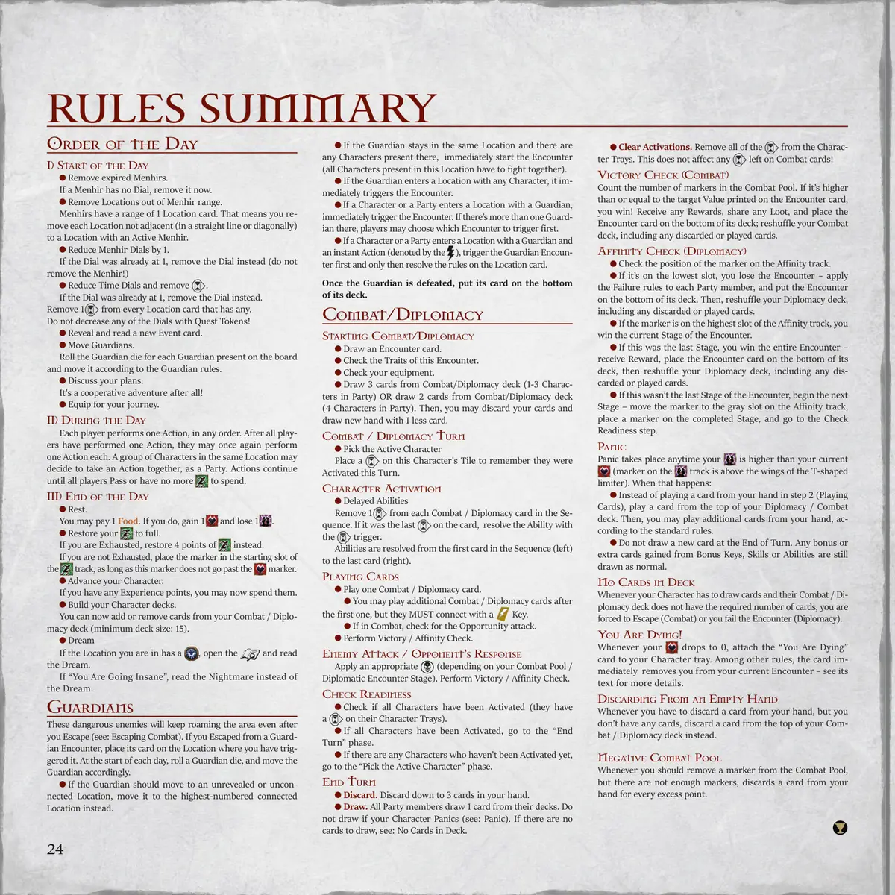
<figcaption>原版规则书 · 第 24 页（点击图片放大）</figcaption>
</figure>

<details class="mt-fold">
<summary>📝 第 24 页 AI 机翻对照（点击展开）</summary>
<div class="mt-body"><h2>规则摘要</h2>

<h2>日常顺序</h2>

<h2>I) 一天开始</h2>

<p>移除过期的巨石柱。</p>

<p>如果巨石柱没有标记，现在就移除它。</p>

<p>移除超出巨石柱范围的地点。</p>

<p>巨石柱的范围为1个地点卡。这意味着你要移除每个不与带有活跃巨石柱的地点相邻（直线或对角线）的地点。</p>

<p>将巨石柱标记减少1。</p>

<p>如果标记已经是1，则移除标记（不要移除巨石柱！）</p>

<p>减少时间标记并移除。</p>

<p>如果标记已经是1，则移除标记。</p>

<p>从每个有任何标记的地点卡中移除1。</p>

<p>不要减少带有任务标记的任何标记。</p>

<p>翻开并阅读一张新事件卡。</p>

<p>移动守卫。</p>

<p>为版图上每个存在的守卫掷守卫骰子，并根据守卫规则移动它。</p>

<p>讨论你们的计划。</p>

<p>毕竟这是一场合作冒险！</p>

<p>为你的旅程装备。</p>

<h2>II) 白天期间</h2>

<p>每位玩家按任意顺序执行一个行动。所有玩家都执行完一个行动后，他们可以再次每人执行一个行动。在同一地点的一组角色可以决定一起作为一个团体执行行动。行动持续进行，直到所有玩家跳过或没有更多精力可花费。</p>

<h2>III) 一天结束</h2>

<p>休息。</p>

<p>你可以支付1食物。如果你这样做，获得1精力并失去1生命值。</p>

<p>将你的精力恢复到满值。</p>

<p>如果你精疲力竭，则恢复3点精力。</p>

<p>如果你没有精疲力竭，只要这个标记不会超过疯狂标记，就将标记放在精力轨道的起始槽位。</p>

<p>推进你的角色。</p>

<p>如果你有任何经验点，你现在可以花费它们。</p>

<p>构建你的角色牌库。</p>

<p>你现在可以从你的战斗或外交牌库中添加或移除卡牌（最小牌库大小：10）。</p>

<p>梦境</p>

<p>如果你所在的地点有一个梦境，打开它并阅读梦境。</p>

<p>如果你"即将疯狂"，则阅读噩梦而不是梦境。</p>

<h2>守卫</h2>

<p>这些危险的敌人即使在你们逃脱后（见：逃脱战斗）仍会在该区域游荡。如果你从守卫遭遇战中逃脱，将其卡牌放在你触发它的地点。每天开始时，掷一个守卫骰子，并相应地移动守卫。</p>

<p>如果守卫应该移动到未翻开或未连接的地点，则将其移动到编号最高的已连接地点。</p>

<p>如果守卫停留在同一地点且那里有任何角色，立即开始遭遇战（此地点存在的所有角色必须一起战斗）。</p>

<p>如果守卫进入有任何角色的地点，它立即触发遭遇战。</p>

<p>如果角色或团体进入有守卫的地点，立即触发遭遇战。如果那里有多个守卫，玩家可以选择先触发哪个遭遇战。</p>

<p>如果角色或团体进入有守卫和即时行动（由</p>

<h2>战斗/外交</h2>

<h2>开始战斗/外交</h2>

<p>抽一张遭遇卡。</p>

<p>检查这张遭遇的特性。</p>

<p>检查你的装备。</p>

<p>从战斗/外交牌库抽Г张牌（如果派系中有Г角色）或抽Д张牌（如果派系中有Ж角色）。然后，你可以弃掉你的牌，并少抽一张牌组成新的手牌。</p>

<h2>战斗/外交回合</h2>

<p>选择活跃角色</p>

<p>将一个指示物放在这个角色的板块上，记住他们在本回合已被激活。</p>

<h2>角色激活</h2>

<p>延迟能力</p>

<p>从序列中每张战斗/外交卡上移除Г个指示物。如果这是卡上最后一个指示物，则触发能力并解决该能力。</p>

<p>能力从序列中的第一张卡（左侧）到最后一张卡（右侧）依次解决。</p>

<h2>出牌</h2>

<p>打出一张战斗/外交卡。</p>

<p>你可以在第一张牌之后打出额外的战斗/外交卡，但它们必须通过一个"p"键连接。</p>

<p>如果在战斗中，检查是否有反击机会。</p>

<p>进行胜利或亲和度检查。</p>

<h2>敌方攻击/对手回应</h2>

<p>应用适当的指示物（取决于你的战斗工具或外交遭遇阶段）。进行胜利或亲和度检查。</p>

<h2>检查准备状态</h2>

<p>检查所有角色是否都已激活（他们的角色托盘上有一个指示物）。</p>

<p>如果所有角色都已激活，进入"结束回合"阶段。</p>

<p>如果有任何角色尚未激活，进入"选择活跃角色"阶段。</p>

<h2>结束回合</h2>

<p>ºÄ´²Ãµ。将手牌弃至Е张。</p>

<p>òÈ。所有队员从他们的牌库抽Г张牌。如果你的角色恐慌（见恐慌），则不要抽牌。如果没有可抽的牌，见牌库无牌。</p>

<p>½¶²Ã A´ÅºÇ²ÅºÀ¿Ä。从角色托盘上移除所有指示物。这不影响留在战斗卡上的任何指示物。</p>

<h2>胜利检查（战斗）</h2>

<p>计算战斗工具中的指示物数量。如果它大于或等于遭遇卡上印制的目标值，你就赢了。获得任何奖励，分享任何战利品，并将遭遇卡放在其牌库底部。然后洗混你的战斗牌库，包括任何已弃置或已打出的牌。</p>

<h2>亲和度检查（外交）</h2>

<p>检查亲和度轨道上指示物的位置。</p>

<p>如果它在最低的槽位，你输掉了这次遭遇。对每个队员应用失败规则，并将遭遇卡放在其牌库底部。然后洗混你的外交牌库，包括任何已弃置或已打出的牌。</p>

<p>如果指示物在亲和度轨道的最高槽位，你赢得了当前阶段的遭遇。</p>

<p>如果这是最后一个阶段，你赢得了整个遭遇。获得奖励，将遭遇卡放在其牌库底部。</p>

<h2>洗牌</h2>

<p>然后洗你的外交牌库，包括任何已弃置或已打出的牌。</p>

<p>如果这不是遭遇战的最后阶段，开始下一阶段：将标记移动到亲和度轨道上的灰色槽位，在已完成阶段上放置一个标记，然后进入准备检查步骤。</p>

<h2>恐慌</h2>

<p>恐慌发生在任何时候你的恐慌值高于当前恐慌值（亲和度轨道上的标记位于T形限制器的翅膀上方）。当这种情况发生时：</p>

<p>在第3步（出牌）中，不从你的手牌出牌，而是从你的外交或战斗牌库顶部出牌。然后，你可以根据标准规则从手牌中打出额外的牌。</p>

<p>在回合结束时不要摸新牌。从奖励密钥、技能或能力获得的任何奖励或额外牌仍正常摸取。</p>

<h2>牌库无牌</h2>

<p>每当你的角色需要摸牌，但他的战斗或外交牌库没有所需数量的牌时，你必须强制逃脱（战斗）或遭遇失败（外交）。</p>

<p>你正在垂死！</p>

<p>每当你的生命值降至0，将"你正在垂死"卡牌附加到你的角色托盘上。除其他规则外，该卡牌会立即让你离开当前遭遇战——详见其文本。</p>

<h2>空手弃牌</h2>

<p>每当你需要从手牌弃牌，但你没有手牌时，改为从你的战斗或外交牌库顶部弃牌。</p>

<h2>负数战斗池</h2>

<p>每当你应该从战斗池中移除标记，但没有足够的标记时，每超额一点弃置一张手牌。</p></div>
</details>
        </div>

        <footer class="source-note">
<p>来源：<a href="https://awakenrealms.com/images/download/Tainted%20Grail%20FoA/2.0/TG_CB_Rulebook_280x280mm_bleeds3mm%20%5B24%20pages%5D_%5Bcorrected_15_09_2023%5D.pdf" target="_blank" rel="noopener">Awaken Realms 官方</a>（2019 TG_CB_Rulebook_280x280mm_bleeds3mm%20%5B24%20pages%5D_%5Bcorrected_15_09_2023%5D.pdf）· 译文仅供个人学习查阅，规则内容归 Awaken Realms 及版权方所有 · 原文版權與商标归原出版方。</p>
</footer>
      </article>
    </main>
  </div>

  <button class="to-top" aria-label="返回顶部" data-i18n-aria="backTop">↑</button>
  <script src="../assets/js/i18n.js"></script>
  <script src="../assets/js/main.js"></script>
</body>
</html>
